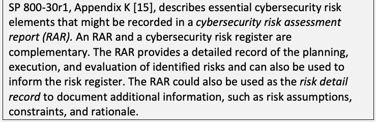
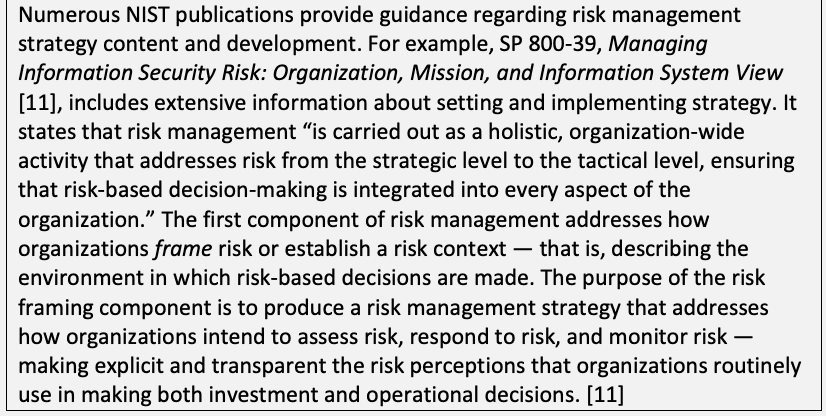
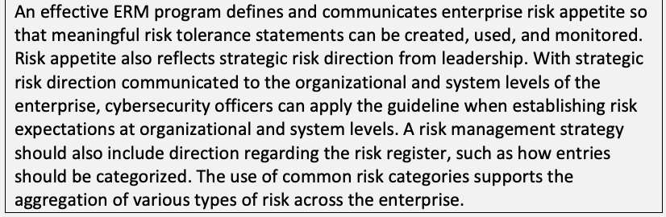
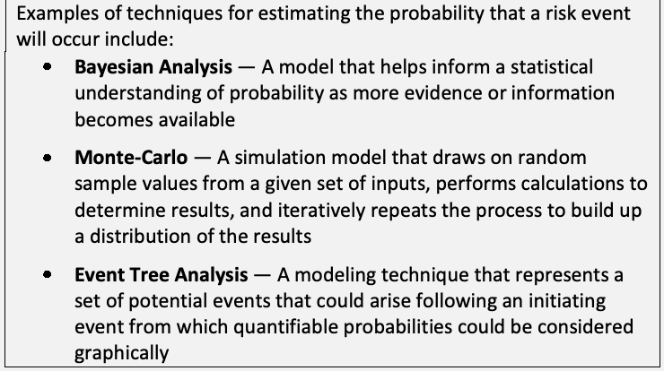
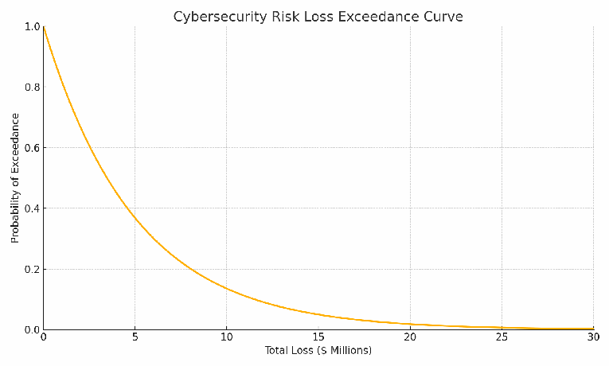
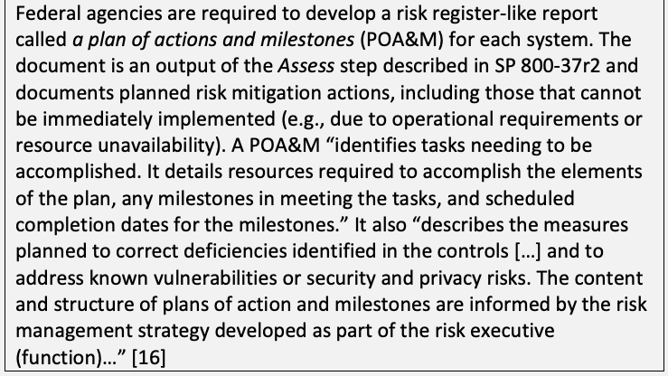
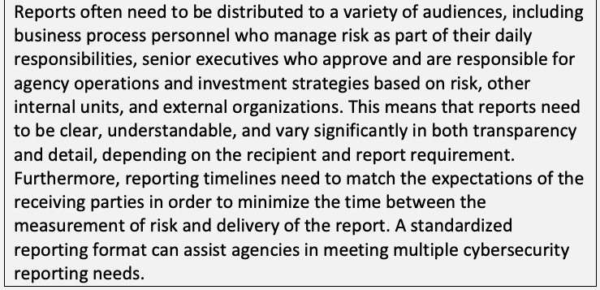

NIST IR 8286 Rev. 1 日本語訳
英語タイトル : Integrating Cybersecurity and Enterprise Risk Management (ERM)日本語タイトル : サイバーセキュリティとエンタープライズリスク管理（ERM）の統合
公開日 : 2025-12-18
原文URL : https://csrc.nist.gov/pubs/ir/8286/r1/final
翻訳編集 : 自動生成（有志による非公式の日本語訳）, 原文取得日 : 2026-10-31, 訳文 : 712 / 713 ブロック
[要約] NIST IR 8286 Rev. 1 は、エンタープライズ内の個々の組織が、エンタープライズのERMプロセスを通じて共有する、サイバーセキュリティリスクの情報を改善する助けとなることを意図した報告書です。そうすることで、エンタープライズとその構成組織は、より広い使命と事業目標の文脈の中で、サイバーセキュリティリスクをよりよく識別、評価、管理できるとしています。サイバーセキュリティリスクを整理するためのリスク登録簿の使用に関するガイダンスを含み、通常はシステムや組織の下位レベルで扱われるリスクの測定値を、より広いエンタープライズレベルに集約することの価値を説明しています。ERM の概要、CSRM の出力と ERM の入力との間のギャップ、ERM プロセス全体を通じたサイバーセキュリティリスクの考慮事項を扱います。
NIST Interagency Report
NIST機関間報告書
NIST IR 8286r1
NIST IR 8286r1
Integrating Cybersecurity and Enterprise Risk Management (ERM)
サイバーセキュリティとエンタープライズリスク管理(ERM)の統合
Stephen Quinn Julie Chua Nahla Ivy R. K. Gardner Karen Scarfone Matthew C. Smith Greg Witte
Stephen Quinn Julie Chua Nahla Ivy R. K. Gardner Karen Scarfone Matthew C. Smith Greg Witte
This publication is available free of charge from: https://doi.org/10.6028/NIST.IR.8286r1
この刊行物は次の場所から無料で入手できます。https://doi.org/10.6028/NIST.IR.8286r1
NIST Interagency Report
NIST機関間報告書
NIST IR 8286r1
NIST IR 8286r1
Integrating Cybersecurity and Enterprise Risk Management (ERM)
サイバーセキュリティとエンタープライズリスク管理(ERM)の統合
Stephen Quinn
Stephen Quinn
Computer Security Division Information Technology Laboratory
Computer Security Division Information Technology Laboratory
Julie Chua
Julie Chua
Applied Cybersecurity Division Information Technology Laboratory
Applied Cybersecurity Division Information Technology Laboratory
Nahla Ivy
Nahla Ivy
Enterprise Risk Management Office
Enterprise Risk Management Office
Office of Financial Resource Management
Office of Financial Resource Management
R. K. Gardner
R. K. Gardner
New World Technology Partners
New World Technology Partners
Karen Scarfone Trusted Cyber Annex
Karen Scarfone Trusted Cyber Annex
Matthew C. Smith Seemless Transition LLC
Matthew C. Smith Seemless Transition LLC
Greg Witte Palydin LLC
Greg Witte Palydin LLC
This publication is available free of charge from: https://doi.org/10.6028/NIST.IR.8286r1
この刊行物は次の場所から無料で入手できます。https://doi.org/10.6028/NIST.IR.8286r1
December 2025
2025年12月
［米国商務省の紋章。公的な標章のため、この非公式サイトには掲載していません。原本 PDF を参照してください。］
U.S. Department of Commerce Howard Lutnick, Secretary
U.S. Department of Commerce Howard Lutnick, Secretary
National Institute of Standards and Technology
National Institute of Standards and Technology
Craig Burkhardt, Acting Under Secretary of Commerce for Standards and Technology and Acting NIST Director
Craig Burkhardt, Acting Under Secretary of Commerce for Standards and Technology and Acting NIST Director
Certain equipment, instruments, software, or materials, commercial or non-commercial, are identified in this paper in order to specify the experimental procedure adequately. Such identification does not imply recommendation or endorsement of any product or service by NIST, nor does it imply that the materials or equipment identified are necessarily the best available for the purpose.
実験手順を適切に特定するため、この論文では特定の装置、機器、ソフトウェア、材料(商用・非商用を問わない)を示しています。このように示すことは、NISTがいかなる製品やサービスも推奨または支持していることを意味せず、示された材料や装置がその目的に最適であるとも限りません。
There may be references in this publication to other publications currently under development by NIST in accordance with its assigned statutory responsibilities. The information in this publication, including concepts and methodologies, may be used by federal agencies even before the completion of such companion publications. Thus, until each publication is completed, current requirements, guidelines, and procedures, where they exist, remain operative. For planning and transition purposes, federal agencies may wish to closely follow the development of these new publications by NIST.
この刊行物は、法令で定められた責務に従ってNISTが現在策定中の他の刊行物に言及している場合があります。概念や方法論を含む本刊行物の情報は、そうした関連刊行物の完成前であっても、連邦機関が利用してもよいです。したがって、それぞれの刊行物が完成するまでは、現行の要件、ガイドライン、手順が存在する場合には、それらが引き続き有効です。計画と移行のため、連邦機関はNISTによるこれらの新しい刊行物の策定状況を注意深く見守るべきです。
Organizations are encouraged to review all draft publications during public comment periods and provide feedback to NIST. Many NIST cybersecurity publications, other than the ones noted above, are available at https://csrc.nist.gov/publications.
組織は、パブリックコメント期間中にすべてのドラフト刊行物を確認し、NISTにフィードバックを提供することが推奨されています。上記以外にも、NISTの多くのサイバーセキュリティ関連刊行物が https://csrc.nist.gov/publications で公開されています。
NIST Technical Series Policies Copyright, Use, and Licensing Statements NIST Technical Series Publication Identifier Syntax
NISTテクニカルシリーズの方針、著作権・使用・ライセンスに関する声明、NISTテクニカルシリーズ刊行物識別子の構文
Publication History Approved by the NIST Editorial Review Board on 2025-11-18 Supersedes NIST IR 8286 (October 2020) https://doi.org/10.6028/NIST.IR.8286
刊行履歴 2025-11-18にNIST編集審査委員会が承認 NIST IR 8286(2020年10月)を置き換え https://doi.org/10.6028/NIST.IR.8286
How to Cite this NIST Technical Series Publication Quinn SD, Chua J, Ivy N, Gardner RK, Kent K, Smith MC, Witte GA (2025) Integrating Cybersecurity and Enterprise Risk Management (ERM). (National Institute of Standards and Technology, Gaithersburg, MD), NIST Interagency Report (IR) NIST IR 8286r1. https://doi.org/10.6028/NIST.IR.8286r1
このNISTテクニカルシリーズ刊行物の引用方法 Quinn SD, Chua J, Ivy N, Gardner RK, Kent K, Smith MC, Witte GA (2025) Integrating Cybersecurity and Enterprise Risk Management (ERM). (National Institute of Standards and Technology, Gaithersburg, MD), NIST Interagency Report (IR) NIST IR 8286r1. https://doi.org/10.6028/NIST.IR.8286r1
Author ORCID iDs Stephen D. Quinn: 0000-0003-1436-684X Julie Chua: 0009-0007-9093-7364 Nahla Ivy: 0000-0003-4741-422X Karen Scarfone: 0000-0001-6334-9486 Matthew C. Smith: 0000-0003-1004-7171 Gregory A. Witte: 0000-0002-5425-1097
著者のORCID iD Stephen D. Quinn: 0000-0003-1436-684X Julie Chua: 0009-0007-9093-7364 Nahla Ivy: 0000-0003-4741-422X Karen Scarfone: 0000-0001-6334-9486 Matthew C. Smith: 0000-0003-1004-7171 Gregory A. Witte: 0000-0002-5425-1097
Contact Information nistir8286@nist.gov
連絡先 nistir8286@nist.gov
National Institute of Standards and Technology Attn: Applied Cybersecurity Division, Information Technology Laboratory 100 Bureau Drive (Mail Stop 2000) Gaithersburg, MD 20899-2000
National Institute of Standards and Technology Attn: Applied Cybersecurity Division, Information Technology Laboratory 100 Bureau Drive (Mail Stop 2000) Gaithersburg, MD 20899-2000
Additional Information Additional information about this publication is available at https://csrc.nist.gov/pubs/ir/8286/r1/final, including related content, potential updates, and document history.
追加情報 この刊行物に関する追加情報(関連コンテンツ、更新の可能性、変更履歴を含む)は https://csrc.nist.gov/pubs/ir/8286/r1/final で入手できます。
All comments are subject to release under the Freedom of Information Act (FOIA).
すべてのコメントは、情報公開法(FOIA)に基づいて公開される場合があります。
Abstract
概要
The increasing frequency, creativity, and severity of cybersecurity attacks means that all enterprises should ensure that cybersecurity risk is receiving appropriate attention within their enterprise risk management (ERM) programs. This document is intended to help individual organizations within an enterprise improve their cybersecurity risk information, shared through their enterprise’s ERM processes. By doing so, enterprises and their component organizations can better identify, assess, and manage their cybersecurity risks in the context of their broader mission and business objectives. This document includes guidance on the use of risk registers to set out cybersecurity risk and explains the value of rolling up measures of risk that are usually addressed at lower system and organizational levels to the broader enterprise level.
サイバーセキュリティ攻撃の頻度、巧妙さ、深刻さが増していることから、すべてのエンタープライズは、エンタープライズリスク管理（ERM）プログラムの中でサイバーセキュリティリスクが適切に扱われるようにすべきです。この文書は、エンタープライズ内の個々の組織が、エンタープライズのERMプロセスを通じて共有されるサイバーセキュリティリスク情報を改善する助けとなることを意図しています。そうすることで、エンタープライズとその構成組織は、より広範な使命と事業目標の文脈において、サイバーセキュリティリスクをより適切に識別、評価、管理できます。この文書には、サイバーセキュリティリスクを明示するためのリスク登録簿の使用に関するガイダンスが含まれており、通常はシステムおよび組織の下位レベルで扱われるリスク指標を、より広範なエンタープライズレベルに集約することの価値を説明しています。
Keywords
キーワード
cyber risk; cybersecurity risk management (CSRM); cybersecurity risk measurement; cybersecurity risk profile; cybersecurity risk register (CSRR); enterprise risk management (ERM); enterprise risk profile; enterprise risk register (ERR); risk appetite; risk tolerance.
サイバーリスク、サイバーセキュリティリスク管理(CSRM)、サイバーセキュリティリスク測定、サイバーセキュリティリスクプロファイル、サイバーセキュリティリスク登録簿(CSRR)、エンタープライズリスク管理(ERM)、エンタープライズリスクプロファイル、エンタープライズリスク登録簿(ERR)、リスク選好度、リスク許容度。
Reports on Computer Systems Technology
コンピュータシステム技術に関する報告書
The Information Technology Laboratory (ITL) at the National Institute of Standards and Technology (NIST) promotes the U.S. economy and public welfare by providing technical leadership for the Nation’s measurement and standards infrastructure. ITL develops tests, test methods, reference data, proof of concept implementations, and technical analyses to advance the development and productive use of information technology. ITL’s responsibilities include the development of management, administrative, technical, and physical standards and guidelines for the cost-effective security and privacy of other than national security-related information in federal information systems.
米国国立標準技術研究所(NIST)の情報技術研究所(ITL)は、国の測定・標準インフラに技術的なリーダーシップを提供することで、米国経済と公共の福祉を促進しています。ITLは、情報技術の発展と生産的な活用を進めるため、テスト、テスト方法、参照データ、概念実証の実装、技術分析を開発しています。ITLの責務には、連邦情報システムにおける国家安全保障関連以外の情報について、費用対効果の高いセキュリティとプライバシーのための管理上、事務上、技術上、物理上の標準とガイドラインを策定することが含まれます。
Audience
想定読者
The primary audience for this publication includes both federal and non-federal cybersecurity professionals at all levels who understand cybersecurity but may be unfamiliar with the details of enterprise risk management (ERM).
この刊行物の主な読者には、サイバーセキュリティは理解しているものの、エンタープライズリスク管理(ERM)の詳細にはなじみがない、あらゆるレベルの連邦および非連邦のサイバーセキュリティ専門家が含まれます。
The secondary audience includes both federal and non-federal corporate officers, high-level executives, ERM officers and staff members, and others who understand ERM but may be unfamiliar with the details of cybersecurity.
副次的な読者には、ERMは理解しているものの、サイバーセキュリティの詳細にはなじみがない、連邦および非連邦の企業役員、上級幹部、ERM担当者とスタッフ、その他の人々が含まれます。
All readers are expected to gain an improved understanding of how cybersecurity risk management (CSRM) and ERM complement and relate to each other as well as the benefits of integrating their use.
すべての読者は、サイバーセキュリティリスク管理(CSRM)とERMが互いにどのように補完し合い、関連しているかについて理解を深め、両者を統合して使うことの利点についても理解を深めることが期待されます。
Document Conventions
文書の表記規則
For the purposes of this document, the terms “cybersecurity” and “information security” are used interchangeably. While information security is generally considered to encompass the cybersecurity domain, the term “cybersecurity” has expanded in conventional usage to be equivalent to information security. Likewise, the terms “cybersecurity risk management” (CSRM) and “information security risk management” (ISRM) are used interchangeably based on the same reasoning.
この文書では、「サイバーセキュリティ」と「情報セキュリティ」という用語を同じ意味で用います。情報セキュリティは、一般にサイバーセキュリティの領域を包含すると考えられていますが、「サイバーセキュリティ」という用語は、慣用上、情報セキュリティと同等のものへと意味が広がっています。同様に、「サイバーセキュリティリスク管理」(CSRM)と「情報セキュリティリスク管理」(ISRM)という用語も、同じ理由から同じ意味で用います。
Within this document and the other documents in the IR 8286 series, the term “vulnerability” sometimes refers to a specific flaw, and other times refers to a method of compromise. The context should make it obvious which meaning is intended. As the meanings of these terms continue to evolve, NIST may revisit and alter the wording in future versions of the IR 8286 series.
この文書およびIR 8286シリーズの他の文書では、「脆弱性」という用語が、特定の欠陥を指す場合もあれば、侵害の手法を指す場合もあります。どちらの意味が意図されているかは、文脈から明らかに分かるはずです。これらの用語の意味は進化し続けているため、NISTは将来のIR 8286シリーズの版で、表現を見直して変更する場合があります。
Trademark Information
商標情報
All registered trademarks and trademarks belong to their respective organizations.
すべての登録商標および商標は、それぞれの組織に帰属します。
Patent Disclosure Notice
特許開示に関する通知
NOTICE: ITL has requested that holders of patent claims whose use may be required for compliance with the guidance or requirements of this publication disclose such patent claims to ITL. However, holders of patents are not obligated to respond to ITL calls for patents and ITL has not undertaken a patent search in order to identify which, if any, patents may apply to this publication.
通知: ITLは、この刊行物のガイダンスまたは要件への準拠に使用が必要となる可能性のある特許請求の範囲の保有者に対し、その特許請求の範囲をITLに開示するよう求めています。ただし、特許の保有者はITLによる特許の募集に応答する義務を負わず、ITLは、この刊行物に適用される特許があるとすればそれがどれであるかを特定するための特許調査を行っていません。
As of the date of publication and following call(s) for the identification of patent claims whose use may be required for compliance with the guidance or requirements of this publication, no such patent claims have been identified to ITL.
刊行日の時点で、この刊行物のガイダンスまたは要件への準拠に使用が必要となる可能性のある特許請求の範囲を特定するための募集を行った結果、そのような特許請求の範囲はITLに特定されていません。
No representation is made or implied by ITL that licenses are not required to avoid patent infringement in the use of this publication.
この刊行物の使用にあたり、特許侵害を避けるためにライセンスが不要であることを、ITLが表明または示唆するものではありません。
Table of Contents
目次
List of Tables
表の一覧
List of Figures
図の一覧
Acknowledgments
謝辞
The authors thank everyone who contributed and provided feedback to Revision 1 of this publication, including: Daniel Eliot; Annamaria Colon Ortiz (Cyber Risk and Advisory Consultant, Booz Allen Hamilton); Charles Livingston (Cybersecurity Risk Management Portfolio Manager, Department of Health and Human Services); Denise Leung (Senior Risk Advisor, Department of Justice); Thomas Scott Crumbaugh (Emergency Preparedness & Response Operations, Department of Health and Human Services); Dr. Robert Mark (Managing Director, Black Diamond); Andrew Shea (President, CRFQ); Xiang Zheng Teo (Vice President of Advisory, Ensign InfoSecurity); The FAIR Institute - Standards Committee Members: Michael Coden (Cofounder and Associate Director, Cybersecurity at MIT Sloan); Pankaj Goyal (Director, Standards and Research, FAIR Institute); Alexander Holbrook (Principal, Boston Consulting Group (BCG)); Jack Jones (Author and Chairman Emeritus, FAIR Institute); Pierre Olodo (Senior Lead, Cyber Risk, Richemont); Mike Radigan (Senior Advisor, Cisco); Jan Reich (Data Protection & Risk Management, Novartis); Rob Moore (VP, Technology Risk Management, Mastercard); and Denny Wan (Chair, Reasonable Security Institute); FAIR Institute Management (Nick Sanna (President & Founder); Todd Tucker (Managing Director); Bernadette Dunn (Head of Education); Luke Bader (Director of Member Programs); and Other Contributing Members: (AJ Anand (Director, Transformation and Continuous Improvement, Global Security, ADP); Heather Dart (Senior Manager, Information Risk Management, Danaher Corporation); Dana Haubold (Cybersecurity Advisor, DH Cyber Security Consultancy); Glen Garmes (CISO, Old Republic International); Marko Hamel (Product Security & Risk Expert, SAP); Anthony Leatherwood (Director, Technology Risk and Cybersecurity, Plains All American); Vincent Milette (GRC Transformation Delivery Manager, Air Canada); Steve Reznik (Lead Security Analyst, TriNet); and Timothy Szerlong (Information Security Risk Management Consultant, Unum)).
この刊行物の改訂第1版に貢献し、フィードバックを寄せてくださったすべての方々に、著者は感謝します。次の方々が含まれます: Daniel Eliot; Annamaria Colon Ortiz (Cyber Risk and Advisory Consultant, Booz Allen Hamilton); Charles Livingston (Cybersecurity Risk Management Portfolio Manager, Department of Health and Human Services); Denise Leung (Senior Risk Advisor, Department of Justice); Thomas Scott Crumbaugh (Emergency Preparedness & Response Operations, Department of Health and Human Services); Dr. Robert Mark (Managing Director, Black Diamond); Andrew Shea (President, CRFQ); Xiang Zheng Teo (Vice President of Advisory, Ensign InfoSecurity); The FAIR Institute - Standards Committee Members: Michael Coden (Cofounder and Associate Director, Cybersecurity at MIT Sloan); Pankaj Goyal (Director, Standards and Research, FAIR Institute); Alexander Holbrook (Principal, Boston Consulting Group (BCG)); Jack Jones (Author and Chairman Emeritus, FAIR Institute); Pierre Olodo (Senior Lead, Cyber Risk, Richemont); Mike Radigan (Senior Advisor, Cisco); Jan Reich (Data Protection & Risk Management, Novartis); Rob Moore (VP, Technology Risk Management, Mastercard); and Denny Wan (Chair, Reasonable Security Institute); FAIR Institute Management (Nick Sanna (President & Founder); Todd Tucker (Managing Director); Bernadette Dunn (Head of Education); Luke Bader (Director of Member Programs); and Other Contributing Members: (AJ Anand (Director, Transformation and Continuous Improvement, Global Security, ADP); Heather Dart (Senior Manager, Information Risk Management, Danaher Corporation); Dana Haubold (Cybersecurity Advisor, DH Cyber Security Consultancy); Glen Garmes (CISO, Old Republic International); Marko Hamel (Product Security & Risk Expert, SAP); Anthony Leatherwood (Director, Technology Risk and Cybersecurity, Plains All American); Vincent Milette (GRC Transformation Delivery Manager, Air Canada); Steve Reznik (Lead Security Analyst, TriNet); and Timothy Szerlong (Information Security Risk Management Consultant, Unum)).
The authors also wish to thank all of the individuals, organizations, and enterprises that contributed to the creation of the original version of this document. This includes Donna Dodson, Naomi Lefkovitz, Amy Mahn, Rodney Petersen, Victoria Yan Pillitteri, Ron Ross, Adam Sedgewick, Isabel Van Wyk, Jim Foti, Daniel Eliot, and Kevin Stine of NIST; Kelly Hood and Tom Conkle of Optic Cyber Solutions; Larry Feldman, Heather Mills, and Daniel Topper of Huntington Ingalls Industries; and Mat Heyman of Impresa Management Solutions. They also thank the organizations and individuals who provided feedback on the original public comment drafts.
著者はまた、この文書の初版の作成に貢献したすべての個人、組織、エンタープライズに感謝します。これには、NISTの Donna Dodson、Naomi Lefkovitz、Amy Mahn、Rodney Petersen、Victoria Yan Pillitteri、Ron Ross、Adam Sedgewick、Isabel Van Wyk、Jim Foti、Daniel Eliot、Kevin Stine、Optic Cyber Solutions の Kelly Hood と Tom Conkle、Huntington Ingalls Industries の Larry Feldman、Heather Mills、Daniel Topper、Impresa Management Solutions の Mat Heyman が含まれます。また、初版のパブリックコメント版にフィードバックを寄せてくださった組織と個人にも感謝します。
Executive Summary
エグゼクティブサマリー
For federal agencies, the Office of Management and Budget (OMB) Circular A-11 defines risk as “the effect of uncertainty on objectives” [1]. The effect of uncertainty on enterprise mission and business objectives may then be considered an “enterprise risk” that must be similarly managed. An enterprise is an organization that exists at the top level of a hierarchy with unique risk management responsibilities. Managing risks at that level is known as enterprise risk management (ERM) and calls for understanding the core risks that an enterprise faces, determining how best to address those risks, and ensuring that the necessary actions are taken. In the Federal Government, ERM is considered “an effective agency-wide approach to addressing the full spectrum of the organization’s significant risks by understanding the combined impact of risks as an interrelated portfolio rather than addressing risks only within silos” [1].
連邦機関では、行政管理予算局(OMB)の通達A-11が、リスクを「目標に対する不確実性の影響」と定義しています[1]。エンタープライズの使命と事業目標に対する不確実性の影響は、同様に管理しなければならない「エンタープライズリスク」と考えることができます。エンタープライズとは、階層の最上位に存在し、固有のリスク管理上の責任を負う組織です。そのレベルでリスクを管理することはエンタープライズリスク管理(ERM)として知られ、エンタープライズが直面する中核的なリスクを理解し、それらにどう対処するのが最善かを判断し、必要な措置が確実にとられるようにすることが求められます。連邦政府では、ERMは「リスクを個別の縦割りの中でのみ扱うのではなく、相互に関連するポートフォリオとしてリスクの複合的な影響を理解することで、組織の重大なリスクの全体に対処する、機関全体にわたる効果的なアプローチ」とみなされています[1]。
Cybersecurity risk is an important type of risk for any enterprise. Other risks include financial, legal, legislative, operational, privacy, reputational, safety, strategic, and supply chain risks [2]. As part of an ERM program, senior leaders (e.g., corporate officers, government senior executive staff) often have fiduciary and reporting responsibilities that other organizational stakeholders do not, so they have a unique responsibility to holistically manage the combined set of risks, including cybersecurity risk. The individual organizations that comprise every enterprise are experiencing an increase in the frequency, creativity, and severity of cybersecurity attacks. All organizations and enterprises, regardless of size or type, should ensure that cybersecurity risks receive appropriate attention as they carry out their ERM functions. Since enterprises are at various degrees of maturity regarding the implementation of risk management, the authors of this document offer NIST’s cybersecurity risk management (CSRM) expertise to help organizations improve the cybersecurity risk information they provide as inputs to their enterprise’s ERM programs.
サイバーセキュリティリスクは、あらゆるエンタープライズにとって重要な種類のリスクです。ほかのリスクには、財務、法務、立法、運用、プライバシー、評判、安全、戦略、サプライチェーンのリスクがあります[2]。ERMプログラムの一環として、上級リーダー(たとえば、企業役員や政府の上級幹部)は、組織の他の関係者にはない受託者責任や報告責任を負っていることが多く、サイバーセキュリティリスクを含む複合的なリスクの全体を総合的に管理するという固有の責任があります。あらゆるエンタープライズを構成する個々の組織では、サイバーセキュリティ攻撃の頻度、巧妙さ、深刻さが増しています。規模や種類を問わず、すべての組織とエンタープライズは、ERMの機能を遂行する際に、サイバーセキュリティリスクに適切な注意が払われるようにすべきです。エンタープライズによってリスクマネジメントの実装の成熟度が異なることから、この文書の著者は、組織がエンタープライズのERMプログラムへの入力として提供するサイバーセキュリティリスクの情報を改善できるよう、NISTのサイバーセキュリティリスク管理(CSRM)の専門知識を提供します。
Many resources document ERM frameworks and processes, such as well-known frameworks from the Committee of Sponsoring Organizations (COSO), Office of Management and Budget (OMB) circulars, and the International Organization for Standardization (ISO). They generally include similar approaches: identify context, identify risks, analyze risks, estimate risk importance, determine and execute risk response, and identify and respond to changes over time. A critical risk document used to track and communicate risk information for all of these steps throughout the enterprise is called a risk register [1].1 The risk register provides a formal communication vehicle for sharing and coordinating cybersecurity risk activities as an input to ERM decision-makers. For example, cybersecurity risk registers are key aspects of managing and communicating about those particular risks.2
ERMのフレームワークとプロセスを記載した資料は数多くあり、たとえば、Committee of Sponsoring Organizations(COSO)、行政管理予算局(OMB)の通達、国際標準化機構(ISO)の有名なフレームワークがあります。これらには、一般に、文脈の識別、リスクの識別、リスクの分析、リスクの重要度の見積もり、リスク対応の決定と実行、時間の経過に伴う変化の識別と対応という、似通ったアプローチが含まれます。これらのすべてのステップにわたるリスク情報を、エンタープライズ全体で追跡し伝達するために使われる重要なリスク文書が、リスク登録簿と呼ばれるものです[1]。1リスク登録簿は、ERMの意思決定者への入力として、サイバーセキュリティリスクに関する活動を共有し調整するための正式な伝達手段となります。たとえば、サイバーセキュリティリスク登録簿は、それらの特定のリスクを管理し、伝達するうえでの重要な要素です。2
At higher levels in the enterprise structure, those cybersecurity and other risk registers are aggregated, normalized, and prioritized into risk profiles. A risk profile is defined by OMB Circular A-123 as “a prioritized inventory of the most significant risks identified and assessed through the risk assessment process versus a complete inventory of risks” [3]. While it is critical that enterprises address potential negative impacts on mission and business objectives, it is equally critical (and required for federal agencies) that enterprises plan for success. For example, OMB states that “the [Enterprise Risk] profile must identify sources of uncertainty, both positive (opportunities) and negative (threats).” Other sources, such as the Project Management Institute’s Project Management Body of Knowledge (PMBOK) Guide,3 support the need to distinguish both positive and negative risks. Enterprise-level decision-makers use the risk profile to choose which enterprise risks to address, allocate resources, and delegate responsibilities to appropriate risk owners. ERM programs should define terminology, formats, criteria, and other guidance for risk inputs from lower levels of the enterprise.
エンタープライズ構造のより上位のレベルでは、これらのサイバーセキュリティやその他のリスク登録簿は、集約、正規化され、優先順位付けされて、リスクプロファイルになります。リスクプロファイルは、OMB通達A-123で、「リスクの完全な目録ではなく、リスクアセスメントのプロセスで識別・評価された最も重大なリスクを優先順位付けした目録」と定義されています[3]。エンタープライズが使命と事業目標への潜在的なマイナスの影響に対処することは重要ですが、エンタープライズが成功に向けた計画を立てることも同様に重要です(連邦機関には必須です)。たとえばOMBは、「[エンタープライズリスクの]プロファイルは、ポジティブ(機会)とネガティブ(脅威)の両方の不確実性の源を識別しなければならない」と述べています。Project Management InstituteのProject Management Body of Knowledge(PMBOK)ガイド3などの他の情報源も、ポジティブなリスクとネガティブなリスクの両方を区別する必要性を裏付けています。エンタープライズレベルの意思決定者は、リスクプロファイルを使って、どのエンタープライズリスクに対処するかを選び、リソースを割り当て、適切なリスク所有者に責任を委任します。ERMプログラムは、エンタープライズの下位レベルからのリスク入力について、用語、書式、基準、その他のガイダンスを定義すべきです。
Cybersecurity risk inputs to ERM programs should be documented and tracked in written cybersecurity risk registers4 that comply with the ERM program guidance. However, many enterprises do not communicate their cybersecurity risk guidance or risk responses in consistent, repeatable ways. Methods such as quantifying cybersecurity risk in dollars and aggregating cybersecurity risks are often ad hoc and are sometimes not performed with the same rigor as methods for quantifying other types of risk within the enterprise.
ERMプログラムへのサイバーセキュリティリスクの入力は、ERMプログラムのガイダンスに準拠した、文書化されたサイバーセキュリティリスク登録簿4に記録し、追跡すべきです。しかし、多くのエンタープライズは、サイバーセキュリティリスクのガイダンスやリスク対応を、一貫した再現可能な方法で伝達していません。サイバーセキュリティリスクを金額で定量化する方法や、サイバーセキュリティリスクを集約する方法などは、その場しのぎであることが多く、エンタープライズ内の他の種類のリスクを定量化する方法と同じ厳密さで実施されていない場合もあります。
In addition to widely using cybersecurity risk registers, improving the risk measurement and analysis methods used in CSRM will boost the quality of the risk information provided to ERM. In turn, this practice promotes better management of cybersecurity at the enterprise level and correlates directly with the enterprise’s objectives.
サイバーセキュリティリスク登録簿を広く使うことに加えて、CSRMで使われるリスクの測定・分析方法を改善すれば、ERMに提供されるリスク情報の質が高まります。その結果、この実践は、エンタープライズレベルでのサイバーセキュリティのより良い管理を促進し、エンタープライズの目標と直接に結び付きます。
CSRM and ERM are concurrent cycles with many points of commonality and integration. NIST framework documents, specifically the Cybersecurity Framework (CSF) 2.0 and Special Publication (SP) 800-221A, provide methods for performing CSRM and integrating the results. The concepts detailed in this IR 8286 series are directly incorporated into both the CSF 2.0 (CSRM) and SP 800-221A (integrating with ERM) frameworks. Improving the measurement and communications methods used (e.g., using cybersecurity risk registers) can improve the quality of risk information, promote enterprise-wide CSRM, and support enterprise-level decision-making in language that is already understood by senior executives. Improved communications will also help executives and corporate officers understand the challenges that cybersecurity professionals face when providing the information that they are accustomed to receiving for other types of risk.
CSRMとERMは、共通点と統合点を多く持つ並行したサイクルです。NISTのフレームワーク文書、特にサイバーセキュリティフレームワーク(CSF)2.0と特別刊行物(SP)800-221Aは、CSRMを実施し、その結果を統合する方法を提供しています。このIR 8286シリーズで詳述されている概念は、CSF 2.0(CSRM)とSP 800-221A(ERMとの統合)の両方のフレームワークに直接取り入れられています。使われている測定・伝達の方法(たとえば、サイバーセキュリティリスク登録簿の使用)を改善すれば、リスク情報の質を高め、エンタープライズ全体にわたるCSRMを促進し、上級幹部がすでに理解している言葉で、エンタープライズレベルの意思決定を支援できます。伝達が改善されれば、幹部や企業役員が、他の種類のリスクについて受け取り慣れている情報を提供する際にサイバーセキュリティ専門家が直面する課題を理解する助けにもなります。
1. Introduction
1. はじめに
The terms organization and enterprise are often used interchangeably.5 However, for the purposes of this document, an organization is defined as an entity of any size, complexity, or position within a larger organizational structure (e.g., a federal agency or company) [5]. An enterprise is an organization by this definition, but its primary functions subsist at the top level of the hierarchy, where individual senior leaders have unique risk management responsibilities. Most CSRM responsibilities tend to be carried out by individual organizations within an enterprise. In contrast, the responsibility for tracking key enterprise risks and their impacts on objectives is held by top-level corporate officers and board members who have fiduciary and reporting duties that are not performed anywhere else in the enterprise.
組織とエンタープライズという用語は、同じ意味で使われることがよくあります。5ただし、この文書では、組織を、規模、複雑さ、より大きな組織構造の中での位置を問わない主体(たとえば、連邦機関や企業)と定義します[5]。エンタープライズはこの定義による組織ですが、その主要な機能は、個々の上級リーダーが固有のリスク管理上の責任を負う階層の最上位に存在します。CSRMの責任の大半は、エンタープライズ内の個々の組織によって担われる傾向があります。これに対し、主要なエンタープライズリスクと、それが目標に与える影響を追跡する責任は、エンタープライズ内の他の場所では果たされない受託者責任と報告責任を負う、最上位の企業役員と取締役会のメンバーが担います。
Fig. 1 depicts a notional enterprise with subordinate organizations, illustrating that one of those subordinate organizations is itself an enterprise.
図1は、下位の組織を持つ想定のエンタープライズを示しており、それらの下位の組織の1つがそれ自体エンタープライズであることを例示しています。
![Diagram of a notional enterprise hierarchy. A large box labeled "HIGHER-LEVEL ENTERPRISE" contains an "Organization" box (ERM Responsibility) at the top, connected by arrows to three subordinates: a shaded "LOWER-LEVEL ENTERPRISE" area, an "Organization", and a "System". Inside the lower-level enterprise, an "Organization" (ERM Responsibility) connects to an "Organization" and a "System"; that lower "Organization" connects to a "System". The higher-level "Organization" in the middle is connected by a two-way arrow to the "System" inside the lower-level area.](assets/ir-8286r1/p0012-figure-01.png)
架空の企業階層を示す図です。「HIGHER-LEVEL ENTERPRISE」（上位の企業）の枠の上部に「Organization」（ERM Responsibility：ERM の責任）があり、矢印で三つの下位要素につながります。灰色の「LOWER-LEVEL ENTERPRISE」（下位の企業）の領域、「Organization」、「System」です。下位の企業の中では、「Organization」（ERM Responsibility）が「Organization」と「System」につながり、その「Organization」はさらに「System」につながります。中央の上位側の「Organization」は、下位の企業の領域にある「System」と双方向の矢印で結ばれています。
Fig. 1. Enterprise hierarchy for cybersecurity risk management
図1 サイバーセキュリティリスク管理のためのエンタープライズ階層
Both government and industry are represented in this depiction. Consider the example of the Department of Commerce as a higher-level enterprise with bureaus (e.g., Census Bureau, National Oceanic and Atmospheric Administration [NOAA], NIST) as lower-level enterprises and subordinates (e.g., NOAA’s National Weather Service, NIST laboratories) representing organizations. In industry, consider mergers and acquisitions in which an enterprise acquires another company that itself was an enterprise and then subordinates it within the higher-level enterprise’s conglomeration of organizations and systems.6 Each enterprise is supported by various systems that are defined as “a discrete set of information resources organized for the collection, processing, maintenance, use, sharing, dissemination, or disposition of information” [5].
この図には、政府と産業界の両方が示されています。商務省を上位のエンタープライズとし、その局(国勢調査局、海洋大気庁[NOAA]、NISTなど)を下位のエンタープライズ、その下部機関(NOAAの国立気象局、NISTの各研究所など)を組織とする例を考えてみてください。産業界では、あるエンタープライズが、それ自体がエンタープライズであった別の会社を買収し、上位のエンタープライズの組織とシステムの集合体の中に下位として組み入れる、合併・買収の場合を考えてみてください。6各エンタープライズは、「情報の収集、処理、維持、使用、共有、配布、または廃棄のために組織化された、情報資源の個別の集合」と定義される、さまざまなシステムに支えられています[5]。
1.1. Purpose and Scope
1.1. 目的と範囲
NIST is providing this document to help improve communications (including risk information sharing) between and among cybersecurity professionals, high-level executives, and corporate officers at multiple levels. The goal is to assist personnel and system owners in these enterprises and their subordinate organizations to better identify, assess, and manage cybersecurity risks in the context of their broader mission and business objectives.7 This document is intended to help cybersecurity professionals understand what executives and corporate officers need to carry out ERM, including what data to collect, what analyses to perform, and how to consolidate and condition this discipline-specific risk information so that it provides useful inputs for ERM programs. This document will also help high-level executives and corporate officers understand the challenges that cybersecurity professionals face in providing them with relevant information. Because enterprise stakeholders are accustomed to receiving reports regarding many types of risk, guidance on cybersecurity that is consistent with these other risk categories will support well-crafted and actionable risk appetite and risk tolerance decisions and statements.
NISTがこの文書を提供するのは、サイバーセキュリティ専門家、上級幹部、企業役員の間で、複数のレベルにわたってコミュニケーション(リスク情報の共有を含む)を改善する助けとするためです。その目標は、これらのエンタープライズとその下位の組織の担当者やシステム所有者が、より広い使命と事業目標の文脈の中で、サイバーセキュリティリスクをよりよく識別、評価、管理できるよう支援することです。7この文書は、サイバーセキュリティ専門家が、ERMを実施するために幹部や企業役員が必要とするもの(収集すべきデータ、実施すべき分析、この分野固有のリスク情報をERMプログラムにとって有用な入力となるよう統合し整える方法など)を理解する助けとなることを意図しています。また、上級幹部や企業役員が、サイバーセキュリティ専門家が関連する情報を提供するうえで直面する課題を理解する助けにもなります。エンタープライズの関係者は多くの種類のリスクに関する報告を受け取ることに慣れているため、これらの他のリスク区分と整合したサイバーセキュリティのガイダンスは、よく練られた実行可能なリスク選好度とリスク許容度の決定および表明を支えます。
Government and private industry CSRM and ERM programs are similar but often involve different oversight and reporting requirements, such as Congressional testimony versus a regulatory filing. For this reason, the Committee of Sponsoring Organizations (COSO) is often cited due to its dual role in providing guidance to both public and private organizations regarding ERM and the fact that OMB adopted much of its language in its guidance.
政府と民間企業のCSRMおよびERMのプログラムは似ていますが、議会での証言と規制当局への届出のように、監督と報告の要件が異なることが多くあります。このため、ERMについて公的組織と民間組織の双方にガイダンスを提供するという二重の役割を担っていること、およびOMBがそのガイダンスの文言の多くを採用していることから、Committee of Sponsoring Organizations(COSO)がよく引用されます。
The content within this document bridges existing private industry risk management processes with federal cybersecurity risk requirements derived from OMB Circular A-130 [6]. It also introduces concepts that are further developed in subsequent documents in the IR 8286 series, such as communicating risk, consistently identifying threats and risks, estimating likelihood and impact, calculating risk exposure, establishing and using risk reserves, monitoring risk, reporting risk, and integrating with ERM programs. Furthermore, this document contains guidance for linking the CSF 2.0 [7] (specifically, its Govern Function), the Information and Communications Technology Risk Outcomes Framework (SP 800-221A) [8], and ERM processes. These concurrent risk management processes inform and are informed by each other to create a vertically and horizontally integrated risk management process that connects the boardroom to the server room.
この文書の内容は、既存の民間企業のリスクマネジメントのプロセスと、OMB通達A-130[6]に由来する連邦のサイバーセキュリティリスクの要件とを橋渡しします。また、IR 8286シリーズの後続の文書でさらに発展させている概念も紹介します。たとえば、リスクの伝達、脅威とリスクの一貫した識別、可能性と影響の見積もり、リスクエクスポージャーの算出、リスク準備金の設定と利用、リスクの監視、リスクの報告、ERMプログラムとの統合があります。さらにこの文書には、CSF 2.0[7](特に、その統治(GOVERN)機能)、情報通信技術リスク成果フレームワーク(SP 800-221A)[8]、ERMプロセスを結び付けるためのガイダンスが含まれています。これらの並行するリスクマネジメントのプロセスは、互いに情報を提供し合い、互いから情報を得て、役員会議室からサーバールームまでをつなぐ、垂直方向にも水平方向にも統合されたリスクマネジメントのプロセスを作り出します。
This document references some materials that are specifically intended for use by federal agencies and will be highlighted as such, but the concepts and approaches are intended to be useful for all enterprises.
この文書は、連邦機関が使うことを特に意図した資料にいくつか言及しており、それらはその旨を明示しますが、概念とアプローチは、すべてのエンタープライズにとって有用であることを意図しています。
An informative reference8 links the contents of this document with CSF v1.1 and SP 800-221A as part of the National Online Informative References (OLIR) Program.9 An updated OLIR will link SP 800-221A to CSF 2.0.
参考情報(Informative Reference)8は、National Online Informative References(OLIR)プログラムの一環として、この文書の内容をCSF v1.1およびSP 800-221Aと関連付けています。9更新されたOLIRでは、SP 800-221AとCSF 2.0が関連付けられる予定です。
1.2. Document Structure
1.2. 文書の構成
The remainder of this document is organized into the following major sections:
この文書の以降の部分は、次の主要な節で構成されています。
•Section 2 provides an overview of ERM and CSRM and highlights high-level gaps between current practices.
•第2節では、ERMとCSRMの概要を示し、現在の実践の間にある高レベルなギャップを明らかにします。
•Section 3 discusses detailed cybersecurity risk considerations throughout the ERM process and the use of the risk register to document cybersecurity risk as ERM input.
•第3節では、ERMプロセス全体を通じたサイバーセキュリティリスクの詳細な考慮事項と、ERMへの入力としてサイバーセキュリティリスクを文書化するためのリスク登録簿の使用を論じます。
•Section 4 considers a portfolio view of risk at the enterprise level based on normalizing and aggregating risk registers into an enterprise risk register (ERR) and then applying prioritization to it to generate an enterprise risk profile (ERP) in support of senior executive decision-making.
•第4節では、リスク登録簿を正規化・集約してエンタープライズリスク登録簿(ERR)にし、それに優先順位付けを適用して、上級幹部の意思決定を支えるエンタープライズリスクプロファイル(ERP)を作成することに基づく、エンタープライズレベルでのリスクのポートフォリオビューを検討します。
•The References section provides links to external sites and publications that offer additional information.
•参考文献の節では、追加情報を提供する外部サイトや刊行物へのリンクを示します。
•Appendix A lists the acronyms used in the document.
•付録Aでは、この文書で使われる頭字語を一覧にしています。
•Appendix B provides a glossary of the terminology used in this document.
•付録Bでは、この文書で使われる用語の用語集を示します。
•Appendix C lists Federal Government sources for identifying risks.
•付録Cでは、リスクを識別するための連邦政府の情報源を一覧にしています。
•Appendix E provides a notional excerpt of a cybersecurity risk register.
•付録Eでは、サイバーセキュリティリスク登録簿の想定例からの抜粋を示します。
•Appendix E provides a notional enterprise risk register.
•付録Eでは、想定のエンタープライズリスク登録簿を示します。
•Appendix F provides a change log for this document.
•付録Fでは、この文書の変更履歴を示します。
2. Gaps in Managing Cybersecurity Risk as an ERM Input
2. ERMへの入力としてのサイバーセキュリティリスク管理におけるギャップ
OMB Circular A-11 defines risk as “the effect of uncertainty on objectives” [1]. The effect of uncertainty on enterprise mission and business objectives may then be considered an “enterprise risk” that must be similarly managed. The process of managing risks at the enterprise level is known as ERM and calls for:
OMB通達A-11は、リスクを「目標に対する不確実性の影響」と定義しています[1]。エンタープライズの使命と事業目標に対する不確実性の影響は、同様に管理しなければならない「エンタープライズリスク」と考えることができます。エンタープライズレベルでリスクを管理するプロセスはERMとして知られ、次のことが求められます。
•Identifying and understanding the core risks facing an enterprise,
•エンタープライズが直面する中核的なリスクを識別し、理解すること、
•Determining how best to address those risks, and
•それらのリスクにどう対処するのが最善かを判断すること、
•Ensuring that the necessary actions occur to address the risks.
•リスクに対処するために必要な措置が確実にとられるようにすること。
This publication focuses on recognizing and incorporating cybersecurity risk10 considerations within ERM and complements other NIST documents by informing and extending existing guidance to respond to risks to an enterprise’s data, information, and technology assets. Integration draws on CSRM and the basics of ERM, which informs and is informed by various risks at subordinate levels. Comparing the results of CSRM activities with those required for effective input to ERM enables enterprise stakeholders to identify opportunities to close gaps.
この刊行物は、ERMの中でサイバーセキュリティリスク10の考慮事項を認識し、組み込むことに焦点を当てており、既存のガイダンスに情報を提供し、拡張して、エンタープライズのデータ、情報、技術資産に対するリスクに対応することで、他のNIST文書を補完します。統合は、CSRMとERMの基本を活用します。ERMは下位レベルのさまざまなリスクから情報を得て、また下位レベルにも情報を提供します。CSRM活動の結果を、ERMへの効果的な入力に求められるものと比較することで、エンタープライズの関係者は、ギャップを埋める機会を識別できます。
2.1. Overview of ERM
2.1. ERMの概要
ERM requires identifying and understanding the various types of risks that an enterprise faces, determining the probability that these risks will occur, and estimating their potential impacts. ERM reflects a total enterprise approach to addressing the full universe of risks, examining the panoramic view of interrelated risk portfolios, rather than addressing individual risk types within silos.
ERMでは、エンタープライズが直面するさまざまな種類のリスクを識別して理解し、それらのリスクが発生する確率を判断し、潜在的な影響を見積もる必要があります。ERMは、個々のリスクの種類を縦割りの中で扱うのではなく、相互に関連するリスクポートフォリオを俯瞰して検討することで、あらゆるリスクの全体に対処する、エンタープライズ全体のアプローチを反映しています。
Cybersecurity risk is one portion of the spectrum of an enterprise’s core risks, which may include numerous risk types, including compliance, financial, legal, legislative, operational, reputational, and strategic. This list can easily be expanded to other risk disciplines, such as safety, privacy, and supply chains that ultimately anchor in ERM. In this way, ERM enables the holistic management of the combined set of enterprise risks.
サイバーセキュリティリスクは、エンタープライズの中核的なリスクの範囲の一部であり、その範囲には、コンプライアンス、財務、法務、立法、運用、評判、戦略など、数多くの種類のリスクが含まれます。この一覧は、安全、プライバシー、サプライチェーンなど、最終的にERMに結び付く他のリスク分野にも容易に拡張できます。このように、ERMは、エンタープライズのリスクの組み合わせ全体を総合的に管理できるようにします。
The COSO publication, Enterprise Risk Management – Integrating with Strategy and Performance, defines ERM as the “culture, capabilities, and practices that organizations integrate with strategy-setting and apply when they carry out that strategy, with a purpose of managing risk in creating, preserving, and realizing value” [10]. Public and private enterprises have a common primary purpose for ERM: to safeguard the enterprise’s mission, finances (e.g., net revenue, capital, and free cash flow), and reputation (e.g., stakeholder trust) in the face of natural, accidental, and adversarial threats.
COSOの刊行物 Enterprise Risk Management – Integrating with Strategy and Performance は、ERMを「組織が戦略の策定に組み込み、その戦略を実行する際に適用する、価値の創出、維持、実現におけるリスクを管理することを目的とした文化、ケイパビリティ、実践」と定義しています[10]。公的なエンタープライズも民間のエンタープライズも、ERMの主な目的は共通しており、自然、偶発、敵対的な脅威に直面して、エンタープライズの使命、財務(たとえば、純収益、資本、フリーキャッシュフロー)、評判(たとえば、関係者の信頼)を守ることです。
Enterprise Risk Objectives
エンタープライズのリスク目標
It is helpful to consider enterprise risks in relation to achieving strategic and operational objectives as typically outlined in an organizational strategic plan. ERM risk profiles often include four kinds of objectives: strategic, operations (operational effectiveness and efficiency), reporting (e.g., reliability), and compliance (e.g., with applicable laws and regulations). While there may be some overlap of risk among the categories of objectives, understanding uncertainty as it affects these objectives helps inform effective and timely decision-making. In turn, context and categorization processes support risk guidance back to subordinate levels. Effective ERM balances achieving security objectives with optimizing limited resources.
エンタープライズリスクは、通常、組織の戦略計画に示される戦略目標と運用目標の達成との関係で考えると役立ちます。ERMのリスクプロファイルには、多くの場合、戦略、運用(運用の有効性と効率)、報告(たとえば、信頼性)、コンプライアンス(たとえば、適用される法律や規制への準拠)という4種類の目標が含まれます。目標の区分の間でリスクが一部重なることはありますが、これらの目標に影響する不確実性を理解することは、効果的でタイムリーな意思決定に情報を提供する助けとなります。その結果、文脈と分類のプロセスは、リスクに関するガイダンスを下位のレベルに返すことを支えます。効果的なERMは、セキュリティ目標の達成と限られたリソースの最適化との釣り合いをとります。
Enterprise Risk Direction
エンタープライズのリスクの方向性
This document draws on ERM principles regarding integration with culture, strategy, and performance. One such principle is that an enterprise must manage risk to strategy and business objectives in relation to its risk appetite — that is, the amount and type of risk that an organization is willing to take in meeting its objectives[10]. Risk appetite is established by the enterprise’s most senior-level leadership and serves as the guidepost for decisions, such as setting strategy and selecting objectives.
この文書は、文化、戦略、パフォーマンスとの統合に関するERMの原則に基づいています。そうした原則の1つは、エンタープライズが、戦略と事業目標に対するリスクを、リスク選好度(すなわち、組織が目標を達成するうえで進んで取るリスクの量と種類)との関係で管理しなければならないというものです[10]。リスク選好度はエンタープライズの最上級のリーダーシップによって設定され、戦略の設定や目標の選択といった意思決定の指針となります。
Another important ERM concept is risk tolerance — the organization or stakeholders’ readiness to bear the remaining risk after responding to or considering the risk to achieve its objectives (while recognizing that such tolerance can be influenced by legal or regulatory requirements). For federal entities, risk tolerance represents “the acceptable level of variance in performance relative to the achievement of objectives” [3].
もう1つの重要なERMの概念が、リスク許容度です。これは、目標を達成するためにリスクに対応した後、またはリスクを考慮した後に残ったリスクを負担する組織または関係者の意思のことです(ただし、そうした許容度が法的または規制上の要件に左右される場合があることを認識しています)。連邦の主体にとって、リスク許容度は「目標の達成に対する、パフォーマンスの許容可能な変動の水準」を表します[3]。
While risk tolerance is often defined at the enterprise level, OMB allows for organizational discretion, stating that risk tolerance is “generally established at the program, objective, or component level” [3], which can include the organization levels depicted in Fig. 1. Risk tolerance is always interpreted and applied by the receiving custodians of the risk management discipline (e.g., cybersecurity, legal, privacy) including the system level.11 For example, a statement of risk appetite might be: “Email service shall be available during the large majority of a 24-hour period.” An associated risk tolerance statement for this defined appetite is narrower: “Email services shall not be interrupted for more than five minutes during core hours.”
リスク許容度は、多くの場合、エンタープライズレベルで定義されますが、OMBは組織の裁量を認めており、リスク許容度は「一般に、プログラム、目標、構成要素のレベルで設定される」と述べています[3]。これには、図1に示す組織のレベルも含まれえます。リスク許容度は、リスクマネジメントの分野(たとえば、サイバーセキュリティ、法務、プライバシー)の受け手である担当者によって、システムレベルを含めて、常に解釈され適用されます。11たとえば、リスク選好度の表明は、「メールサービスは、24時間のうち大部分の時間で利用可能でなければならない」といったものになりえます。この選好度に関連するリスク許容度の表明は、より限定的なものになります。「メールサービスは、コア時間帯に5分を超えて中断してはならない」といったものです。
Senior enterprise executives provide risk guidance to the organizations within their purview, including advice on mission priority, risk appetite and tolerance, and capital and operating budgets to manage known risks. Risk appetite and tolerance statements are the usual means for communicating this guidance. Organizations then manage and monitor processes that properly balance the risks and resource allocation with the value created by information and technology. Measurements (e.g., from key risk indicators, or KRIs) demonstrate where risk tolerances have been exceeded or validate that the enterprise is operating within the defined appetite. IR 8286A includes detailed examples of risk appetite and risk tolerance statements and how they are interrupted and applied with the associated risk defined, managed, and communicated back to executive management via the risk register [12]. ERM processes should aid senior enterprise executives by providing them with a portfolio view of key risks across the enterprise (see Sec. 4).
エンタープライズの上級幹部は、自らの管轄下にある組織に対してリスクに関するガイダンスを提供します。これには、使命の優先順位、リスク選好度と許容度、既知のリスクを管理するための資本予算と運用予算に関する助言が含まれます。リスク選好度と許容度の表明は、このガイダンスを伝達する通常の手段です。組織は次に、リスクとリソース配分を、情報と技術によって創出される価値と適切に釣り合わせるプロセスを管理し、監視します。測定値(たとえば、主要リスク指標(KRI)によるもの)は、リスク許容度を超過した箇所を示すか、エンタープライズが定義された選好度の範囲内で運営されていることを確認します。IR 8286Aには、リスク選好度とリスク許容度の表明の詳細な例と、それらがどのように解釈され適用されて、関連するリスクが定義され、管理され、リスク登録簿を通じて経営層に伝達されるかが含まれています[12]。ERMプロセスは、エンタープライズ全体にわたる主要なリスクのポートフォリオビューを提供することで、エンタープライズの上級幹部を支援すべきです(第4節を参照してください)。
2.1.1. Common Use of ERM
2.1.1. ERMの一般的な使われ方
Public officials and corporate boards typically measure and weigh the impact and likelihood of each type of significant risk (e.g., market, operational, labor, geopolitical, cyber) to determine individual and total impacts on the enterprise’s mission, finances, and reputation12. They then determine their risk appetite and resource allocations for each type of risk commensurate with likelihood and impact and balanced with all calculated enterprise risk exposures (i.e., the product of likelihood and impact) and provide guidance to their corporate officers at the enterprise level and to high-level executives at the organizational level (see Fig. 1). This includes guidance on ceilings for capital expenditures (CapEx) and operating expenses (OpEx) and objectives for free cash flow. Guidance is then issued to continue, accelerate, reduce, delay, or cancel significant enterprise initiatives while making decisions about prudent risk disclosures and balancing the competing objectives of a) properly informing stakeholders and overseers (including regulators) through required filings and statements at hearings with b) protecting sensitive information from competitors and adversaries.
公職者や企業の取締役会は、通常、重大なリスクの種類(たとえば、市場、運用、労働、地政学、サイバー)ごとに影響と可能性を測定し、比較検討して、エンタープライズの使命、財務、評判12への個別の影響と全体の影響を判断します。次に、可能性と影響に見合い、算定されたすべてのエンタープライズリスクエクスポージャー(すなわち、可能性と影響の積)とバランスをとる形で、リスクの種類ごとにリスク選好度とリソース配分を決定し、エンタープライズレベルの企業役員と、組織レベルの上級幹部にガイダンスを提供します(図1を参照してください)。これには、資本的支出(CapEx)と運用費(OpEx)の上限、およびフリーキャッシュフローの目標に関するガイダンスが含まれます。その後、重要なエンタープライズの取り組みを継続、加速、縮小、延期、中止するようガイダンスが出されます。その際には、慎重なリスク開示について判断を行い、a) 必要な届出や公聴会での発言を通じて関係者や監督者(規制当局を含む)に適切に情報を提供することと、b) 機微な情報を競合他社や敵対者から守ることという、相反する目的の釣り合いをとります。
2.1.2. ERM Framework Steps
2.1.2. ERMフレームワークのステップ
This document presents the steps of a notional ERM process as it relates to cybersecurity risks, as shown in Fig. 2.13
この文書は、図2に示すように、サイバーセキュリティリスクに関連する想定のERMプロセスのステップを示します。13
![Diagram of the notional risk management life cycle. Six steps run left to right, connected by arrows: "Identify the Context", "Identify the Risks", "Analyze the Risks", "Prioritize the Risks", "Plan and Execute Risk Response Strategies", and "Monitor, Evaluate, and Adjust". A dashed box labeled "Risk Assessment" encloses Identify the Risks, Analyze the Risks, and Prioritize the Risks. A "Periodic Cycle" arrow returns from Monitor, Evaluate, and Adjust to Identify the Context. A band labeled "OUTPUT OF EACH STEP" lists the output under each step: "An understanding of the risk context and the objectives against which risk will be managed."; "A list of risk events"; "A risk register with risk events, likelihood of occurence, and impact levels. Draft response strategies may be included."; "A prioritized risk register. Key risks are selected for response and reporting at the highest enterprise level."; "A Risk response strategies are developed and included in agency, unit, and individual plans."; "Risk Tracker-- A risk register, with current status of response strategies. Leadership team dashboard." Arrows from a bottom line labeled "Communication and Consultation at Each Step" point up to every step.](assets/ir-8286r1/p0017-figure-01.png)
リスクマネジメントのライフサイクルを示す図です。左から右へ6つのステップが矢印でつながります。「Identify the Context」（状況の特定）、「Identify the Risks」（リスクの特定）、「Analyze the Risks」（リスクの分析）、「Prioritize the Risks」（リスクの優先順位付け）、「Plan and Execute Risk Response Strategies」（リスク対応戦略の計画と実行）、「Monitor, Evaluate, and Adjust」（監視、評価、調整）です。リスクの特定・分析・優先順位付けの3つは「Risk Assessment」（リスクアセスメント）の破線で囲まれています。「Periodic Cycle」（定期的なサイクル）の矢印が、監視・評価・調整から状況の特定へ戻ります。「OUTPUT OF EACH STEP」（各ステップの出力）の帯には、各ステップの出力が書かれています。順に、リスクの状況と、リスクを管理する基準となる目標の理解。リスク事象の一覧。リスク事象、発生の可能性、影響の程度を記したリスク登録簿（対応戦略の案を含むことがあります）。優先順位を付けたリスク登録簿。最上位のエンタープライズレベルで対応・報告する主要なリスクを選びます。リスク対応戦略を策定し、機関・部門・個人の計画に組み込みます。リスクトラッカー（対応戦略の現状を記したリスク登録簿）と経営陣のダッシュボード。下部の「Communication and Consultation at Each Step」（各ステップでのコミュニケーションと協議）の線から、すべてのステップへ矢印が向かいます。
Fig. 2. Notional risk management life cycle
図2 想定のリスク管理ライフサイクル
While these steps provide the basis for this document’s structure, enterprises should use whatever ERM approach they favor with the assumption that it will contain the content of these steps in some way. SP 800-221A [8] provides a risk outcome framework that guides users on implementing these steps in their information and communications technology (ICT) and ERM activities.
これらのステップはこの文書の構成の基礎となりますが、エンタープライズは、どのような形であれこれらのステップの内容が含まれるものと想定して、自らが好むERMのアプローチを用いるべきです。SP 800-221A[8]は、利用者が情報通信技術(ICT)とERMの活動でこれらのステップを実装する際の指針となる、リスク成果フレームワークを提供しています。
Fig. 2 depicts six steps that are discussed in further detail in Sec. 3:
図2は6つのステップを示しており、第3節でさらに詳しく論じます。
1.Identify the context. Context is the environment in which the enterprise operates and is influenced by the risks involved.
1.文脈を識別します。 文脈とは、エンタープライズが事業を行う環境であり、関係するリスクの影響を受けます。
2.Identify the risks. This means identifying the comprehensive set of positive and negative risks (i.e., determining which events could enhance or impede objectives), including the risks of failing to pursue an opportunity.
2.リスクを識別します。 これは、ポジティブなリスクとネガティブなリスクを網羅的に識別すること(すなわち、どの事象が目標を高めるか、妨げるかを判断すること)を意味し、機会を追求しないことのリスクも含まれます。
3.Analyze the risks. This involves estimating the likelihood that each identified risk event will occur and the potential impact of the consequences described.
3.リスクを分析します。 これは、識別された各リスク事象が発生する可能性と、記述された結果の潜在的な影響を見積もることを含みます。
4.Prioritize the risks. The exposure is calculated for each risk based on likelihood and potential impact, and the risks are prioritized based on their exposure.
4.リスクの優先順位を付けます。 可能性と潜在的な影響に基づいて各リスクのエクスポージャーを算出し、そのエクスポージャーに基づいてリスクに優先順位を付けます。
5.Plan and execute risk response strategies. The appropriate response is determined for each risk, and the decisions are informed by risk guidance from leadership.
5.リスク対応戦略を計画し、実行します。 各リスクに対する適切な対応を決定し、その決定はリーダーシップからのリスクに関するガイダンスに基づいて行われます。
6.Monitor, evaluate, and adjust. Continual monitoring ensures that enterprise risk conditions remain within the defined risk appetite levels as cybersecurity risks change.
6.監視、評価、調整します。 継続的な監視により、サイバーセキュリティリスクが変化しても、エンタープライズのリスク状況が定義されたリスク選好度の水準の範囲内にとどまることを確実にします。
Enterprise risks should be recorded to document discipline-specific risks (e.g., cybersecurity, legal, financial). ISO defines this risk register (or risk log) as a “record of information about identified risks”. Cybersecurity risk registers are a key aspect of managing cybersecurity risks within an enterprise, and organizations are strongly urged to adopt and integrate them into whatever risk management methodology they are currently using. Their use as a shared organizing method for cybersecurity risk ensures seamless communication with senior decision-makers.
エンタープライズリスクは、分野固有のリスク(たとえば、サイバーセキュリティ、法務、財務)を文書化するために記録すべきです。ISOは、このリスク登録簿(またはリスクログ)を「識別されたリスクに関する情報の記録」と定義しています。サイバーセキュリティリスク登録簿は、エンタープライズ内でサイバーセキュリティリスクを管理するうえでの重要な要素であり、組織は、現在使用しているリスクマネジメント手法に組み入れて統合することが強く推奨されます。サイバーセキュリティリスクの共通の整理方法としてこれらを使用することで、上級の意思決定者との円滑なコミュニケーションが確保されます。
Each register evolves and matures as other risk activities take place. Section 3 of this document contains more information on cybersecurity risk registers.
各登録簿は、他のリスク活動が行われるにつれて進化し、成熟します。サイバーセキュリティリスク登録簿の詳細は、この文書の第3節に記載しています。
2.2. The Gap Between CSRM Output and ERM Input
2.2. CSRMの出力とERMの入力との間のギャップ
Effectively balancing the benefits of technology with the potential risks and consequences of a threat event is more likely to result in effective CSRM that supports a comprehensive ERM approach. Attempting to avoid all cybersecurity risk might inadvertently stifle innovation, while applying technology without regard for cybersecurity, legal, regulatory, or compliance risks may lead to undesirable consequences.
技術の利点と、脅威事象の潜在的なリスクおよび結果とを効果的に釣り合わせることで、包括的なERMのアプローチを支える効果的なCSRMにつながる可能性が高まります。すべてのサイバーセキュリティリスクを避けようとすると、意図せずイノベーションを阻害するおそれがあり、サイバーセキュリティ、法務、規制、コンプライアンスのリスクを考慮せずに技術を適用すると、望ましくない結果を招くおそれがあります。
The separation between enterprise risk governance and cybersecurity risk governance can be emphasized by the introduction of complex, adaptive systems. It is common for enterprises to handle these ever-growing systems as a single source of risk without understanding the interconnected nature of cybersecurity risks and the operational risks. Enterprises should engage in complex behavior analysis of their systems from an enterprise perspective to separate the knowable cybersecurity risks from the unknowable, emergent risks that could be realized. By reducing their risk footprint from aggregated and analyzed enterprise risks, enterprises can limit the impacts of a realized risk.
エンタープライズのリスクガバナンスとサイバーセキュリティのリスクガバナンスとの分離は、複雑適応系の導入によって際立つ場合があります。エンタープライズが、こうした拡大を続けるシステムを、サイバーセキュリティリスクと運用リスクの相互に結び付いた性質を理解しないまま、単一のリスク源として扱うのはよくあることです。エンタープライズは、自らのシステムについて、エンタープライズの視点から複雑な挙動の分析を行い、把握できるサイバーセキュリティリスクと、顕在化しうる把握できない創発的なリスクとを切り分けるべきです。集約・分析されたエンタープライズリスクに基づいてリスクの範囲を縮小することで、エンタープライズは、顕在化したリスクの影響を抑えることができます。
Enterprises, organizations, and practitioners should consider the influence of cybersecurity risks on achieving enterprise strategic, operations, reporting, and compliance objectives. Enterprise risk officers should clearly communicate these enterprise objectives so that cybersecurity practitioners can take actions and provide relevant risk inputs to ERM programs. Enterprise leaders should determine which assets are essential to support those objectives, after which a cybersecurity risk assessment can be conducted on those critical assets. This process is further described in IR 8286D [13]. For ERM purposes, each high value system14 and organization should have a cybersecurity risk register that explicitly records and communicates risk decisions that consider the enterprise risk strategy. The contents of those registers should be aggregated, normalized, analyzed, and prioritized at higher levels to allow for the easy transfer of cybersecurity risk knowledge from CSRM to ERM. Fig. 3 depicts the flow of information.
エンタープライズ、組織、実務担当者は、エンタープライズの戦略、運用、報告、コンプライアンスの目標の達成に対するサイバーセキュリティリスクの影響を考慮すべきです。エンタープライズのリスク責任者は、サイバーセキュリティの実務担当者が行動を起こし、ERMプログラムに関連するリスク入力を提供できるよう、これらのエンタープライズの目標を明確に伝えるべきです。エンタープライズのリーダーは、それらの目標を支えるために不可欠な資産を判断し、その後、それらの重要な資産に対してサイバーセキュリティリスクアセスメントを実施できます。このプロセスは、IR 8286D[13]でさらに説明されています。ERMの目的のために、価値の高い各システム14と各組織には、エンタープライズのリスク戦略を考慮したリスクの決定を明示的に記録し、伝達する、サイバーセキュリティリスク登録簿を備えるべきです。これらの登録簿の内容は、CSRMからERMへのサイバーセキュリティリスクに関する知識の容易な移行を可能にするよう、上位のレベルで集約、正規化、分析、優先順位付けされるべきです。図3は情報の流れを示しています。
![Diagram of risk register information flow. On the left, three levels are stacked: "Enterprise Level", "Organization Level", and "System Level". Arrows run down from Enterprise Level to Organization Level and from Organization Level to System Level, and back up from System Level to Organization Level and from Organization Level to Enterprise Level. On the right, a grid with three columns, "INPUTS", "PROCESSING", and "OUTPUTS", has one row per level. Enterprise row: "Updates to Risk Register"; "Aggregate, Normalize, Prioritize"; "Risk Profile/Resource Allocation". Organization row: "Risk Profile/Risk Treatment Reports"; "Risk Treatment Evaluation/Risk Treatment Aggregation"; "Resource Allocation/Updates to Risk Register". System row: "Resource Allocation"; "Risk Treatment Implementation"; "Risk Treatment Reports".](assets/ir-8286r1/p0019-figure-01.png)
リスク登録簿の情報の流れを示す図です。左側に「Enterprise Level」（エンタープライズレベル）、「Organization Level」（組織レベル）、「System Level」（システムレベル）が縦に並び、エンタープライズから組織、組織からシステムへ下向きの矢印、システムから組織、組織からエンタープライズへ戻る矢印があります。右側は「INPUTS」（入力）、「PROCESSING」（処理）、「OUTPUTS」（出力）の3列で、各レベルに1行が対応します。エンタープライズレベルの行は「Updates to Risk Register」（リスク登録簿の更新）、「Aggregate, Normalize, Prioritize」（集約、正規化、優先順位付け）、「Risk Profile/Resource Allocation」（リスクプロファイル／資源配分）です。組織レベルの行は「Risk Profile/Risk Treatment Reports」（リスクプロファイル／リスク対応の報告）、「Risk Treatment Evaluation/Risk Treatment Aggregation」（リスク対応の評価／リスク対応の集約）、「Resource Allocation/Updates to Risk Register」（資源配分／リスク登録簿の更新）です。システムレベルの行は「Resource Allocation」（資源配分）、「Risk Treatment Implementation」（リスク対応の実施）、「Risk Treatment Reports」（リスク対応の報告）です。
Fig. 3. Risk register information flow among system, organization, and enterprise levels
図3 システム、組織、エンタープライズの各レベル間でのリスク登録簿の情報の流れ
Improving the risk measurement and analysis methods used in CSRM15 and widely using cybersecurity risk registers will enhance the quality of the risk information provided to ERM. This would also promote better management of cybersecurity risk at the enterprise level and improve enterprise-level decision-making.
CSRM15で使われるリスクの測定・分析方法を改善し、サイバーセキュリティリスク登録簿を広く使うことで、ERMに提供されるリスク情報の質が高まります。これはまた、エンタープライズレベルでのサイバーセキュリティリスクのより良い管理を促進し、エンタープライズレベルの意思決定を改善します。
3. Cybersecurity Risk Considerations Throughout the ERM Process
3. ERMプロセス全体を通じたサイバーセキュリティリスクの考慮事項
Cybersecurity risk registers consistently capture, organize, and communicate risk-related information (e.g., risk assessments, evaluation decisions, responses, and monitoring activities) from the individual system level up through the organizational level and finally to the highest enterprise level. Considering those risks as risk scenarios presents detailed risk information in context. A complete risk scenario describes the source of uncertainty, any predisposing conditions, the resources affected, and the anticipated result. For cybersecurity risks, a scenario might include a threat source, a threat event, a vulnerability that the threat source might exploit, any enterprise assets that may be impacted by the threat, and the resulting harmful impact. For example, “Construction activity severs a critical fiber optic cable that was not protected in conduit, interrupting communications to the data center and resulting in the loss of availability of enterprise financial systems.” Detailed information about the use of scenarios for risk identification and analysis will be described in a future NIST publication.
サイバーセキュリティリスク登録簿は、リスクに関する情報(たとえば、リスクアセスメント、評価の決定、対応、監視活動)を、個々のシステムのレベルから組織レベルを経て最上位のエンタープライズレベルまで、一貫して捕捉し、整理し、伝達します。これらのリスクをリスクシナリオとして捉えると、詳細なリスク情報を文脈の中で示せます。完全なリスクシナリオは、不確実性の源、あらかじめ存在する条件、影響を受けるリソース、予想される結果を記述します。サイバーセキュリティリスクの場合、シナリオには、脅威源、脅威事象、脅威源が悪用しうる脆弱性、脅威の影響を受けうるエンタープライズの資産、結果として生じる有害な影響が含まれることがあります。たとえば、「建設作業により、導管で保護されていなかった重要な光ファイバーケーブルが切断され、データセンターへの通信が途絶して、エンタープライズの財務システムの可用性が失われる」といったものです。リスクの識別と分析にシナリオを使用することに関する詳細な情報は、今後のNIST刊行物で説明する予定です。
As introduced in previous sections, a key goal of CSRM is to help enterprise stakeholders optimize risk and resources to support enterprise business objectives. The information and technology being secured provide value to the enterprise by supporting one or more business needs. The CSRM process is intended to help ensure that the enterprise can realize that value while achieving stakeholders’ expectations regarding the protection of confidentiality, integrity, and availability. Each of the following stages of CSRM as an ERM input should be based on the potential impact of a given risk scenario on the enterprise and mission and business objectives.
前の節で紹介したとおり、CSRMの主な目標は、エンタープライズの関係者が、エンタープライズの事業目標を支えるようにリスクとリソースを最適化する助けとなることです。保護の対象である情報と技術は、1つ以上の事業上のニーズを支えることで、エンタープライズに価値をもたらします。CSRMのプロセスは、機密性、完全性、可用性の保護に関する関係者の期待を満たしながら、エンタープライズがその価値を実現できるようにすることを意図しています。ERMへの入力としてのCSRMの以下の各段階は、特定のリスクシナリオがエンタープライズと使命および事業目標に与える潜在的な影響に基づくべきです。
This section references two types of controls in support of ERM, each of which is essential and should not be confused with the other:
この節では、ERMを支える2種類の管理策に言及します。どちらも不可欠であり、混同すべきではありません。
1.Internal controls are the overarching mechanisms used to achieve and monitor enterprise objectives. The COSO Internal Control – Integrated Framework defines internal control as “a process affected by an entity’s board of directors, management and other personnel designed to provide reasonable assurance of the achievement of objectives” [14]. These internal controls are an important factor at the enterprise level.
1.内部統制は、エンタープライズの目標を達成し、監視するために使われる包括的な仕組みです。COSOの Internal Control – Integrated Framework は、内部統制を「目標の達成について合理的な保証を提供するために設計された、主体の取締役会、経営者、その他の職員によって影響を受けるプロセス」と定義しています[14]。これらの内部統制は、エンタープライズレベルでの重要な要素です。
2.Security controls represent the “safeguards or countermeasures prescribed for an information system or an organization to protect the confidentiality, integrity, and availability of the system and its information” [6]. Security controls provide management, administrative, and technical methods for responding to cybersecurity risks by deterring, detecting, preventing, or correcting threats and vulnerabilities.
2.セキュリティ管理策は、「システムとその情報の機密性、完全性、可用性を保護するために、情報システムまたは組織に対して定められる保護措置または対抗策」を表します[6]。セキュリティ管理策は、脅威や脆弱性を抑止、検知、防止、または是正することで、サイバーセキュリティリスクに対応するための管理上、運営上、技術上の方法を提供します。
Fig. 4 shows a notional cybersecurity risk register template.16 An example of a completed CSRR is provided in Appendix D.
図4は、想定のサイバーセキュリティリスク登録簿テンプレートを示しています。16完成したCSRRの例は付録Dに示します。

「Notional Cybersecurity Risk Register」（想定のサイバーセキュリティリスク登録簿）と題した空のテンプレートです。列見出しは「ID」、「Priority」（優先度）、「Risk Description」（リスクの説明）、「Risk Category」（リスクの分類）、「Current Assessment」（現在の評価。「Likelihood」（可能性）、「Impact」（影響）、「Exposure Rating」（エクスポージャーの評価）に分かれます）、「Risk Response Type」（リスク対応の種類）、「Risk Response Cost」（リスク対応のコスト）、「Risk Response Description」（リスク対応の説明）、「Risk Owner」（リスクオーナー）、「Status」（状況）です。1〜5の番号の付いた空の行が5行あります。下端の帯には「Continually Communicate, Learn and Update」（継続的に伝達し、学び、更新する）と書かれています。
Fig. 4. Notional cybersecurity risk register template
図4 想定のサイバーセキュリティリスク登録簿テンプレート
The remainder of Sec. 3 provides guidance and useful information for completing and using cybersecurity risk registers and integrating them with ERM. The notional template includes many of the elements suggested by OMB Circular A-11, which states that “Typically, a risk register contains a description of the risk, the impact if the risk should occur, the probability of its occurrence, mitigation strategies, risk owners, and a ranking to identify higher priority risks” [1].
第3節の残りでは、サイバーセキュリティリスク登録簿を完成させて使用し、ERMと統合するためのガイダンスと有用な情報を提供します。想定のテンプレートには、OMB通達A-11が提案する要素の多くが含まれています。通達A-11は、「通常、リスク登録簿には、リスクの説明、リスクが発生した場合の影響、その発生確率、低減戦略、リスク所有者、優先度の高いリスクを識別するための順位付けが含まれる」と述べています[1]。
Risk documentation often references inherent risk which describes risk conditions that would exist without any organizational interventions. In a typical scenario, an enterprise will have taken at least small steps to help mitigate risks, so this publication typically refers to current risk, i.e., risk that has been at least partially addressed by management actions.
リスクの文書化では、組織による介入が一切ない場合に存在するであろうリスクの状況を表す固有リスクに言及することがよくあります。典型的なシナリオでは、エンタープライズはリスクを低減するために少なくとも小さな措置を講じているため、この刊行物では、通常、現行リスク、すなわち、経営層の措置によって少なくとも部分的に対処されたリスクと呼びます。
Table 1 describes each of the elements in the notional cybersecurity risk register template.
表1は、想定のサイバーセキュリティリスク登録簿テンプレートの各要素を説明しています。
Table 1. Descriptions of notional cybersecurity risk register template elements
表1 想定のサイバーセキュリティリスク登録簿テンプレートの要素の説明
| Register Element | Description |
|---|---|
| ID (Risk Identifier) | A sequential numeric identifier for referring to a risk in the risk register. |
| Priority | A relative indicator of the criticality of this entry in the risk register, either expressed in ordinal value (e.g., 1, 2, 3) or in reference to a given scale (e.g., high, moderate, low). |
| Risk Description | A brief explanation of the cybersecurity risk scenario that could impact the organization and enterprise. Organizations should utilize common phrasing and elements to their risk descriptions or risk scenarios (e.g., threats, assets, methods, and impacts are present in every risk scenario). |
| Risk Category | An organizing construct that enables multiple risk register entries to be consolidated by common theme or topic (e.g., using SP 800-53 Control Families: Access Control [AC], Audit and Accountability [AU], as illustrated in Fig. 7). Consistent risk categorization is helpful for comparing risk registers during the risk aggregation step of ERM. |
| Current Assessment — Likelihood | Before any risk response, an estimation of the probability that this scenario will occur. On the first iteration of the risk cycle, this may also be considered the initial assessment, whereas subsequent cycles refer to this as inherent. |
| Current Assessment — Impact | Analysis of the potential benefits or consequences that might result from this scenario if no additional response is provided. |
| Current Assessment — Exposure Rating | A calculation of the probability of risk exposure based on the likelihood estimate and the determined benefits or consequences of the risk. Throughout this report, the combination of impact and likelihood is referred to as exposure. Other common frameworks use different terms for this combination, such as level of risk (e.g., ISO 31000, SP 800-30r1). |
| Risk Response Type | The risk response (sometimes referred to as the risk treatment) for handling the identified risk. Values for risk response types are listed in Table 2 and Table 4 of this document. |
| Risk Response Cost | The estimated cost of applying the risk response. |
| Risk Response Description | A brief description of the risk response. For example, “Implement software management application XYZ to ensure that software platforms and applications are inventoried,” or “Develop and implement a process to ensure the timely receipt of threat intelligence from [name of specific information sharing forums and sources].” |
| Risk Owner | The designated party responsible and accountable for ensuring that the risk is maintained in accordance with enterprise requirements. The risk owner may work with a designated risk manager who is responsible for managing and monitoring the selected risk response. |
| Status | A field for tracking the current condition of the risk and any subsequent activities. |
| 登録簿の要素 | 説明 |
|---|---|
| ID(リスク識別子) | リスク登録簿内のリスクを参照するための連番の識別子。 |
| 優先度 | リスク登録簿内のこの項目の重大性を示す相対的な指標。順序値(たとえば、1、2、3)または所定の尺度(たとえば、高、中、低)で表します。 |
| リスクの説明 | 組織とエンタープライズに影響を与えうるサイバーセキュリティのリスクシナリオの簡潔な説明。組織は、リスクの説明やリスクシナリオに共通の表現と要素を用いるべきです(たとえば、脅威、資産、手法、影響はすべてのリスクシナリオに存在します)。 |
| リスクカテゴリ | 複数のリスク登録簿の項目を、共通のテーマや話題でまとめられるようにする整理上の枠組み(たとえば、図7に示すように、SP 800-53の管理策ファミリーであるアクセス制御[AC]、監査および責任追跡[AU]を使用)。リスクの分類に一貫性があると、ERMのリスク集約のステップで、リスク登録簿を比較する際に役立ちます。 |
| 現行の評価 — 可能性 | リスク対応を行う前の、このシナリオが発生する確率の見積もり。リスクサイクルの最初の反復では、初期評価とみなされることもありますが、その後のサイクルではこれを固有リスクと呼びます。 |
| 現行の評価 — 影響 | 追加の対応が行われない場合に、このシナリオから生じうる利益または結果の分析。 |
| 現行の評価 — エクスポージャー評価 | 可能性の見積もりと、想定されるリスクの利益または結果に基づく、リスクエクスポージャーの確率の算出。この報告書全体を通じて、影響と可能性の組み合わせをエクスポージャーと呼びます。ほかの一般的なフレームワークでは、この組み合わせにリスクレベル(たとえば、ISO 31000、SP 800-30r1)など、異なる用語を使っています。 |
| リスク対応の種類 | 識別されたリスクを扱うためのリスク対応(リスク処理と呼ばれることもあります)。リスク対応の種類の値は、この文書の表2と表4に一覧にしています。 |
| リスク対応のコスト | リスク対応を適用するための見積もりコスト。 |
| リスク対応の説明 | リスク対応の簡潔な説明。たとえば、「ソフトウェアプラットフォームとアプリケーションの目録が作成されるよう、ソフトウェア管理アプリケーションXYZを導入する」や、「[特定の情報共有フォーラムおよび情報源の名称]からの脅威インテリジェンスをタイムリーに受け取るためのプロセスを策定し、実装する」など。 |
| リスク所有者 | リスクがエンタープライズの要件に従って維持されるよう確実にする責任と説明責任を負う、指定された当事者。リスク所有者は、選択されたリスク対応を管理し、監視する責任を負う、指定されたリスクマネージャーと協力する場合があります。 |
| ステータス | リスクの現在の状態と、その後の活動を追跡するためのフィールド。 |
This section discusses how risk registers are used within organizations as a method for communicating and tracking cybersecurity risks over time. Section 3.8 provides a notional example of activities at the enterprise level by which the prioritized organizational cybersecurity risk registers are correlated, aggregated, and normalized. The key risks are compiled into an enterprise risk profile.
この節では、サイバーセキュリティリスクを時間をかけて伝達し、追跡する方法として、組織内でリスク登録簿がどのように使われるかを論じます。3.8節では、優先順位付けされた組織のサイバーセキュリティリスク登録簿を相関させ、集約し、正規化する、エンタープライズレベルの活動の想定の例を示します。主要なリスクは、エンタープライズリスクプロファイルにまとめられます。
The risk register model shown here illustrates a single point in time. The actual composition of the register will vary among enterprises and may contain more or fewer data points than those described in Table 1. For example, some organizations may wish to include both the current risk assessment (before risk response is applied) and the anticipated changes to risk that are expected to result based on the risk response. Regardless of which model is selected for use as a risk register, the enterprise should ensure that the model is used in a consistent and iterative way. As the risk professional progresses through the steps in Sec. 3, the risk register will be populated with relevant information. Once decisions have been made as part of a subsequent review of the risks, the agreed-upon risk response becomes the current state after mitigations are put in place, and the cycle begins anew.
ここに示すリスク登録簿のモデルは、ある一時点を例示しています。登録簿の実際の構成はエンタープライズによって異なり、表1で説明したデータ項目より多くまたは少なくなる場合があります。たとえば、組織によっては、現行のリスクアセスメント(リスク対応を適用する前)と、リスク対応の結果として予想されるリスクの変化の両方を含めたいと考える場合があります。リスク登録簿としてどのモデルを選んで使うかにかかわらず、エンタープライズは、そのモデルが一貫した反復的な方法で使われるようにすべきです。リスク専門家が第3節のステップを進めるにつれて、リスク登録簿には関連する情報が入力されていきます。その後のリスクのレビューの一環として決定が下されると、合意されたリスク対応が、低減策を講じた後の現在の状態となり、サイクルが新たに始まります。
While the risk register itself can be used to document and communicate summary information about current risks and responses, it may be necessary to supplement the register with a risk detail record, as detailed by the risk strategy.17 A risk detail record documents the considerations, assumptions, and results of risk management activities to keep the formal risk register a summary rather than a large, detailed report. It also enables the enterprise to record the personnel involved in those considerations, any actions to be taken, and schedules. This detailed risk record may be stored and maintained in a written record, as part of an organizational knowledge management system, or as a database entry in risk-specific software, such as a governance, risk, and compliance (GRC) application.
リスク登録簿自体は、現行のリスクと対応に関する要約情報を文書化し、伝達するために使えますが、リスク戦略に詳述されているとおり、リスク詳細記録で登録簿を補足する必要がある場合があります。17リスク詳細記録は、リスクマネジメント活動の検討事項、前提、結果を文書化し、正式なリスク登録簿を、大きく詳細な報告書ではなく要約にとどめます。また、エンタープライズは、これらの検討に関与した担当者、実施すべき措置、スケジュールを記録できます。この詳細なリスク記録は、文書として、組織のナレッジマネジメントシステムの一部として、あるいはガバナンス・リスク・コンプライアンス(GRC)アプリケーションなどのリスク専用ソフトウェアのデータベース項目として、保管・維持される場合があります。
Regardless of the risk strategy chosen, there should be a connection between the data in the risk register and the risk detail report. The contents of a risk detail record may include:
選択したリスク戦略にかかわらず、リスク登録簿のデータとリスク詳細報告書との間には、つながりがあるべきです。リスク詳細記録の内容には、次のものが含まれる場合があります。
•Information regarding the risk itself, such as a detailed risk scenario description and underlying threats, vulnerabilities, assets threatened, risk category, and risk assessment results
•リスク自体に関する情報。たとえば、詳細なリスクシナリオの説明、根底にある脅威、脆弱性、脅かされる資産、リスクカテゴリ、リスクアセスメントの結果
•The roles involved in risk decisions and management, such as the risk owner, risk manager, action owner for specific activities, stakeholders involved in risk response decisions, contractual agreements for supply chain/external partners
•リスクの決定と管理に関与する役割。たとえば、リスク所有者、リスクマネージャー、特定の活動の担当者、リスク対応の決定に関与する関係者、サプライチェーン/外部パートナーとの契約上の取り決め
•Schedule considerations, such as the date on which the risk was first documented, the date of the last risk assessment, completion dates for mitigations, and the date of the next expected assessment
•スケジュール上の考慮事項。たとえば、リスクが最初に文書化された日付、最後のリスクアセスメントの日付、低減策の完了日、次回のアセスメントが予定される日付
•Risk response decisions and follow-up, including detailed plans, status, and risk indicators
•リスク対応の決定とフォローアップ。詳細な計画、ステータス、リスク指標を含む
The examples above only illustrate the current risk assessment (i.e., likelihood, impact, and resulting exposure value). Organizations will need to determine which assessments should be reflected in the risk register. This report describes the risk register as an input into the risk management decision process, so only the current risk assessment results are depicted. If the register is to be updated after the risk response, the results of a post-response assessment could be reflected in the register as the residual risk. Organizations might even document the target residual risk, which is the desired risk state based on risk appetite/tolerance (see Sec. 3.2). Because the risk management process is cyclical, assessment results may be different in future iterations.
上記の例は、現行のリスクアセスメント(すなわち、可能性、影響、結果として得られるエクスポージャー値)だけを示しています。組織は、リスク登録簿にどのアセスメントを反映すべきかを決定する必要があります。この報告書は、リスク登録簿をリスクマネジメントの意思決定プロセスへの入力として説明しているため、現行のリスクアセスメントの結果だけを示しています。リスク対応の後に登録簿を更新する場合は、対応後のアセスメントの結果を、残存リスクとして登録簿に反映できます。組織は、リスク選好度/リスク許容度に基づく望ましいリスクの状態である、目標とする残存リスクまで文書化することもあります(3.2節を参照してください)。リスクマネジメントのプロセスは循環的であるため、アセスメントの結果は将来の反復では異なる場合があります。
SP 800-30r1, Appendix K [15], describes essential cybersecurity risk elements that might be recorded in a cybersecurity risk assessment report (RAR). An RAR and a cybersecurity risk register are complementary. The RAR provides a detailed record of the planning, execution, and evaluation of identified risks and can also be used to inform the risk register. The RAR could also be used as the risk detail record to document additional information, such as risk assumptions, constraints, and rationale.
原本PDFの抜粋画像

SP 800-30r1の付録K[15]は、サイバーセキュリティリスクアセスメント報告書(RAR)に記録される可能性のある、サイバーセキュリティリスクの基本要素を説明しています。RARとサイバーセキュリティリスク登録簿は互いに補完し合います。RARは、識別されたリスクの計画、実施、評価の詳細な記録を提供し、リスク登録簿に情報を提供するためにも使えます。RARは、リスクの前提、制約、根拠などの追加情報を文書化するリスク詳細記録としても使えます。
3.1. Identify the Context
3.1. 文脈の識別
In the risk management life cycle shown in Fig. 2, the first step in managing cybersecurity risks is understanding context — the environment in which the organization operates and is influenced by the risks involved. As shown in Fig. 4, the context is not directly recorded in the cybersecurity risk register, but it provides important input into that register by documenting the expectations and drivers to be considered in the register’s development and maintenance. The risk context includes two factors:
図2に示すリスクマネジメントのライフサイクルでは、サイバーセキュリティリスクを管理する最初のステップは、文脈、すなわち、組織が事業を行う環境であり、関係するリスクの影響を受けるものを理解することです。図4に示すように、文脈はサイバーセキュリティリスク登録簿には直接記録されませんが、登録簿の作成と維持において考慮すべき期待と推進要因を文書化することで、その登録簿に重要な入力を提供します。リスクの文脈には、2つの要素が含まれます。
1.External context involves the expectations of outside stakeholders that affect and are affected by the organization, such as customers, regulators, legislators, and business partners. These stakeholders have objectives, perceptions, and expectations about how risk will be communicated, managed, and monitored. Some external stakeholders may be managed in a critical suppliers list. This list could be helpful to enterprises with many suppliers or providers.
1.外部の文脈は、顧客、規制当局、立法者、ビジネスパートナーなど、組織に影響を与え、組織から影響を受ける外部の関係者の期待に関するものです。これらの関係者は、リスクがどのように伝達され、管理され、監視されるかについて、目標、認識、期待を持っています。外部の関係者の一部は、重要なサプライヤーの一覧で管理される場合があります。この一覧は、多くのサプライヤーや提供者を持つエンタープライズにとって役立つ可能性があります。
2.Internal context relates to many of the factors within the organization and relevant cybersecurity considerations across the enterprise. This includes any internal factors that influence CSRM, such as the organization and enterprise’s objectives, governance, culture, risk appetite, risk tolerances, policies, and practices.
2.内部の文脈は、組織内の多くの要因と、エンタープライズ全体にわたる関連するサイバーセキュリティの考慮事項に関するものです。これには、組織とエンタープライズの目標、ガバナンス、文化、リスク選好度、リスク許容度、ポリシー、慣行など、CSRMに影響する内部要因が含まれます。
Several NIST frameworks begin with determining these context factors. For example, the Risk Management Framework for Information Systems and Organizations [16] includes a Prepare step to identify organizational strategy, management methods, and roles. Similarly, the CSF 2.0 [7] Category Organizational Context within the Govern Function (GV.OC) states, “The circumstances — mission, stakeholder expectations, dependencies, and legal, regulatory, and contractual requirements — surrounding the organization’s cybersecurity risk management decisions are understood.” These context exercises identify organizational mission drivers and priorities used for subsequent assessment and planning.
NISTのいくつかのフレームワークは、これらの文脈の要因を判断することから始まります。たとえば、『情報システムと組織のためのリスクマネジメントフレームワーク』[16]には、組織の戦略、管理方法、役割を識別する準備(Prepare)ステップが含まれます。同様に、CSF 2.0[7]の統治(GOVERN)機能内の組織の状況(Organizational Context)カテゴリ(GV.OC)は、「組織のサイバーセキュリティリスク管理の意思決定を取り巻く状況(使命、関係者の期待、依存関係、法的、規制上、契約上の要件)が理解されている」と述べています。これらの文脈の検討は、その後のアセスメントと計画に用いる、組織の使命の推進要因と優先事項を識別します。
3.1.1. Notional Risk Management Roles
3.1.1. 想定されるリスク管理の役割
An important element of the internal and external context is identifying the relevant work roles for each stage. Defining the types of stakeholders and recording the names of personnel in those roles who are involved at each stage will support risk communication and timely decision-making. The CSF 2.0 Category titled Roles, Responsibilities, and Authorities in the Govern Function (GV.RR) states, “Cybersecurity roles, responsibilities, and authorities to foster accountability, performance assessment, and continuous improvement are established and communicated” [7]. It may be helpful to document responsibilities in the form of a RACI chart18 that designates which roles are responsible, accountable, consulted, or informed about various activities.
内部および外部の文脈の重要な要素は、各段階に関連する職務上の役割を識別することです。関係者の種類を定義し、各段階に関与するそれらの役割の担当者の氏名を記録することは、リスクコミュニケーションとタイムリーな意思決定を支えます。CSF 2.0の統治(GOVERN)機能内の役割、責任、権限(Roles, Responsibilities, and Authorities)カテゴリ(GV.RR)は、「説明責任、パフォーマンス評価、継続的改善を促進するための、サイバーセキュリティの役割、責任、権限が確立され、伝達されている」と述べています[7]。責任を、さまざまな活動について、どの役割が実行責任を負い、説明責任を負い、相談を受け、情報提供を受けるかを指定するRACI図18の形で文書化すると役立つ場合があります。
Section 4.1 of NIST IR 8286C [17] contains a table of work roles for consideration in both government and private-sector use cases. Similarly, the NICE Workforce Framework [18] also contains work roles for consideration. Roles described in Sec. 3 and 4 of this publication may also include internal and external individuals and groups related to the Risk Executive Function,19 such as:
NIST IR 8286C[17]の4.1節には、政府と民間セクターの両方のユースケースで検討すべき職務上の役割の表があります。同様に、NICEワークフォースフレームワーク[18]にも、検討すべき職務上の役割が含まれています。この刊行物の第3節と第4節で説明する役割には、リスク責任者機能19に関連する内部および外部の個人やグループも含まれる場合があり、たとえば次のものがあります。
•Auditor — Provides independent and formal verification regarding the achievement of enterprise objectives and the application of ERM processes.
•監査人 — エンタープライズの目標の達成とERMプロセスの適用について、独立した正式な検証を提供します。
•Other Internal Partners — Includes other enterprise stakeholders (e.g., legal affairs, human resources, business managers) with an interest in the risk management and risk decisions performed.
•その他の内部パートナー — 実施されるリスクマネジメントとリスクの決定に関心を持つ、その他のエンタープライズの関係者(たとえば、法務、人事、事業部門の管理者)を含みます。
•External Stakeholders — Includes external parties with an interest in the management of the enterprise’s risk to an acceptable level.
•外部の関係者 — エンタープライズのリスクを許容可能な水準に管理することに関心を持つ外部の当事者を含みます。
•External Partners — Personnel or organizations (e.g., service providers, vendors, organizations that collaborate under a formal agreement) external to the enterprise that participate in the management and communication of cybersecurity risk.
•外部のパートナー — サイバーセキュリティリスクの管理と伝達に参加する、エンタープライズの外部の担当者または組織(たとえば、サービスプロバイダー、ベンダー、正式な合意に基づいて協力する組織)。
Throughout the risk management steps in Fig. 2, the use of cybersecurity risk registers helps record the progress of management processes. Risk registers also support multi-level stakeholder communications that are critical for enabling cybersecurity risk officers20 and other practitioners to identify and propose ways to manage relevant cybersecurity risks.
図2のリスクマネジメントのステップ全体を通じて、サイバーセキュリティリスク登録簿の使用は、管理プロセスの進捗の記録に役立ちます。リスク登録簿は、サイバーセキュリティリスク責任者20やその他の実務担当者が、関連するサイバーセキュリティリスクを識別し、それを管理する方法を提案できるようにするうえで重要な、複数レベルの関係者間のコミュニケーションも支えます。
External stakeholders and partners have key roles in identifying, managing, communicating, and monitoring cybersecurity risks. Enterprises increasingly function interdependently with external partners, such as material suppliers, communications and technology providers, cloud service providers, and managed service providers. NIST recommends using cybersecurity supply chain risk management (C-SCRM) plans and activities to ensure that external partners are well-integrated.21
外部の関係者とパートナーは、サイバーセキュリティリスクの識別、管理、伝達、監視において重要な役割を担います。エンタープライズは、資材サプライヤー、通信・技術プロバイダー、クラウドサービスプロバイダー、マネージドサービスプロバイダーなどの外部パートナーとの相互依存の度合いを高めながら機能しています。NISTは、外部パートナーが十分に統合されるよう、サイバーセキュリティサプライチェーンリスク管理(C-SCRM)の計画と活動を用いることを推奨しています。21
Risk monitoring also involves determining and publishing accountable risk management roles throughout the enterprise, including those in organizations. The relationships among these entities should be communicated clearly, such as how a formal enterprise risk committee may be informed by subordinate risk councils or working groups. This can help ensure cross-communication among other groups that support risk management, such as human resources, legal, auditing, and compliance management. Risk governance structures formalize the relationships across all levels and operating units within an enterprise.
リスクの監視には、組織内のものを含め、エンタープライズ全体で説明責任を負うリスク管理の役割を決定し、公表することも含まれます。これらの主体間の関係は、たとえば、正式なエンタープライズリスク委員会が下位のリスク評議会やワーキンググループからどのように情報を得るかなど、明確に伝達すべきです。これは、人事、法務、監査、コンプライアンス管理など、リスクマネジメントを支える他のグループとの間の相互コミュニケーションを確保する助けとなります。リスクガバナンスの構造は、エンタープライズ内のあらゆるレベルと事業単位にわたる関係を形式化します。
A significant risk to the effectiveness of cybersecurity controls and mitigation actions is the knowledge, training, and experience of the officers in charge of a risk or set of risks. Staff capability should be assessed in support of upstream ERM risk management effectiveness.
サイバーセキュリティ管理策と低減措置の有効性に対する重大なリスクは、あるリスクまたは一連のリスクを担当する責任者の知識、訓練、経験です。上流にあたるERMのリスク管理の有効性を支えるため、職員の能力を評価すべきです。
3.1.2. Risk Management Strategy
3.1.2. リスク管理戦略
As part of their governance responsibilities, senior leaders should establish clear and actionable risk management guidance based on the enterprise’s mission and objectives. Senior leaders should clearly express guidance regarding risk appetite and risk tolerance, and those tolerance statements should have clear and measurable boundaries where possible to define. Key performance indicators and key risk indicators should be created to warn that these tolerance boundaries are being approached and reported accordingly. These and many other risk management strategies are discussed throughout the IR 8286 series.
上級リーダーは、ガバナンス責任の一環として、エンタープライズの使命と目標に基づき、明確で実行可能なリスク管理ガイダンスを確立すべきです。上級リーダーは、リスク選好度とリスク許容度に関するガイダンスを明確に示すべきであり、それらの許容度の表明には、可能な場合は、定義のための明確で測定可能な境界を持たせるべきです。これらの許容度の境界に近づいていることを警告し、それに応じて報告するために、主要業績評価指標と主要リスク指標を作成すべきです。これらやその他の多くのリスク管理戦略は、IR 8286シリーズ全体で論じています。
Enterprise Risk Strategic Objectives
エンタープライズのリスクに関する戦略目標
To ensure that the enterprise is managing risks to achieve its mission and objectives in the face of cybersecurity risk, the CSF 2.0 Govern Function states, “The organization’s cybersecurity risk management strategy, expectations, and policy are established, communicated, and monitored” [7]. This statement creates a foundation for organizations implementing risk governance and cybersecurity risk management programs. The Subcategories within the CSF 2.0 Govern Function provide outcome statements that are linked to informative references to guide an organization in achieving and prioritizing the outcomes of the other five Functions (i.e., Identify, Protect, Detect, Respond, and Recover). Govern activities are critical for incorporating cybersecurity into an organization’s broader ERM strategy. The CSF 2.0 Govern Function addresses an understanding of organizational context; the establishment of cybersecurity strategy and cybersecurity supply chain risk management; roles, responsibilities, and authorities; policy; and the oversight of cybersecurity strategy. By implementing the CSF 2.0 Govern Function, enterprises link the context of its mission and stakeholder expectations to cybersecurity risk management activities.
サイバーセキュリティリスクに直面しても、エンタープライズが使命と目標を達成するようにリスクを管理していることを確実にするため、CSF 2.0の統治（GOVERN）機能は、「組織のサイバーセキュリティリスク管理の戦略、期待、ポリシーが確立され、伝達され、監視されている」と述べています[7]。この記述は、リスクガバナンスとサイバーセキュリティリスク管理プログラムを実装する組織の基盤となります。CSF 2.0の統治（GOVERN）機能内のサブカテゴリは、他の5つの機能（すなわち、識別（IDENTIFY）、防御（PROTECT）、検知（DETECT）、対応（RESPOND）、復旧（RECOVER））の成果を達成し、優先順位を付ける組織の指針となる参考情報にリンクされた、成果の記述を提供します。統治（GOVERN）の活動は、サイバーセキュリティを組織のより広いERM戦略に組み込むうえで極めて重要です。CSF 2.0の統治（GOVERN）機能は、組織の状況の理解、サイバーセキュリティ戦略とサイバーセキュリティサプライチェーンリスク管理の確立、役割、責任、権限、ポリシー、およびサイバーセキュリティ戦略の監督を扱います。CSF 2.0の統治（GOVERN）機能を実装することで、エンタープライズは、その使命と関係者の期待という文脈を、サイバーセキュリティリスク管理の活動に結び付けます。
Furthermore, the CSF 2.0 Category, Risk Management Strategy, within the Govern Function states, “The organization’s priorities, constraints, risk tolerance and appetite statements, and assumptions are established, communicated, and used to support operational risk decisions” [7]. These CSF Subcategories and their associated informative references are helpful to establish and maintain processes for enterprise risk context. The IR 8286 series provides details on implementing these CSF Functions and their subcategories’ outcome statements.
さらに、CSF 2.0の統治(GOVERN)機能内のリスク管理戦略(Risk Management Strategy)カテゴリは、「組織の優先事項、制約、リスク許容度とリスク選好度の表明、前提が確立され、伝達され、運用上のリスクの意思決定を支えるために使われている」と述べています[7]。これらのCSFサブカテゴリと、それに関連する参考情報は、エンタープライズのリスクの文脈のためのプロセスを確立し維持するうえで役立ちます。IR 8286シリーズは、これらのCSFの機能とそのサブカテゴリの成果の記述を実装するための詳細を提供します。
Enterprise leaders should continually review and adjust the risk strategy as the risk landscape evolves (e.g., due to technological and environmental changes). For example, an enterprise that is subject to outside regulation is likely to receive specific guidance regarding updated federal statutes and directives that must be considered when evaluating acceptable risk. Through this monitoring, enterprises can utilize the Govern Function to affect change in lower organizational levels. This risk management strategy allows an enterprise to effectively manage a division, business unit, or department with traceability to system-level actions.
エンタープライズのリーダーは、(技術や環境の変化などにより)リスクの状況が変化するのに応じて、リスク戦略を継続的に見直し、調整すべきです。たとえば、外部の規制を受けるエンタープライズは、許容可能なリスクを評価する際に考慮しなければならない、連邦の法令や指令の更新に関する具体的なガイダンスを受け取る可能性が高くあります。この監視を通じて、エンタープライズは統治(GOVERN)機能を活用し、組織の下位レベルに変化をもたらすことができます。このリスク管理戦略により、エンタープライズは、システムレベルの措置まで追跡可能な形で、部門、事業単位、課を効果的に管理できます。
Numerous NIST publications provide guidance regarding risk management strategy content and development. For example, SP 800-39, Managing Information Security Risk: Organization, Mission, and Information System View [11], includes extensive information about setting and implementing strategy. It states that risk management “is carried out as a holistic, organization-wide activity that addresses risk from the strategic level to the tactical level, ensuring that risk-based decision-making is integrated into every aspect of the organization.” The first component of risk management addresses how organizations frame risk or establish a risk context — that is, describing the environment in which risk-based decisions are made. The purpose of the risk framing component is to produce a risk management strategy that addresses how organizations intend to assess risk, respond to risk, and monitor risk — making explicit and transparent the risk perceptions that organizations routinely use in making both investment and operational decisions. [11]
原本PDFの抜粋画像

多くのNIST刊行物が、リスク管理戦略の内容と策定に関するガイダンスを提供しています。たとえば、SP 800-39『Managing Information Security Risk: Organization, Mission, and Information System View』[11]には、戦略の設定と実装に関する広範な情報が含まれています。同書は、リスクマネジメントは「戦略レベルから戦術レベルまでのリスクに対処する、組織全体にわたる総合的な活動として実施され、リスクに基づく意思決定が組織のあらゆる側面に確実に組み込まれるようにする」と述べています。リスクマネジメントの最初の構成要素は、組織がリスクをどのように枠付けするか、すなわちリスクの文脈をどのように確立するか(リスクに基づく意思決定が行われる環境の記述)を扱います。リスクの枠付けの構成要素の目的は、組織がリスクをどのように評価し、リスクに対応し、リスクを監視するつもりかを扱うリスク管理戦略を作成することであり、組織が投資と運用の両方の意思決定を行う際に日常的に用いているリスクの認識を、明示的で透明なものにします。[11]
This guidance is applied in SP 800-37r2 through several tasks within the Prepare step, including Task P-2, Risk Management Strategy [16].
このガイダンスは、SP 800-37r2の準備(Prepare)ステップ内のいくつかのタスク(タスクP-2「リスク管理戦略」を含む)で適用されます[16]。
A critical element of the enterprise risk strategy includes the consideration of supply chain risks. By understanding the cyber supply chain in which an organization participates, the organization can better mitigate disruptions to that supply chain (e.g., service outages, third-party vulnerabilities, data breaches). The relevant outcomes to achieving cyber supply chain security are described in the CSF 2.0 Category Supply Chain Risk Management (GV.SC). This Category states, “Cyber supply chain risk management processes are identified, established, managed, monitored, and improved by organizational stakeholders” [7].
エンタープライズのリスク戦略の重要な要素には、サプライチェーンリスクの考慮が含まれます。組織は、自らが参加するサイバーサプライチェーンを理解することで、そのサプライチェーンの混乱(たとえば、サービス停止、第三者の脆弱性、データ侵害)をよりよく低減できます。サイバーサプライチェーンセキュリティを達成するための関連する成果は、CSF 2.0のサプライチェーンリスク管理(Supply Chain Risk Management)カテゴリ(GV.SC)に記載されています。このカテゴリは、「サイバーサプライチェーンリスク管理プロセスが、組織の関係者によって識別され、確立され、管理され、監視され、改善されている」と述べています[7]。
Enterprise Risk Management Direction and Communication
エンタープライズリスク管理の方向性とコミュニケーション
Assumptions may occur at all levels of the organization, so it is important to determine internal and external stakeholders’ expectations regarding risk communications and to use readily understandable and agreed-upon terms and categories, such as strategic objectives, organizational priorities, decision-making processes, and risk reporting or tracking methodologies (e.g., regular risk management committee discussions and meetings).
前提は組織のあらゆるレベルで生じうるため、リスクコミュニケーションに関する内部および外部の関係者の期待を判断し、戦略目標、組織の優先事項、意思決定プロセス、リスクの報告または追跡の方法論(たとえば、リスク管理委員会による定期的な議論や会合)など、容易に理解でき、合意された用語と区分を使用することが重要です。
An effective ERM program defines and communicates enterprise risk appetite so that meaningful risk tolerance statements can be created, used, and monitored. Risk appetite also reflects strategic risk direction from leadership. With strategic risk direction communicated to the organizational and system levels of the enterprise, cybersecurity officers can apply the guideline when establishing risk expectations at organizational and system levels. A risk management strategy should also include direction regarding the risk register, such as how entries should be categorized. The use of common risk categories supports the aggregation of various types of risk across the enterprise.
原本PDFの抜粋画像

効果的なERMプログラムは、意味のあるリスク許容度の表明を作成し、使用し、監視できるよう、エンタープライズのリスク選好度を定義し、伝達します。リスク選好度は、リーダーシップからの戦略的なリスクの方向性も反映します。戦略的なリスクの方向性がエンタープライズの組織レベルとシステムレベルに伝達されることで、サイバーセキュリティ責任者は、組織レベルとシステムレベルでリスクに関する期待を確立できます。リスク管理戦略には、項目をどのように分類すべきかなど、リスク登録簿に関する方向性も含めるべきです。共通のリスクカテゴリを使うことで、エンタープライズ全体のさまざまな種類のリスクの集約が支えられます。
In providing risk strategy direction, it is critical that enterprise leaders also provide guidance regarding risk calculations. Section 2 of the CSF 2.0 states, “Governance activities are critical for incorporating cybersecurity into an organization’s broader enterprise risk management (ERM) strategy” [7]. Therefore, establishing a common scale for assessing levels of risk will support consistent risk estimation, measurement, and reporting. SP 800-221A identifies areas in which this type of outcome may be achieved in the Oversight Category of the Govern Function. It states, “Risk is identified and addressed by risk management programs according to the criteria and expectations of risk governance” [8]. The strategy may also include guidance regarding the mechanisms and frequency of risk reporting. By using the governance activities found in the Govern Function of SP 800-221A [8], enterprise leaders can establish clear metrics and assessment methodologies to provide mechanisms for reporting cybersecurity risk within the established enterprise risk management paradigm.
リスク戦略の方向性を示す際には、エンタープライズのリーダーがリスクの算出に関するガイダンスも提供することが極めて重要です。CSF 2.0の第2節は、「ガバナンスの活動は、サイバーセキュリティを組織のより広いエンタープライズリスク管理(ERM)戦略に組み込むうえで極めて重要である」と述べています[7]。したがって、リスクの水準を評価するための共通の尺度を確立することは、一貫したリスクの見積もり、測定、報告を支えます。SP 800-221Aは、統治(GOVERN)機能の監督(Oversight)カテゴリの中で、この種の成果を達成できる領域を示しています。同書は、「リスクは、リスクガバナンスの基準と期待に従って、リスク管理プログラムによって識別され、対処されている」と述べています[8]。戦略には、リスク報告の仕組みと頻度に関するガイダンスが含まれる場合もあります。SP 800-221Aの統治(GOVERN)機能にあるガバナンス活動[8]を用いることで、エンタープライズのリーダーは、確立されたエンタープライズリスク管理のパラダイムの中でサイバーセキュリティリスクを報告する仕組みを提供する、明確な指標と評価の方法論を確立できます。
As cybersecurity risks are recorded, tracked, and reassessed throughout the cycle (as depicted in Fig. 2), this foundation ensures that various types of risk will be consistently communicated and managed to ensure adherence to risk guidance and expectations similarly established across other risk domains within the enterprise. The Federal ERM Practice Guidance suggests “establishing hierarchical decision-making processes that align risk decision-making vertically and horizontally across the organization” [19]. This action aligns the risk management strategy for all relevant stakeholders.
サイバーセキュリティリスクがサイクル全体を通じて(図2に示すように)記録され、追跡され、再評価されるにつれて、この基盤によって、さまざまな種類のリスクが一貫して伝達・管理され、エンタープライズ内の他のリスク領域で同様に確立されたリスクに関するガイダンスと期待の順守が確保されます。Federal ERM Practice Guidanceは、「組織全体で垂直方向にも水平方向にもリスクの意思決定を整合させる、階層的な意思決定プロセスを確立する」ことを提案しています[19]。この措置により、関連するすべての関係者のリスク管理戦略が整合します。
3.2. Identify the Risks
3.2. リスクの識別
The second step in the risk management life cycle involves identifying a comprehensive set of risks and recording them in the risk register.22 This includes events that could enhance or impede objectives, such as the risks involved in failing to pursue opportunities. The COSO ERM Framework further describes these terms and differentiates between actual residual risk and target (desired) risk [10]:
リスクマネジメントのライフサイクルの第2のステップでは、包括的なリスクの集合を識別し、リスク登録簿に記録します。22これには、機会を追求しないことに伴うリスクなど、目標を高めたり妨げたりしうる事象が含まれます。COSOのERMフレームワークは、これらの用語をさらに説明し、実際の残存リスクと目標（望ましい）リスクを区別しています[10]：
•“Inherent risk is the risk to an entity in the absence of any direct or focused actions by management to alter its severity.”
•「固有リスクとは、その深刻度を変えるための、経営者による直接的または焦点を絞った措置がない場合の、主体に対するリスクです。」
•“Target residual risk is the amount of risk that an entity prefers to assume in the pursuit of its strategy and business objectives, knowing that management will implement, or has implemented, direct or focused actions to alter the severity of the risk.”
•「目標残存リスクとは、経営者がリスクの深刻度を変えるための直接的または焦点を絞った措置を実施する、または実施済みであることを前提に、主体が戦略と事業目標の追求において負うことを望むリスクの量です。」
•“Actual residual risk is the risk remaining after management has taken action to alter its severity. Actual residual risk should be equal to or less than the target residual risk.”
•「実際の残存リスクとは、経営者がその深刻度を変えるための措置を講じた後に残るリスクです。実際の残存リスクは、目標残存リスクと同じか、それ以下であるべきです。」
Cybersecurity risk identification is comprised of four inputs:
サイバーセキュリティリスクの識別は、4つの入力で構成されます。
1.Identification of the organization’s mission-supporting assets and their valuation
1.組織の使命を支える資産の識別と、その評価
2.Determination of potential threats that might jeopardize the confidentiality, integrity, and availability of those assets and potential information and technology opportunities that might benefit the organization
2.それらの資産の機密性、完全性、可用性を脅かしうる潜在的な脅威と、組織に利益をもたらしうる情報および技術の潜在的な機会の特定
3.Consideration of the vulnerabilities of those assets
3.それらの資産の脆弱性の考慮
4.Evaluation of the potential consequences of risk scenarios
4.リスクシナリオの潜在的な結果の評価
Risk practitioners often perform risk identification as both a top-down and bottom-up exercise. For example, after the organization has considered critical or mission-essential functions, it may consider various types of issues that could jeopardize those functions as an input to risk scenario development. Subsequently, as a detailed threat and vulnerability assessment occurs, assessors consider how those threats might affect various assets, conducting a bottom-up assessment. This bi-directional approach helps support holistic and comprehensive risk identification. The risk identification process is outlined below and discussed in detail in IR 8286A, Sec. 2.2 [12]. The use of a bi-directional method for risk identification is also supported by ISO/IEC 27005:2022, Information security, cybersecurity and privacy protection — Guidance on managing information security risks, which contains guidance on using both an event-based and an asset-based approach to risk identification. [29]
リスク実務担当者は、リスクの識別を、トップダウンとボトムアップの両方の取り組みとして行うことがよくあります。たとえば、組織は、重要な機能または使命に不可欠な機能を検討した後、リスクシナリオ作成への入力として、それらの機能を脅かしうるさまざまな種類の問題を検討することがあります。その後、詳細な脅威と脆弱性のアセスメントが行われる際、評価者は、それらの脅威がさまざまな資産にどう影響しうるかを検討し、ボトムアップのアセスメントを行います。この双方向のアプローチは、総合的で網羅的なリスクの識別を支えます。リスクの識別プロセスは以下に概説しており、IR 8286Aの2.2節[12]で詳しく論じています。リスクの識別に双方向の手法を用いることは、リスクの識別にイベントベースとアセットベースの両方のアプローチを使うことに関するガイダンスを含む、ISO/IEC 27005:2022『Information security, cybersecurity and privacy protection — Guidance on managing information security risks』でも支持されています。[29]
Risk managers should leverage the business impact analysis (BIA) register to consistently evaluate, record, and monitor the criticality and sensitivity of enterprise assets.23 The BIA’s purpose is to correlate the system with the critical mission and business processes and services provided and characterize the consequences of a disruption based on that information. It also enables contingency planners to characterize the system components, supported mission and business processes, and interdependencies. The BIA is a key step in implementing the Contingency Planning (CP) family of controls in SP 800-53 and the contingency planning process overall. IR 8286D [13] details the BIA process and provides a BIA template for organizations to use in their ERM processes that integrates with the rest of the IR 8286 series documentation.
リスクマネージャーは、エンタープライズの資産の重要性と機微性を一貫して評価し、記録し、監視するために、事業影響度分析(BIA)登録簿を活用すべきです。23BIAの目的は、システムを、重要な使命および事業プロセスと提供されるサービスに関連付け、その情報に基づいて、中断の結果を特徴づけることです。また、コンティンジェンシープランの担当者が、システムの構成要素、支援される使命および事業プロセス、相互依存関係を特徴づけられるようにもします。BIAは、SP 800-53のコンティンジェンシープランニング(CP)ファミリーの管理策と、コンティンジェンシープランニングプロセス全体を実装するうえでの重要なステップです。IR 8286D[13]は、BIAのプロセスを詳述し、IR 8286シリーズの他の文書と統合される、組織がERMプロセスで使えるBIAテンプレートを提供します。
Within a BIA, organizations list high value assets (HVAs), including those that are reported on the balance sheet in private industry. However, the value of an asset extends beyond its replacement cost. For example, an organization could calculate the direct costs of researching and developing a new product, but the long-term losses of the theft of that intellectual property could impact future revenue, share prices, enterprise reputation, and competitive advantage. Because of this potential impact, it is critical to gain senior stakeholders’ guidance regarding the determination of which assets are critical or sensitive. Federal agencies will have additional guidance on how to categorize HVAs. The relative importance of each enterprise asset will be a necessary input for considering the impact portion of the risk analysis.
BIAでは、組織は、民間企業では貸借対照表に計上されるものを含め、価値の高い資産(HVA)を一覧にします。しかし、資産の価値は、再調達費用にとどまりません。たとえば、組織は新製品の調査・開発の直接費用を算出できますが、その知的財産が盗まれた場合の長期的な損失は、将来の収益、株価、エンタープライズの評判、競争優位性に影響を与える可能性があります。この潜在的な影響のため、どの資産が重要か、機微かを判断するにあたっては、上級の関係者のガイダンスを得ることが極めて重要です。連邦機関には、HVAの分類方法に関する追加のガイダンスがあります。各エンタープライズ資産の相対的な重要度は、リスク分析の影響の部分を検討するための必須の入力となります。
Following an HVA determination, the following steps inform the BIA:
HVAを判断した後、BIAには次のステップが役立ちます。
1.Determine the risk appetite and tolerances for the relevant assets.
1.関連する資産について、リスク選好度とリスク許容度を決定します。
2.Perform a criticality and sensitivity analysis of relevant assets.
2.関連する資産の重要性と機微性の分析を行います。
3.Communicate those analyses with other IR 8286 series processes.
3.それらの分析を、IR 8286シリーズの他のプロセスと共有します。
4.Normalize and aggregate cybersecurity risk registers into enterprise cybersecurity risk registers.
4.サイバーセキュリティリスク登録簿を正規化し、エンタープライズのサイバーセキュリティリスク登録簿に集約します。
5.Executives evaluate enterprise cybersecurity risk registers.
5.幹部がエンタープライズのサイバーセキュリティリスク登録簿を評価します。
6.Communicate changes to risk appetite back down to managers to restart the process.
6.リスク選好度の変更をマネージャーに下ろして伝え、プロセスを再開します。
3.2.1. Inventory and Valuation of Assets
3.2.1. 資産の目録作成と評価
Since cybersecurity risk partly reflects the effect of uncertainty on digital components that support enterprise objectives, practitioners identify the assets that are necessary to achieve those objectives. NIST, in SP 800-37r2, points out that risk could impact “organizational operations (including mission, functions, image, or reputation), organizational assets, or individuals” [16]. The CSF 2.0 describes assets as “…data, hardware, software, systems, facilities, services, people…that enable the organization to achieve business purposes” [7]. A core concept in ERM is prioritizing attention and resources on assets that have the greatest impact on an enterprise’s ability to achieve its mission and, in the case of federal agencies, on the public. This is one way in which cybersecurity risk is optimized; risks that affect the most valuable resources are ultimately assigned the largest risk exposure value based on the impact and likelihood metrics.
サイバーセキュリティリスクは、エンタープライズの目標を支えるデジタル構成要素に対する不確実性の影響を部分的に反映したものであるため、実務担当者は、それらの目標の達成に必要な資産を識別します。NISTはSP 800-37r2で、リスクが「組織の運営(使命、機能、イメージ、評判を含む)、組織の資産、または個人」に影響しうると指摘しています[16]。CSF 2.0は、資産を「…組織が事業目的を達成することを可能にするデータ、ハードウェア、ソフトウェア、システム、施設、サービス、人員…」と説明しています[7]。ERMの中核となる概念は、エンタープライズが使命を達成する能力(連邦機関の場合は国民への影響)に最も大きな影響を与える資産に、注意とリソースを優先して振り向けることです。これは、サイバーセキュリティリスクを最適化する方法の1つです。最も価値のあるリソースに影響するリスクには、最終的に、影響と可能性の指標に基づいて最大のリスクエクスポージャー値が割り当てられます。
Keeping track of an organization’s assets has always been a challenge. Personnel assets may not only include the internal workforce but also external service providers and third-party partners, as described in Sec. 3.1. Digital asset tracking problems have been exacerbated by the proliferation of mobile devices (e.g., smartphones, tablets), the Internet of Things (IoT), cloud computing, and bring-your-own-device (BYOD), as well as the convergence of IT and operational technology (OT) systems. It is increasingly difficult to know which computing devices the organization uses, where the organization’s data is stored, or how and when it is transmitted, especially when devices and data are constantly changing. Incomplete or inaccurate information on technology assets means that it is not possible to fully quantify those assets or the impacts of cybersecurity risks.
組織の資産を把握しておくことは、常に課題でした。人員という資産には、内部の人員だけでなく、3.1節で説明したとおり、外部のサービスプロバイダーや第三者のパートナーも含まれる場合があります。デジタル資産の追跡の問題は、モバイルデバイス(スマートフォン、タブレットなど)、モノのインターネット(IoT)、クラウドコンピューティング、BYOD(bring-your-own-device)の普及と、ITと制御技術(OT)システムの融合によって悪化しています。組織がどのコンピューティングデバイスを使っているか、組織のデータがどこに保管されているか、どのように、いつ送信されるかを知ることは、特にデバイスとデータが絶えず変化している場合に、ますます難しくなっています。技術資産に関する情報が不完全または不正確であることは、それらの資産やサイバーセキュリティリスクの影響を完全に定量化することができないことを意味します。
While a BIA may be a good top-down approach, it also receives input and status from the bottom-up aggregation processes of the risk register to ensure that risks are adequately understood as the enterprise’s technology landscape shifts. Organizations use cybersecurity risk assessments to categorize asset criticality and sensitivity (see Fig. 2 in IR 8286D [13]). These assessments will be used when updating the BIA register and providing feedback to the cybersecurity risk registers (CSRRs) in a bottom-up process (see Fig. 1 in IR 8286D [13]). By using both top-down and bottom-up analysis processes, the organization manages risk by mission-driven strategy and asset-informed data.
BIAはトップダウンのアプローチとして適している場合がありますが、エンタープライズの技術環境が変化するなかでリスクが適切に理解されるよう、リスク登録簿のボトムアップの集約プロセスからの入力とステータスも受け取ります。組織は、サイバーセキュリティリスクアセスメントを用いて、資産の重要性と機微性を分類します(IR 8286D[13]の図2を参照してください)。これらのアセスメントは、BIA登録簿を更新する際に使われ、ボトムアップのプロセスでサイバーセキュリティリスク登録簿(CSRR)にフィードバックを提供します(IR 8286D[13]の図1を参照してください)。トップダウンとボトムアップの両方の分析プロセスを用いることで、組織は、使命に基づく戦略と資産に基づくデータによってリスクを管理します。
3.2.2. Determination of Potential Threats
3.2.2. 潜在的な脅威の特定
Cybersecurity risk is not inherently good or bad. Rather, it represents the effects of uncertain circumstances, so risk managers should consider a broad array of potential positive and negative risks. The following sections primarily deal with negative risks. Additional information about balancing them with positive risks and opportunities is provided in Sec. 3.7.
サイバーセキュリティリスクは、本質的に良いものでも悪いものでもありません。むしろ、不確実な状況の影響を表すため、リスクマネージャーは、幅広い潜在的なポジティブリスクとネガティブリスクを考慮すべきです。以下の節では、主にネガティブリスクを扱います。ネガティブリスクを、ポジティブリスクや機会と均衡させることに関する追加情報は、3.7節で提供します。
A negative risk represents any circumstance or event with the potential to adversely impact organizational operations (i.e., a threat). The threat could arise from a malicious person with harmful intent or from an unintended or unavoidable situation (e.g., a natural disaster, technical failure, or human errors) that may trigger a vulnerability.24 Numerous threat modeling techniques are available for analyzing cybersecurity-specific threats.25 It may be helpful to consider both a top-down approach (i.e., reviewing critical or sensitive assets for what could potentially go wrong, regardless of threat source) and a bottom-up approach (i.e., considering the potential impact of a given set of threat or vulnerability scenarios).
ネガティブリスクとは、組織の運営に悪影響を及ぼす可能性のある状況または事象(すなわち、脅威)のことです。脅威は、有害な意図を持つ悪意のある人物から生じる場合もあれば、脆弱性を引き起こしうる意図しない、または避けられない状況(自然災害、技術的な障害、人的ミスなど)から生じる場合もあります。24サイバーセキュリティ固有の脅威を分析するために、数多くの脅威モデリング技法が利用できます。25トップダウンのアプローチ(すなわち、脅威源にかかわらず、重要または機微な資産を見直して、何が起こりうるかを確認する)と、ボトムアップのアプローチ(すなわち、特定の一連の脅威または脆弱性のシナリオの潜在的な影響を考慮する)の両方を検討すると役立つ場合があります。
IR 8286A, Sec. 2.2.2 [12] provides a detailed explanation of threat determination. Here are some examples:
IR 8286Aの2.2.2節[12]は、脅威の特定について詳しく説明しています。次に例をいくつか挙げます。
•Threat enumerations: The Software Engineering Institute’s (SEI) OCTAVE® uses a top-down approach to produce a catalog of potentially harmful outcomes based on the effects of various threat sources and their motives [20]. Other threat modeling techniques, such as MITRE’s ATT&CK™ [21], provide a knowledge base of adversarial tactics and techniques based on real-world observations. There are numerous industry sources of cybersecurity-specific threat information, including commercial and non-profit organizations and public-sector sources, like the United States Computer Emergency Readiness Team (US-CERT), Information Sharing and Analysis Centers/Organizations (ISACs, ISAOs), and Automated Indicator Sharing (AIS) feeds.
•脅威の列挙: Software Engineering Institute(SEI)のOCTAVE®は、さまざまな脅威源とその動機の影響に基づいて、有害となりうる結果のカタログを作成する、トップダウンのアプローチを用います[20]。MITREのATT&CK™[21]などの他の脅威モデリング技法は、現実世界での観測に基づく敵対者の戦術と技法の知識ベースを提供します。サイバーセキュリティ固有の脅威情報の業界の情報源は数多くあり、営利組織や非営利組織のほか、米国コンピュータ緊急事態対応チーム(US-CERT)、情報共有分析センター/組織(ISAC、ISAO)、自動化された指標共有(AIS)フィードなどの公的セクターの情報源があります。
•Gap analysis: Another source of threat information is a high-level risk assessment from the application of the CSF 2.0 [7] using a gap analysis. Steps 3 and 4 of that framework describe the consideration of organizational practices and conditions (i.e., a current state profile), the desired organizational practices (i.e., target state profile), and a subsequent review of the risk implications of that current state toward the target state. The analysis can be open-ended by using the target state as an input to red-teaming exercises, or the analysis can target specific risks (e.g., phishing, distributed denial-of-service, ransomware).
•ギャップ分析: 脅威情報のもう1つの情報源は、ギャップ分析を用いてCSF 2.0[7]を適用する高レベルのリスクアセスメントです。このフレームワークのステップ3と4では、組織の実践と状況（すなわち、現状プロファイル）、望ましい組織の実践（すなわち、目標状態プロファイル）、および現状から目標状態へ移行することに伴うリスク上の含意の事後レビューを検討します。目標状態をレッドチーム演習への入力として用いて分析を自由形式で行うことも、フィッシング、分散型サービス拒否、ランサムウェアなどの特定のリスクを対象に分析することもできます。
•SWOT analysis: One commonly used method that may help organizations identify potential cybersecurity risk outcomes is a SWOT (strengths, weaknesses, opportunities, threats) analysis. Applying SWOT analysis helps users identify opportunities that arise from organizational strengths (e.g., a well-respected software development team) and threats (e.g., supply chain issues) that reflect an organizational weakness. The use of SWOT analysis helps describe and consider the context in Sec. 3.1, including internal factors (i.e., strengths and weaknesses internal to the organization), external factors (i.e., the opportunities and threats presented by the external environment), and ways in which these factors relate to each other.
•SWOT分析: 組織が潜在的なサイバーセキュリティリスクの結果を識別する助けとなりうる、一般的に使われる手法の1つが、SWOT(強み、弱み、機会、脅威)分析です。SWOT分析を適用すると、利用者は、組織の強み(たとえば、評価の高いソフトウェア開発チーム)から生じる機会と、組織の弱みを反映する脅威(たとえば、サプライチェーンの問題)を識別できます。SWOT分析の使用は、3.1節の文脈を、内部要因(すなわち、組織内部の強みと弱み)、外部要因(すなわち、外部環境が提示する機会と脅威)、およびこれらの要因が互いに関係する方法を含めて、説明し検討する助けとなります。
•PESTLE and PMESII-PT: A PESTLE analysis studies the key external factors (Political, Economic, Sociological, Technological, Legal, and Environmental) that influence an organization. It can be used in a range of different scenarios and can guide people professionals and senior managers in strategic decision-making. PMESII-PT stands for Political, Military, Economic, Social, Information, Infrastructure, Physical Environment, and Time. Analyzing each of the PMESII-PT variables helps businesses gain insights into their operating environment in a structured manner. These types of analysis frameworks can provide additional perspective when conducting threat analysis.
•PESTLEとPMESII-PT: PESTLE分析は、組織に影響を与える主要な外部要因（政治（Political）、経済（Economic）、社会（Sociological）、技術（Technological）、法律（Legal）、環境（Environmental））を調べるものです。さまざまなシナリオで利用でき、人事分野の専門職や上級管理職が戦略的意思決定を行う際の指針となります。PMESII-PTは、政治（Political）、軍事（Military）、経済（Economic）、社会（Social）、情報（Information）、インフラ（Infrastructure）、物理環境（Physical Environment）、時間（Time）を表します。PMESII-PTの各変数を分析すると、企業は事業環境について構造化された形で洞察を得られます。こうした分析フレームワークは、脅威分析を行う際に追加の視点を提供できます。
When building a register of potential cybersecurity risks, the organization should consider risk events that have already occurred in similar organizations. For example, the U.S. Securities and Exchange Commission (SEC) has stated, “Given the frequency, magnitude and cost of cybersecurity incidents, the Commission believes that it is critical that public companies take all required actions to inform investors about material cybersecurity risks and incidents in a timely fashion, including those companies that are subject to material cybersecurity risks but may not yet have been the target of a cyber-attack [emphasis added]” [22].
潜在的なサイバーセキュリティリスクの登録簿を作成する際、組織は、似た組織ですでに発生したリスク事象を考慮すべきです。たとえば、米国証券取引委員会(SEC)は、「サイバーセキュリティインシデントの頻度、規模、コストを踏まえると、委員会は、公開企業が、重大なサイバーセキュリティリスクとインシデントについて、投資家にタイムリーに通知するために必要なあらゆる措置をとることが極めて重要であると考えます。これには、重大なサイバーセキュリティリスクにさらされているものの、まだサイバー攻撃の標的になったことがない可能性がある企業も含まれる[強調は引用者]」と述べています[22]。
While it is critical for enterprises to address potential negative impacts on mission and business objectives, it is equally critical — and required for federal agencies — to plan for success. OMB states in Circular A-123 that “the profile must identify sources of uncertainty, both positive (opportunities) and negative (threats)” [3]. Other sources such as the PMBOK Guide26 offer similar descriptions of positive and negative risks. However, the notion of “planning for success” by identifying and realizing positive risks (opportunities) is a relatively new concept in CSRM that is influencing other risk management disciplines. Covering the concept of positive risks, the GV.RM-07 Subcategory in the CSF 2.0 states, “Strategic opportunities (i.e., positive risks) are characterized and included in organizational cybersecurity risk discussions” [7]. Specific implementation examples and informative references27 for this concept are also available. Both positive and negative risks currently follow the same processes from identification to analysis to inclusion on the enterprise risk profile. Whatever means are used to determine potential threats, it is important to consider them in terms of both the threat actors (i.e., the instigators of risks with the capability to do harm) acting on the threat sources and the threat events caused by their actions.
エンタープライズが使命と事業目標への潜在的なマイナスの影響に対処することは重要ですが、成功に向けて計画を立てることも同様に重要であり、連邦機関には必須です。OMBは通達A-123で、「プロファイルは、ポジティブ(機会)とネガティブ(脅威)の両方の不確実性の源を識別しなければならない」と述べています[3]。PMBOKガイド26などの他の情報源も、ポジティブなリスクとネガティブなリスクについて同様の説明をしています。しかし、ポジティブなリスク(機会)を識別して実現することで「成功に向けて計画を立てる」という考え方は、CSRMでは比較的新しい概念であり、他のリスクマネジメント分野にも影響を与えています。ポジティブなリスクの概念を扱うものとして、CSF 2.0のサブカテゴリGV.RM-07は、「戦略的な機会(すなわち、ポジティブなリスク)が特徴づけられ、組織のサイバーセキュリティリスクの議論に含まれている」と述べています[7]。この概念についての具体的な実装例と参考情報27も入手できます。ポジティブなリスクとネガティブなリスクは、現在、識別から分析、エンタープライズリスクプロファイルへの組み込みまで、同じプロセスをたどります。潜在的な脅威を判断する手段が何であれ、脅威源に作用する脅威アクター(すなわち、害をなす能力を持つリスクの扇動者)と、その行動によって引き起こされる脅威事象の両面から、それらを検討することが重要です。
Combinations of multiple risks should also be considered. For example, if one risk in the register refers to a website outage and another risk refers to an outage of the customer help desk, there may need to be a third risk in the register that considers the likelihood and impact of an outage that affects both services at once. It is also important to identify cascading risks, where one primary risk event may trigger a secondary and even a tertiary event. Analysis of the likelihood and impact of these first-, second-, and third-order risks is described in Sec. 3.3.
複数のリスクの組み合わせも考慮すべきです。たとえば、登録簿内のあるリスクがウェブサイトの停止に関するもので、別のリスクが顧客ヘルプデスクの停止に関するものである場合、両方のサービスに同時に影響する停止の可能性と影響を考慮する、3つ目のリスクを登録簿に加える必要があるかもしれません。1つの主要なリスク事象が二次的な事象、さらには三次的な事象を引き起こしうる、連鎖的なリスクを識別することも重要です。これらの一次、二次、三次のリスクの可能性と影響の分析は、3.3節で説明します。
During the threat modeling process, practitioners should identify and mitigate instances of cognitive bias. Some common issues of bias include:
脅威モデリングのプロセスでは、実務担当者は認知バイアスの事例を識別し、軽減すべきです。バイアスに関する一般的な問題には、次のものがあります。
•Overconfidence — The tendency for stakeholders to be overly optimistic about risk scenarios (e.g., unreasonably low likelihood of a threat event, overstated benefits of an opportunity, exaggerated estimation of the ability to handle a threat)
•過信 — 関係者がリスクシナリオについて過度に楽観的になる傾向(たとえば、脅威事象の可能性を不合理に低く見積もる、機会の利益を誇張する、脅威に対処する能力を過大に見積もる)
•Groupthink — Rendering decisions as a group about potential threat sources and threat events in a way that discourages creativity or individual responsibility
•集団思考 — 潜在的な脅威源と脅威事象について、創造性や個人の責任を妨げる形で集団として決定を下すこと
•Following trends — Blindly following the latest trend without a detailed analysis of the specific threats facing the organization
•流行の追随 — 組織が直面している特定の脅威を詳細に分析せずに、最新の流行を盲目的に追いかけること
•Availability bias — The tendency to focus on issues (e.g., threats) that come readily to mind because one has heard about or read about them, perhaps in ways that do not accurately represent the actual likelihood of a threat event occurring and resulting in adverse impact
•利用可能性バイアス — 聞いたり読んだりしたことがあるために容易に思い浮かぶ問題(たとえば、脅威)に注目する傾向。脅威事象が発生して悪影響をもたらす実際の可能性を正確に表さない形になる場合がある
3.2.3. Determination of Exploitable and Susceptible Conditions
3.2.3. 悪用可能な条件および影響を受けやすい条件の特定
The next key input to risk identification is understanding the potential conditions that enable a threat event to occur.28 It is important to consider all types of vulnerabilities in all assets, including people, facilities, and information. For the purposes of this document, a vulnerability is a condition that enables a threat event to occur. It could be an unpatched software flaw, a system configuration error, a person who is susceptible to malicious persuasion, or a physical condition (e.g., a wooden structure being flammable). The presence of a vulnerability does not cause harm in and of itself, as there needs to be a threat present to exploit it. Moreover, a threat that does not have a corresponding vulnerability may not result in a negative risk. Identifying negative risks includes understanding the potential threats and vulnerabilities to organizational assets, which can then be used to develop scenarios that describe potential risks.
リスクの識別へのもう1つの重要な入力は、脅威事象の発生を可能にする潜在的な条件を理解することです。28人、施設、情報を含むすべての資産に存在する、あらゆる種類の脆弱性を考慮することが重要です。この文書では、脆弱性を、脅威事象の発生を可能にする条件とします。それは、パッチが適用されていないソフトウェアの欠陥、システム構成のエラー、悪意ある説得を受けやすい人、物理的な条件(たとえば、木造の建物が燃えやすいこと)などです。脆弱性が存在すること自体は害をもたらしません。それを悪用する脅威が存在する必要があるためです。さらに、対応する脆弱性のない脅威は、ネガティブリスクにつながらない場合があります。ネガティブリスクの識別には、組織の資産に対する潜在的な脅威と脆弱性を理解することが含まれ、それをもとに、潜在的なリスクを記述するシナリオを作成できます。
Automated scanners can quickly identify certain common weaknesses, such as software flaws, missing patches, misconfigurations, or the presence of malware. However, cybersecurity weaknesses are not limited to the hardware and software of an enterprise. The SP 800-53 controls highlight the breadth of potential threats that are germane to cybersecurity, such as those that result from a lack of risk planning associated with continuity of operations (COOP), training, monitoring physical access, power considerations, and supply chain considerations.
自動スキャナーは、ソフトウェアの欠陥、パッチの欠落、設定ミス、マルウェアの存在など、一般的な弱点の一部を素早く識別できます。しかし、サイバーセキュリティ上の弱点は、エンタープライズのハードウェアやソフトウェアに限られません。SP 800-53の管理策は、業務継続（COOP）、訓練、物理的アクセスの監視、電源に関する考慮事項、サプライチェーンに関する考慮事項に関連するリスク計画の欠如から生じるものなど、サイバーセキュリティに関係する潜在的な脅威の幅広さを浮き彫りにしています。
3.2.4. Evaluation of Potential Consequences
3.2.4. 潜在的な結果の評価
The final component of risk identification is documenting the potential consequences of each risk listed in the register. Many organizations incorrectly express risks that are outside of their context. For example, a stakeholder might say, “I’m worried about floods,” or “I’m concerned about a denial-of-service attack.” These examples cannot be analyzed or considered without additional information. An effective example of an identified risk in the first scenario might be (as expressed in cause-and-effect terminology), “If a hurricane causes a storm surge, it could flood the data center and damage multiple critical file servers causing lost revenue due to a business disruption.”
リスクの識別の最後の構成要素は、登録簿に記載された各リスクの潜在的な結果を文書化することです。多くの組織は、自らの文脈の外にあるリスクを誤って表現しています。たとえば、関係者が「洪水が心配だ」、「サービス拒否攻撃が懸念される」と述べることがあります。これらの例は、追加情報なしには分析も検討もできません。最初のシナリオで識別されたリスクの効果的な例は、(原因と結果の用語で表現すると)「ハリケーンが高潮を引き起こした場合、データセンターが浸水し、複数の重要なファイルサーバーが損傷して、事業の中断により収益が失われる可能性がある」といったものになるでしょう。
Cybersecurity risks that cause unexpected or unreliable behavior in a system do not always result in the complete failure of an information system to fulfill its duty in support of business objectives. Many elements of a security plan are implemented to support redundancy and resilience so that a highly likely threat event might result in manageable consequences. Resilient enterprise systems may be able to continue operating in the face of adverse circumstances.
システムに予期しない、または信頼できない挙動を引き起こすサイバーセキュリティリスクが、情報システムが事業目標を支える任務を果たせなくなる完全な障害に、常につながるわけではありません。セキュリティ計画の多くの要素は冗長性とレジリエンスを支えるために実装されており、可能性の高い脅威事象でも、管理可能な結果にとどまる場合があります。レジリエントなエンタープライズのシステムは、逆境に直面しても運用を継続できる場合があります。
By combining the results of Sec. 3.2.1 through 3.2.4, a practitioner can create a set of risk scenarios (described at the beginning of Sec. 3) in the risk description column of the cybersecurity risk register, including the source of uncertainty, predisposing conditions, affected resources, and anticipated result. With this information recorded, risk analysis can proceed as described in the next step.
3.2.1節から3.2.4節の結果を組み合わせることで、実務担当者は、サイバーセキュリティリスク登録簿のリスク説明列に、不確実性の源、素因となる条件、影響を受けるリソース、予想される結果を含む一連のリスクシナリオ（第3節の冒頭で説明）を作成できます。この情報を記録すれば、次のステップで説明するように、リスク分析を進められます。
3.3. Analyze the Risks
3.3. リスクの分析
In step 3 of the risk management life cycle, each risk in the cybersecurity risk register is analyzed to estimate the likelihood that the risk event will occur and the potential impact of the consequences described.
リスクマネジメントのライフサイクルのステップ3では、サイバーセキュリティリスク登録簿の各リスクを分析し、リスク事象が発生する可能性と、記述された結果の潜在的な影響を見積もります。
3.3.1. Risk Analysis Types
3.3.1. リスク分析の種類
Some enterprises use informal risk analysis techniques. However, relying solely on an informal risk analysis may impair effective CSRM decisions in a modern enterprise. A broad array of risk analysis methodologies are available to enable more accurate estimation, including SP 800-30 [15], International Electrotechnical Commission (IEC) 31010:2019 [23], and The Open Group’s Open FAIR standards [24].
非公式なリスク分析の技法を用いるエンタープライズもあります。しかし、非公式なリスク分析だけに頼ると、現代のエンタープライズでは、効果的なCSRMの決定を損なうおそれがあります。SP 800-30[15]、国際電気標準会議(IEC)31010:2019[23]、The Open GroupのOpen FAIR標準[24]など、より正確な見積もりを可能にする幅広いリスク分析の方法論が利用できます。
The following are methods for risk analysis:
リスク分析の方法には、次のものがあります。
•Quantitative analysis involves numerical values that are assigned to both impact and likelihood. These values are based on statistical probabilities and a monetized valuation of loss or gain. The quality of the analysis depends on the accuracy of the assigned values and the validity of the statistical models used. Consequences may be expressed in terms of financial, technical, or human impacts. Quantitative analysis may take the form of financial determinations of impact or exposure. These types of analysis may provide defensible prioritization and treatment evidence for later analysis by executive leadership.
•定量的分析は、影響と可能性の両方に数値を割り当てます。これらの値は、統計的な確率と、損失または利益の金銭的評価に基づきます。分析の質は、割り当てた値の正確さと、使用する統計モデルの妥当性に左右されます。結果は、財務的、技術的、人的な影響として表現できます。定量的分析は、影響やエクスポージャーの財務的な算定の形をとる場合があります。この種の分析は、経営層による後の分析に向けて、優先順位付けと対応を裏付ける根拠を提供する場合があります。
To improve the quality of qualitative analysis, values and data can be leveraged from external sources, such as industry benchmarks or standards, metrics from similar previous risk scenarios, or findings from inspections and assessments.
定性的分析の質を高めるために、業界のベンチマークや標準、類似した過去のリスクシナリオの指標、検査やアセスメントの所見など、外部の情報源から得た値やデータを活用できます。
•Semi-quantitative is an approach that is described by SP 800-30r1 as an assessment that employs “a set of methods, principles, or rules for assessing risk that uses bins, scales, or representative numbers whose values and meanings are not maintained in other contexts” [15]. This model helps translate risk analysis into qualitative terms that support risk communications for decision-makers as well as relative comparisons (e.g., within a particular scale or bin).
•半定量的分析は、SP 800-30r1が、「他の文脈では値や意味が保たれない、区分、尺度、代表的な数値を用いる、リスクを評価するための一連の方法、原則、規則」を用いる評価として説明している手法です[15]。このモデルは、リスク分析を、意思決定者へのリスクコミュニケーションと、(特定の尺度や区分の中での)相対的な比較を支える定性的な言葉に置き換える助けとなります。
•Qualitative analysis is based on the assignment of a descriptor, such as low, medium, or high. The scale can be formed or adjusted to suit the circumstances, and different descriptions may be used for different risks. Qualitative analysis is helpful as an initial assessment or when considering intangible aspects of risk.
•定性的分析は、低、中、高などの記述語を割り当てることに基づきます。尺度は、状況に合わせて作成または調整でき、リスクごとに異なる記述を使うこともあります。定性的分析は、初期のアセスメントとして、またはリスクの無形の側面を検討する際に役立ちます。
Each of these analysis types has advantages and disadvantages, so the type performed should be consistent with the context associated with the risk. When selecting the most appropriate type of risk analysis at the system or organization level, practitioners should consider both consistency with ERM at the enterprise level and the accuracy of measuring cybersecurity risks. The methods to be selected and under what circumstances depend on many organizational factors and might be included in the risk management discussions described in Sec. 3.1. While qualitative methods are commonly used, the practitioner may benefit from considering a quantitative methodology with a more data-driven approach to estimating likelihood and the impacts of consequences. Quantitative methods are preferred, given the wide variety of data available; however, quantitative methods may not always be possible in certain contexts.
これらの分析の種類にはそれぞれ長所と短所があるため、実施する種類は、そのリスクに関連する文脈と整合しているべきです。システムまたは組織のレベルで最も適切なリスク分析の種類を選ぶ際には、実務担当者は、エンタープライズレベルのERMとの整合性と、サイバーセキュリティリスクの測定の正確さの両方を考慮すべきです。どの方法をどのような状況で選ぶかは多くの組織的な要因に左右され、3.1節で説明したリスク管理の議論に含まれる場合があります。定性的な方法が一般的に使われていますが、実務担当者は、可能性と結果の影響を見積もるために、よりデータに基づくアプローチをとる定量的な方法論を検討するとよい場合があります。入手可能なデータが多様であることから、定量的な方法が好まれますが、特定の文脈では定量的な方法を常に実施できるとは限りません。
Quantitative methods may help to better prioritize risks or prepare more accurate risk exposure forecasts. However, changing the risk assessment methodology may require time and resources for development and training. A detailed consideration of risk analysis techniques, including worked examples, is provided in the IR 8286 series, and meaningful metrics are discussed in SP 800-55v129.
定量的な方法は、リスクの優先順位付けをより適切に行ったり、より正確なリスクエクスポージャーの予測を準備したりする助けとなる場合があります。しかし、リスクアセスメントの方法論を変更するには、開発と訓練のための時間とリソースが必要になる場合があります。リスク分析の技法の詳細な検討は、実例を含めてIR 8286シリーズに示されており、意味のある指標はSP 800-55v129で論じられています。
3.3.2. Techniques for Estimating Likelihood and Impact of Consequences
3.3.2. 結果の可能性と影響を見積もる技法
One of the primary goals of CSRM is to identify potential risks that are most likely to have a significant impact, which requires an accurate analysis of risk with regard to the enterprise’s risk appetite and system or organizational risk tolerance. IEC 31010 is an international standard that describes and provides guidance on 17 risk assessment techniques that can be used to analyze controls, dependencies, and interactions; understand consequence and likelihood; and measure overall risk [23]. Understanding the likelihood of threat events will also require experimentation, investigation into previous risk events, and research into the risk experiences of similar organizations. IR 8286A, Sec. 2.3.2 [12] provides more details and actionable guidance.
CSRMの主な目標の1つは、重大な影響を与える可能性が最も高い潜在的なリスクを識別することであり、そのためには、エンタープライズのリスク選好度とシステムまたは組織のリスク許容度に照らした、リスクの正確な分析が必要です。IEC 31010は、管理策、依存関係、相互作用を分析し、結果と可能性を理解し、全体的なリスクを測定するために使える17のリスクアセスメント技法を説明し、そのガイダンスを提供する国際標準です[23]。脅威事象の可能性を理解するには、実験、過去のリスク事象の調査、類似の組織のリスク経験の調査も必要になります。IR 8286Aの2.3.2節[12]は、より詳細で実行可能なガイダンスを提供しています。
As shown in the notional risk register in Fig. 4, calculating the likelihood of a risk being realized is a critical step in calculating the risk’s expected impact. Determining likelihood is a context-driven and often difficult process. Organizations should continually evaluate whether the methods of likelihood estimation match the context and use case.
図4の想定のリスク登録簿に示すとおり、リスクが顕在化する可能性を算出することは、そのリスクの予想される影響を算出するうえで重要なステップです。可能性の判断は、文脈に左右され、困難なプロセスであることが多くあります。組織は、可能性の見積もりの方法が、文脈とユースケースに合っているかどうかを継続的に評価すべきです。
Examples of techniques for estimating the probability that a risk event will occur include:
原本PDFの抜粋画像

リスク事象が発生する確率を見積もる技法の例には、次のものがあります。
•Bayesian Analysis — A model that helps inform a statistical understanding of probability as more evidence or information becomes available
•ベイズ分析 — 証拠や情報が増えるにつれて、確率の統計的な理解を深めるのに役立つモデル
•Monte-Carlo — A simulation model that draws on random sample values from a given set of inputs, performs calculations to determine results, and iteratively repeats the process to build up a distribution of the results
•モンテカルロ — 所与の入力の集合から無作為に標本値を取り出し、計算を行って結果を求め、そのプロセスを反復して結果の分布を構築するシミュレーションモデル
•Event Tree Analysis — A modeling technique that represents a set of potential events that could arise following an initiating event from which quantifiable probabilities could be considered graphically
•イベントツリー分析 — 起因事象の後に生じうる一連の潜在的な事象を表し、そこから定量化可能な確率を図で検討できるモデリング技法
By way of example, consider a risk scenario in which a critical business server becomes unavailable to an organization’s financial department. The age of the server, the network on which it resides, and the reliability of its software all influence the likelihood of a failure. Additionally, the availability of another server with a fault-tolerant connection could mean that the loss of the initial server has little consequence. Timing can also impact risk analysis. If the financial server supports an important payroll function, the impact of a loss occurring shortly before payday may be significantly higher than if it were to occur after paychecks had already been distributed. The fact that the server handles financial information may increase the likelihood of an attack on that server due to its impact to the organization or its value to an attacker. Impact may vary greatly depending on whether the server is used to archive legacy records or perform urgent stock trades. There are many considerations that go into estimating exposure and the events that can trigger them. Any subfactors that an organization considers should be clearly delineated and defined to ensure consistency in their use.
例として、重要な業務サーバーが組織の財務部門で利用できなくなるリスクシナリオを考えてみましょう。サーバーの経年、サーバーが置かれているネットワーク、ソフトウェアの信頼性は、いずれも障害の可能性に影響します。さらに、耐障害性のある接続を備えた別のサーバーが利用可能であれば、最初のサーバーの停止による影響はほとんどないかもしれません。タイミングもリスク分析に影響を与えることがあります。財務サーバーが重要な給与支払い機能を支えている場合、給料日の直前に発生した停止の影響は、給与がすでに支給された後に発生した場合よりも、大幅に大きくなる可能性があります。サーバーが財務情報を扱っているという事実は、組織への影響や攻撃者にとっての価値のために、そのサーバーへの攻撃の可能性を高めることがあります。サーバーが過去の記録の保管に使われているか、緊急の株式取引の実行に使われているかによって、影響は大きく異なる場合があります。エクスポージャーと、それを引き起こしうる事象を見積もるには、多くの考慮事項があります。組織が考慮するサブファクターは、使用の一貫性を確保するために、明確に区分し、定義すべきです。
Some organizations may want to determine how a given risk may affect multiple aspects of the enterprise. The calculation of multiple or cascading impacts is an important consideration, and each permutation should be individually included in the cybersecurity risk register. Secondary loss events should be captured with primary loss events to represent the total impact and cost of a risk scenario. The omission of secondary losses in the assessment of a risk scenario would underestimate the total impact, thereby misinforming risk response selection and prioritization. For example, while the organization might consider a risk that a telecommunications outage would result in the loss of availability of a critical web server, there may also be secondary loss events, including the loss of customers from frustration with unavailable services or penalties resulting from the failure to meet contractual service levels.
組織によっては、あるリスクがエンタープライズの複数の側面にどう影響しうるかを判断したい場合があります。複数の影響や連鎖的な影響の算出は重要な考慮事項であり、それぞれの組合せをサイバーセキュリティリスク登録簿に個別に含めるべきです。二次的な損失事象は、リスクシナリオの総影響とコストを表すために、一次的な損失事象とともに記録すべきです。リスクシナリオの評価で二次的な損失を除外すると、総影響を過小評価することになり、リスク対応の選択と優先順位付けに誤った情報を与えます。たとえば、組織は、通信の停止が重要なウェブサーバーの可用性の喪失をもたらすリスクを検討するかもしれませんが、利用できないサービスに不満を抱いた顧客の離反や、契約上のサービスレベルを満たせなかったことによる違約金といった、二次的な損失事象もありえます。
Both tangible (e.g., direct financial losses) and less tangible impacts (e.g., reputational damage and impairment of mission) should be considered when evaluating the potential consequences of risk events. These are connected since direct losses will affect reputation, and reputational risk events will nearly always result in risk response expenses. Note that reputational risk can have a detrimental effect capable of affecting an enterprise’s ability to carry out its mission objectives. There is a broad range of stakeholders to be considered when estimating reputational risk, including workforce, partners, suppliers, regulators, legislators, public constituents, and clients/customers.
リスク事象の潜在的な結果を評価する際には、有形の影響(たとえば、直接の財務的損失)と、有形性の低い影響(たとえば、評判の毀損や使命の遂行能力の低下)の両方を考慮すべきです。直接の損失は評判に影響し、評判リスクの事象はほぼ常にリスク対応の費用を伴うため、これらはつながっています。評判リスクは、エンタープライズが使命目標を遂行する能力に影響しうる有害な影響をもたらす可能性があることに注意してください。評判リスクを見積もる際に考慮すべき関係者は、従業員、パートナー、サプライヤー、規制当局、立法者、一般の構成員、クライアント/顧客など、幅広くいます。
Practitioners should document and track the potential consequences of each cybersecurity risk that would significantly impact enterprise objectives, such as causing material reputational damage or significant financial losses to the enterprise. Documenting and tracking these consequences at the organization or system level provides cybersecurity risk inputs to the ERM program (see Sec. 3.8).
実務担当者は、エンタープライズの目標に重大な影響を与える各サイバーセキュリティリスク(たとえば、エンタープライズに重大な評判の毀損や多額の財務的損失をもたらすもの)の潜在的な結果を、文書化して追跡すべきです。これらの結果を組織またはシステムのレベルで文書化して追跡することは、ERMプログラムへのサイバーセキュリティリスクの入力を提供します(3.8節を参照してください)。
The estimation of the likelihood and impact of a risk event should account for existing and planned controls. Planned controls may be those highlighted in a Target State Profile from the NIST CSF or a system security plan. Controls, whether implemented or planned, should be analyzed with respect to a cybersecurity risk in the risk register. There may be multiple control types that exist for each risk (decision support controls, loss event controls, variance management controls, etc.). These controls can be documented in a risk detail record30.
リスク事象の可能性と影響の見積もりでは、既存および計画中の管理策を考慮すべきです。計画中の管理策は、NIST CSFの目標の状態のプロファイルやシステムセキュリティ計画に示されたものである場合があります。管理策は、実装済みか計画中かにかかわらず、リスク登録簿のサイバーセキュリティリスクとの関係で分析すべきです。各リスクには、複数の種類の管理策(意思決定支援の管理策、損失事象の管理策、変動管理の管理策など)が存在する場合があります。これらの管理策は、リスク詳細記録30に文書化できます。
The estimated likelihood and impact of each risk are recorded in the appropriate columns in the cybersecurity risk register. After risk responses are determined, the analysis should be revised to reflect the mitigation of likelihood and impact for each risk response. The residual risk (i.e., the remaining risk after applying risk responses) should then be recorded in the risk register’s Residual Risk column. To simplify the process of normalizing cybersecurity risk registers when developing an enterprise risk register (see Sec. 3.8), a consistent time frame should be used for estimating the likelihood of each risk. Likewise, the level of impact helps to normalize the risk during the aggregation and prioritization process.
各リスクの見積もった可能性と影響は、サイバーセキュリティリスク登録簿の該当する列に記録されます。リスク対応が決定された後は、各リスク対応による可能性と影響の低減を反映するよう、分析を改訂すべきです。次に、残存リスク（すなわち、リスク対応を適用した後に残るリスク）を、リスク登録簿の残存リスク列に記録すべきです。エンタープライズのリスク登録簿を作成する際に（3.8節を参照）、サイバーセキュリティリスク登録簿を正規化するプロセスを簡素化するため、各リスクの可能性の見積もりには、一貫した期間を使うべきです。同様に、影響の水準も、集約と優先順位付けのプロセスでリスクを正規化する助けとなります。
3.4. Prioritize Risks
3.4. リスクの優先順位付け
After identifying and analyzing applicable risks and recording them in the cybersecurity risk register, the priorities of those risks should be determined and indicated based on the likelihood that a threat event will occur and result in an adverse impact.31 IR 8286B [25] covers this topic in greater detail.
該当するリスクを識別し、分析して、サイバーセキュリティリスク登録簿に記録した後は、脅威事象が発生して悪影響をもたらす可能性に基づいて、それらのリスクの優先度を判断し、示すべきです。31IR 8286B[25]は、このトピックをより詳しく扱っています。
A cybersecurity risk can adversely affect organizational objectives. Based on the analysis conducted using the processes described in Sec. 3.3, such effects could range from negligible to severe, so exposure determination is important. Additionally, since organizations have limited resources, it is helpful to sort the risks within the register in order of importance to prioritize risk response. In the cybersecurity risk register (CSRR) template in Fig. 4, this result helps complete the Priority column.32
サイバーセキュリティリスクは、組織の目標に悪影響を与える可能性があります。3.3節で説明したプロセスで実施した分析に基づくと、その影響は無視できる程度から深刻なものまでさまざまなので、エクスポージャーの判断は重要です。さらに、組織のリソースは限られているため、リスク対応に優先順位を付けるために、登録簿内のリスクを重要度順に並べ替えると役立ちます。図4のサイバーセキュリティリスク登録簿（CSRR）テンプレートでは、この結果が優先度の列の記入に役立ちます。32
When completing the Priority column of the CSRR, consider the following:
CSRRの優先度の列を記入する際は、次の点を考慮してください。
•How to combine the calculations of likelihood and impact to determine exposure33
•可能性と影響の算出をどのように組み合わせてエクスポージャーを判断するか33
•How to determine and measure the potential benefits of pursuing a particular risk response
•特定のリスク対応を追求することによる潜在的な利益を、どのように判断し、測定するか
•When to seek additional guidance on how to evaluate risk exposure levels (e.g., while evaluating exposures that are germane to risk tolerance statements)
•リスクエクスポージャーの水準をどう評価するかについて、追加のガイダンスをいつ求めるか（たとえば、リスク許容度に関する表明に関連するエクスポージャーを評価する場合）
Practitioners use both qualitative and quantitative models to calculate and communicate about exposure. Fig. 5 (derived from Table I-2 of SP 800-30 [7]) demonstrates the use of qualitative descriptors for likelihood and impact as well as how these might be used to determine an overall exposure value.
実務担当者は、エクスポージャーを算出し、それについて伝達するために、定性的モデルと定量的モデルの両方を使います。図5(SP 800-30[7]の表I-2から作成)は、可能性と影響に定性的な記述語を用いる方法と、これらを使って全体的なエクスポージャー値を判断する方法を示しています。
![Likelihood and impact matrix. The vertical axis is "Likelihood (threat occurs and results in adverse impact)" and the horizontal axis is "Level of Impact", each with the levels Very Low, Low, Moderate, High, and Very High. Resulting exposure values by likelihood row (impact Very Low, Low, Moderate, High, Very High): Very High: Very Low, Low, Moderate, High, Very High. High: Very Low, Low, Moderate, High, Very High. Moderate: Very Low, Low, Moderate, Moderate, High. Low: Very Low, Low, Low, Low, Moderate. Very Low: Very Low, Very Low, Very Low, Low, Low. Cells are shaded from green (low exposure) through yellow to red (high exposure).](assets/ir-8286r1/p0038-figure-01.png)
可能性と影響のマトリクスです。縦軸は「可能性（脅威が発生し、悪影響をもたらす）」（脅威が発生し悪影響をもたらす可能性）、横軸は「影響の程度」で、どちらも非常に低い、低い、中程度、高い、非常に高いの5段階です。可能性の各行について、影響が非常に低い、低い、中程度、高い、非常に高い場合のエクスポージャー値は次のとおりです。非常に高い：非常に低い、低い、中程度、高い、非常に高い。高い：非常に低い、低い、中程度、高い、非常に高い。中程度：非常に低い、低い、中程度、中程度、高い。低い：非常に低い、低い、低い、低い、中程度。非常に低い：非常に低い、非常に低い、非常に低い、低い、低い。セルは、低いエクスポージャーを示す緑から黄色を経て、高いエクスポージャーを示す赤まで色分けされています。
Fig. 5. Likelihood and impact matrix derived
図5 導出された可能性と影響のマトリクス
Each risk is evaluated based on its likelihood and impact as determined during risk analysis. The thresholds for ranges of exposure can be established and published as part of the enterprise governance model and used by stakeholders to prioritize each risk in the register.
各リスクは、リスク分析で判断された可能性と影響に基づいて評価されます。エクスポージャーの範囲のしきい値は、エンタープライズのガバナンスモデルの一部として設定して公表でき、関係者が登録簿内の各リスクに優先順位を付けるために使えます。
Fig. 6 depicts a quantitative example. A notional organization is showing an approximately 38% chance of losing $5 million or more each year. This indicates a strong incentive to bolster cybersecurity risk mitigation.
図6は定量的な例を示しています。想定の組織は、毎年500万ドル以上を失う可能性がおよそ38%あることを示しています。これは、サイバーセキュリティリスクの低減を強化する強い動機があることを示しています。

「Cybersecurity Risk Loss Exceedance Curve」（サイバーセキュリティリスクの損失超過曲線）と題した折れ線グラフです。横軸は「Total Loss ($ Millions)」（総損失額、百万ドル単位）で0から30まで、縦軸は「Probability of Exceedance」（超過確率）で0.0から1.0までです。曲線は損失額が0で1.0から始まって急に下がり、500万ドルでおよそ0.38、1,000万ドルでおよそ0.14を通り、3,000万ドルに向けて0に近づきます。
Fig. 6. Example of a quantitative risk measure: loss exceedance curve
図6 定量的なリスク測定の例: 損失超過曲線
While the risk exposure determination will strongly influence prioritization, other factors may also influence those decisions, such as enterprise context or stakeholder priorities. Stakeholders might also use the risk management strategy or other directive to define a minimum level of exposure to include on the risk register. While cybersecurity risks should not be arbitrarily omitted from the register, there are likely to be many that represent such a low exposure that they need not be included. Guidance for this threshold should be applied consistently throughout the enterprise. For cybersecurity risks that are included and prioritized in the CSRR, an evaluation should be performed to identify appropriate risk responses.
リスクエクスポージャーの判断は優先順位付けに強く影響しますが、エンタープライズの文脈や関係者の優先事項など、他の要因もそれらの決定に影響することがあります。関係者は、リスク管理戦略やその他の指令を用いて、リスク登録簿に含めるエクスポージャーの最低水準を定義する場合もあります。サイバーセキュリティリスクを恣意的に登録簿から除外すべきではありませんが、エクスポージャーが非常に低いため含める必要のないものも多くあるでしょう。このしきい値に関するガイダンスは、エンタープライズ全体で一貫して適用すべきです。CSRRに含められ、優先順位が付けられるサイバーセキュリティリスクについては、適切なリスク対応を識別するための評価を行うべきです。
3.5. Plan and Execute Risk Response Strategies
3.5. リスク対応戦略の計画と実行
The fifth step of the risk management life cycle is to determine the appropriate response to each risk. While this section summarizes risk response strategies, Sec. 2.3 of IR 8286B [25] covers the topic in greater detail.
リスクマネジメントのライフサイクルの第5のステップは、各リスクに対する適切な対応を決定することです。この節ではリスク対応戦略を要約しますが、このトピックはIR 8286Bの2.3節[25]でより詳しく扱っています。
The goal of effective risk management is to identify ways to keep risk aligned with the risk appetite or tolerance as cost-effectively as possible. In this stage, the practitioner will determine whether the exposure associated with each risk in the register is within acceptable levels based on the potential consequences. If not, that practitioner can identify and select cost-effective risk response options to achieve cybersecurity objectives.
効果的なリスクマネジメントの目標は、リスクをリスク選好度またはリスク許容度に沿った状態に保つ方法を、できるだけ費用対効果よく識別することです。この段階で、実務担当者は、登録簿内の各リスクに関連するエクスポージャーが、潜在的な結果に基づく許容可能な水準の範囲内にあるかどうかを判断します。そうでない場合、実務担当者は、サイバーセキュリティ目標を達成するための費用対効果の高いリスク対応の選択肢を識別し、選択できます。
Planning and executing risk responses is an iterative activity and should be based on the risk strategy guidance described in Sec. 3.1.2. As the risk oversight authorities monitor the success of those responses, they will provide financial and mission guidance to operational leaders to inform future risk management activities. In some cases, risk evaluation may lead to a decision to undertake further analysis to confirm estimates or more closely monitor results, as described in Sec. 3.6. Risk responses themselves may introduce new risks. For example, adding multi-factor authentication to a business system to reduce an access control risk may introduce a new risk of decreased productivity when users have difficulty using the new technology.
リスク対応の計画と実行は反復的な活動であり、3.1.2節で説明したリスク戦略ガイダンスに基づくべきです。リスク監督機関がそれらの対応の成否を監視するにつれて、将来のリスクマネジメント活動に情報を提供するため、運用リーダーに対して財務面と使命面のガイダンスを提供します。場合によっては、リスクの評価により、見積もりを確認するための追加の分析を行う、または3.6節で説明するように結果をより綿密に監視するという決定につながることがあります。リスク対応自体が、新たなリスクをもたらすこともあります。たとえば、アクセス制御のリスクを低減するために業務システムに多要素認証を追加すると、ユーザーが新しい技術を使いづらいと感じて生産性が低下するという新たなリスクを招くことがあります。
While there is some variance among the terms used by risk management frameworks, there are four types of actions available (illustrated in Table 2) for responding to negative cybersecurity risks: accept, transfer, mitigate, and avoid.
リスクマネジメントのフレームワークで使われる用語には多少の違いがありますが、ネガティブなサイバーセキュリティリスクに対応するためにとれる行動は、4種類あります(表2に示します)。受容、移転、軽減、回避です。
Table 2. Response types for negative cybersecurity risks
表2 ネガティブなサイバーセキュリティリスクへの対応の種類
| Type | Description |
|---|---|
| Accept | Accept cybersecurity risks within risk tolerance levels. No additional risk response action is needed except for monitoring. |
| Transfer | For cybersecurity risks that fall outside of tolerance levels, reduce them to an acceptable level by sharing a portion of the consequences with another party (e.g., cybersecurity insurance). While some of the financial consequences may be transferrable, there are often consequences that cannot be transferred, like the loss of customer trust. |
| Mitigate | Apply actions (e.g., security controls discussed in Sec. 3.5.1) that reduce the threats, vulnerabilities, and impacts of a given risk to an acceptable level. Responses could include those that help prevent a loss (i.e., reducing the probability of occurrence or the likelihood that a threat event materializes or succeeds) or that help limit such a loss by decreasing the damage and liability. |
| Avoid | Apply responses to ensure that the risk does not occur. Avoiding a risk may be the best option if there is not a cost-effective method for reducing the cybersecurity risk to an acceptable level. The cost of the lost opportunity associated with such a decision should be considered as well. |
| 種類 | 説明 |
|---|---|
| 受容 | リスク許容度の範囲内のサイバーセキュリティリスクを受け入れます。監視以外に追加のリスク対応措置は不要です。 |
| 移転 | リスク許容度の範囲を超えるサイバーセキュリティリスクを、結果の一部を他者と分担する（サイバーセキュリティ保険など）ことで許容可能な水準に低減します。財務的な結果の一部は移転できても、顧客の信頼喪失など、移転できない結果もよくあります。 |
| 軽減 | 所与のリスクの脅威、脆弱性、影響を許容可能な水準に低減する措置（3 |
| 回避 | リスクが発生しないように対応します。サイバーセキュリティリスクを許容可能な水準に低減する費用対効果の高い方法がない場合、リスクの回避が最善の選択肢となることがあります。その判断に伴う機会損失の費用も考慮すべきです。 |
Risk response will often involve creating a risk reserve to avoid or mitigate an identified negative risk or to realize or enhance an identified positive risk. A risk reserve is similar to other types of management reserves in that funding or labor hours are set aside and employed if a risk is triggered to ensure that the opportunity is realized or that the threat is avoided. For example, the technical skill of subject-matter experts to recover after a cybersecurity attack may not be available with current staffing resources. A risk reserve can also be used with the accept response type to address this (e.g., by setting aside funds during project planning to employ a qualified third party to augment the internal incident response and recovery effort).
リスク対応では、識別されたネガティブリスクを回避または軽減するため、あるいは識別されたポジティブリスクを実現または強化するために、リスク準備金を設けることがよくあります。リスク準備金は、他の種類のマネジメント準備金と同様に、資金や労働時間をあらかじめ確保しておき、リスクが顕在化した場合に、機会を確実に実現する、または脅威を確実に回避するために充当するものです。たとえば、サイバーセキュリティ攻撃からの復旧に必要な、分野の専門家の技術スキルは、現在の人員リソースでは確保できない場合があります。リスク準備金は、受容という対応の種類とともに使って、これに対処することもできます(たとえば、社内のインシデント対応・復旧の取り組みを補強するために、資格のある第三者を雇う資金をプロジェクト計画の段階で確保しておきます)。
3.5.1. Applying Security Controls to Reduce Risk Exposure
3.5.1. セキュリティ管理策の適用によるリスクエクスポージャーの低減
In general, people, processes, and technology combine to provide risk management controls that can be applied to achieve an acceptable level of risk. Examples of controls include:
一般に、人、プロセス、技術を組み合わせてリスク管理のための統制を行い、許容可能な水準のリスクを達成できます。統制の例には、次のものがあります。
•Preventative: Reduce or eliminate specific instances of a vulnerability
•予防: 脆弱性の特定の事例を減らす、またはなくす
•Deterrent: Reduce the likelihood of a threat event by dissuading a threat actor
•抑止: 脅威アクターを思いとどまらせることで、脅威事象の可能性を下げる
•Detective: Provide warning of a successful or attempted threat event
•検知: 脅威事象が成功した、または試みられたことを警告する
•Corrective: Reduce exposure by offsetting the impact of consequences after a risk event
•是正：リスク事象後の影響を相殺して、エクスポージャーを減らす
•Compensating: Apply one or more controls to adjust for a weakness in another control
•補完: 別の管理策の弱点を補うために、1つ以上の管理策を適用する
Consider an organization that identifies several high-exposure negative cybersecurity risks, including poor authentication practices (e.g., weak or reused passwords) that could lead to the disclosure of sensitive customer financial information and to employees of the software provider gaining unauthorized access and tampering with the financial data. The organization can apply several deterrent controls and document the applied control identifiers and any applicable notes in the Risk Register Comments column, including warning banners and the threat of prosecution for any threat actors who intentionally attempt to gain unauthorized access. Preventative controls include applying strong identity management policies and using multi-factor authentication tokens that help reduce authentication vulnerabilities. The software provider can install detective controls that monitor access logs and alert the organization’s security operations center if internal staff connect to the customer database without a need for access. Furthermore, the financial database should be encrypted so that it protects its data if the file system is exfiltrated.
ある組織が、機微な顧客の財務情報の漏えいや、ソフトウェアプロバイダーの従業員による不正アクセスと財務データの改ざんにつながりかねない、不十分な認証の慣行（たとえば、脆弱または使い回しのパスワード）など、エクスポージャーの高いネガティブなサイバーセキュリティリスクをいくつか識別した場合を考えてみましょう。組織は、警告バナーや、不正アクセスを意図的に試みる脅威アクターに対して訴追の脅威を示すことなど、複数の抑止の管理策を適用し、適用した管理策の識別子と該当する注記を、リスク登録簿の「コメント」列に記録できます。予防の管理策には、強力なアイデンティティ管理ポリシーの適用や、認証の脆弱性を減らす助けとなる多要素認証トークンの使用があります。ソフトウェアプロバイダーは、アクセスログを監視し、内部の職員がアクセスの必要性なく顧客データベースに接続した場合に、組織のセキュリティオペレーションセンターに警告する検知の管理策を導入できます。さらに、ファイルシステムが外部に持ち出された場合にデータを保護するため、財務データベースは暗号化すべきです。
In many cases, mitigation to bring exposure to negative cybersecurity risks within risk tolerance levels is accomplished using security controls. For example, if the Risk Executive Function declares that the organization must avoid risks with likelihood and impact values of High/High for all costs over $500,000, the Risk Response Type column of the risk register (see Fig. 4) can be updated with a response type from Table 2. The Risk Response Description column can be populated with the CSF 2.0 Subcategory outcomes and SP 800-53 control descriptions that address negative risks. While including a particular informative reference (e.g., security controls or CSF 2.0 Categories and Subcategories) may be helpful in guiding and describing a risk response, additional information is likely to be required.
多くの場合、ネガティブなサイバーセキュリティリスクへのエクスポージャーをリスク許容度の範囲内に収めるための低減は、セキュリティ管理策を使って達成されます。たとえば、リスク責任者機能が、50万ドルを超えるすべてのコストについて、可能性と影響の値が高／高のリスクを組織が回避しなければならないと宣言した場合、リスク登録簿（図4を参照）のリスク対応の種類の列を、表2の対応の種類で更新できます。リスク対応の説明の列には、ネガティブリスクに対処するCSF 2.0のサブカテゴリの成果とSP 800-53の管理策の説明を入力できます。特定の参考情報（たとえば、セキュリティ管理策やCSF 2.0のカテゴリ・サブカテゴリ）を含めることは、リスク対応を導き、説明するうえで役立つ場合がありますが、追加情報が必要となる可能性が高いです。
SP 800-53 provides a comprehensive catalog of technical and non-technical (i.e., administrative) controls that act as “safeguards or countermeasures prescribed for an information system or an organization to protect the confidentiality, integrity, and availability of the system and its information.” It also describes privacy controls that “are the administrative, technical, and physical safeguards employed within an agency to ensure compliance with applicable privacy requirements and manage privacy risks” [5].
SP 800-53は、「情報システムまたは組織のシステムとその情報の機密性、完全性、可用性を保護するために定められた保護措置または対抗策」として機能する、技術的および非技術的（すなわち、管理的）な管理策の包括的なカタログを提供しています。また、「適用されるプライバシー要件への準拠を確保し、プライバシーリスクを管理するために、機関内で用いられる管理上、技術上、物理上の保護措置」であるプライバシー管理策も説明しています[5]。
To confirm that the intended mitigation techniques are effective (and cost-effective), the application of the controls should be evaluated by a competent assessor. Because this example includes several third-party supply chain partners, that assessment will likely include multiple parties. SP 800-53A, Assessing Security and Privacy Controls in Information Systems and Organizations, provides detailed criteria for examining the application of controls and processes, testing control effectiveness, and conducting interviews to confirm that the mitigation techniques are likely to achieve their intended result [26].
意図した低減技法が有効である（かつ費用対効果が高い）ことを確認するため、管理策の適用は、有能な評価者によって評価すべきです。この例には複数の第三者のサプライチェーンパートナーが含まれているため、その評価には複数の当事者が関与する可能性が高いです。SP 800-53A『Assessing Security and Privacy Controls in Information Systems and Organizations』は、管理策とプロセスの適用を調べ、管理策の有効性をテストし、低減技法が意図した結果を達成する可能性が高いことを確認するためにインタビューを行うための詳細な基準を提供しています[26]。
3.5.2. Responding to Residual Risk
3.5.2. 残存リスクへの対応
Section 3.2 briefly introduced the concept of residual risk, which is what remains after a risk response (e.g., those listed in Table 2) has been applied. The residual risk can be calculated using the same methods for calculating current risk, as discussed in Sec. 3.3. If the residual risk is beyond the acceptable level of risk, then the risk owner should evaluate whether the risk can be brought to an acceptable level (e.g., by applying additional security controls). If a risk response exceeds the benefit of the activity at risk, the risk owner may wish to explore ways to avoid the risk altogether.
3.2節では、残存リスク、すなわちリスク対応（たとえば、表2に挙げたもの）を適用した後に残るものの概念を簡単に紹介しました。残存リスクは、3.3節で論じたとおり、現行リスクを算出するのと同じ方法で算出できます。残存リスクが許容可能なリスク水準を超えている場合、リスク所有者は、（たとえば、追加のセキュリティ管理策を適用することで）リスクを許容可能な水準にできるかどうかを評価すべきです。リスク対応のコストが、リスクにさらされている活動の便益を上回る場合、リスク所有者は、リスクを完全に回避する方法を探ることを検討してもよいです。
Upon approval of the risk response for each risk description and the determination of one or more accountable risk owners, the risk register is updated to reflect that information.
各リスクの説明に対するリスク対応が承認され、説明責任を負う1人以上のリスク所有者が決定されると、その情報を反映するようにリスク登録簿が更新されます。
Enterprise risk officers document residual risks on the enterprise risk profile and analyze those risks against applicable enterprise risk appetite and tolerance levels set by senior leadership. They then determine whether any additional risk response plans or actions are needed. Enterprise risk officers must communicate these proposed plans and actions to the enterprise’s senior management to make the final decisions and then communicate those decisions appropriately and in a timely way to risk owners at lower levels, such as organization or system levels. Organizations are encouraged to quantify risk in financial terms wherever feasible to support defensible prioritization and treatment decisions.
エンタープライズのリスク責任者は、残存リスクをエンタープライズリスクプロファイルに文書化し、それらのリスクを、上級リーダーシップが設定した該当するエンタープライズのリスク選好度とリスク許容度の水準に照らして分析します。次に、追加のリスク対応計画や措置が必要かどうかを判断します。エンタープライズのリスク責任者は、最終決定を下すエンタープライズの上級経営層にこれらの提案された計画と措置を伝達し、その後、その決定を、組織やシステムのレベルなど下位のレベルのリスク所有者に、適切かつタイムリーに伝達しなければなりません。組織は、根拠を示せる優先順位付けと対応の決定を支えるため、可能な限りリスクを財務的な観点から定量化すべきです。
Federal agencies are required to develop a risk register-like report called a plan of actions and milestones (POA&M) for each system. The document is an output of the Assess step described in SP 800-37r2 and documents planned risk mitigation actions, including those that cannot be immediately implemented (e.g., due to operational requirements or resource unavailability). A POA&M “identifies tasks needing to be accomplished. It details resources required to accomplish the elements of the plan, any milestones in meeting the tasks, and scheduled completion dates for the milestones.” It also “describes the measures planned to correct deficiencies identified in the controls […] and to address known vulnerabilities or security and privacy risks. The content and structure of plans of action and milestones are informed by the risk management strategy developed as part of the risk executive (function)…” [16]
原本PDFの抜粋画像

連邦機関は、システムごとに、行動計画およびマイルストーン（POA&M）と呼ばれる、リスク登録簿に似た報告書を作成する必要があります。この文書は、SP 800-37r2で説明されている評価（Assess）ステップの出力であり、運用上の要件やリソースの不足などにより直ちには実施できない措置を含め、計画されているリスク低減措置を記録します。POA&Mは、「達成する必要があるタスクを特定します。計画の各要素を達成するために必要なリソース、タスクの達成に向けたマイルストーン、および各マイルストーンの完了予定日を詳述します。」また、「管理策で特定された不備を是正し、既知の脆弱性またはセキュリティおよびプライバシーのリスクに対処するために計画された措置を説明します。行動計画およびマイルストーンの内容と構造は、リスク責任者（機能）の一環として策定されたリスク管理戦略に基づいています［…］」[16]
3.5.3. When a Risk Event Passes Without Triggering the Event
3.5.3. リスクイベントがトリガーされずに過ぎた場合
Risk responses will often be adjusted as opportunities and threats evolve. This is similar to the project management concept of the “cone of uncertainty” in that understanding about an identified risk will grow over time. For changes in identified risk, one mitigation technique is the use of risk reserves, as introduced in Sec. 3.5. For this risk response, it is important that the risk owners collaborate with the acquisition or procurement teams and budget owners. With appropriate budget planning, risk reserves can be released for other predetermined funding requirements after the risk has been reduced to an acceptable level or the time for the risk to occur has passed.
リスク対応は、機会や脅威が変化するのに応じて調整されることが多くあります。これは、識別されたリスクに関する理解が時間とともに深まるという、プロジェクトマネジメントの「不確実性のコーン」の概念に似ています。識別されたリスクの変化に対する低減技法の1つは、3.5節で紹介したリスク準備金の使用です。このリスク対応では、リスク所有者が、調達部門や予算責任者と協力することが重要です。適切な予算計画があれば、リスクが許容可能な水準まで下がった後、またはリスクが発生しうる期間が過ぎた後に、リスク準備金を、あらかじめ決められた他の資金需要に充てることができます。
While many industry-based enterprises can return unused funds to shareholders or pay down corporate debt, unused reserves are more difficult for government agencies to use without preplanning. Most government procurement cycles are rigidly based on the government fiscal year. Identified opportunities can be “planned for” in government procurement cycles as “optional” tasking or purchases. For example, unused funds could be used to accelerate the IT refresh cycle to address cybersecurity risks (e.g., CPU vulnerabilities that resulted in performance losses when patched). If the current fiscal year only allows for the purchase of half of the required materials, an option can be included at the time of the base contract award for the other half of the materials but not funded at the time of the based contract award. When the practitioner liberates the risk reserve after the chance of the negative risk occurring has passed, the funding can be used to exercise the already awarded option that lacked the initial funding when the base contract was awarded. Exercising an option in government contracting is trivial (often 30 days or less) when compared to the long lead time for initial contract procurements. See the “Integrate and Align Cybersecurity and Acquisition Processes” section of IR 8170 [4] for more information on preplanning for government agencies.
産業界の多くのエンタープライズは、未使用の資金を株主に還元したり、社債の返済に充てたりできますが、政府機関は、事前の計画なしに未使用の準備金を使うことがより困難です。政府の調達サイクルの大半は、政府の会計年度に厳格に基づいています。識別された機会は、政府の調達サイクルにおいて、「オプション」の業務または購入として「計画に盛り込む」ことができます。たとえば、未使用の資金は、サイバーセキュリティリスク（たとえば、パッチ適用時に性能低下を招いたCPUの脆弱性）に対処するために、ITの更新サイクルを早めるのに使えます。現在の会計年度では必要な資材の半分しか購入できない場合、残り半分の資材を購入するオプションを基本契約の締結時に盛り込んでおき、その時点では資金を手当てしないことができます。実務担当者が、ネガティブリスクの発生可能性がなくなった後にリスク準備金を解放すれば、その資金を使って、基本契約締結時には当初の資金が付いていなかった、すでに付与済みのオプションを行使できます。政府契約におけるオプションの行使は、最初の契約調達に要する長いリードタイムと比べると、ごく簡単な手続きです（多くの場合30日以内）。政府機関の事前計画については、IR 8170[4]の「Integrate and Align Cybersecurity and Acquisition Processes」の節を参照してください。
Discussing Target Profiles, Section 3.1 of the CSF 2.0 states, “A Target Profile considers anticipated changes to the organization’s cybersecurity posture, such as new requirements, new technology adoption, and threat intelligence trends” [7]. If an organization used the CSF 2.0 to create a list of products or services for addressing identified risks, the risk reserve can be used to acquire these predetermined risk mitigation solutions. Once a product or service is purchased, the Target Profile can also be used to track and address residual cybersecurity risk using the risk register.
目標のプロファイルについて、CSF 2.0の3.1節は、「目標のプロファイルは、新しい要件、新技術の採用、脅威インテリジェンスの動向など、組織のサイバーセキュリティ態勢に予想される変化を考慮する」と述べています[7]。組織がCSF 2.0を使って、識別されたリスクに対処するための製品やサービスの一覧を作成した場合、リスク準備金は、あらかじめ決められたこれらのリスク低減ソリューションを調達するために使えます。製品またはサービスを購入した後は、目標のプロファイルを用いて、リスク登録簿を使い、残存するサイバーセキュリティリスクを追跡し、対処することもできます。
3.6. Monitor, Evaluate, and Adjust
3.6. 監視、評価、調整
Step 6 in Fig. 2 (Monitor, Evaluate, and Adjust) focuses on managing cybersecurity risks to support mission and business objectives. IR 8286C [17], Sec. 5 provides greater detail on the subject.
図2のステップ6(監視、評価、調整)は、使命および事業目標を支えるためにサイバーセキュリティリスクを管理することに焦点を当てています。IR 8286C[17]の第5節で、このテーマについてより詳しく説明しています。
By protecting the value provided by enterprise information and technology, CSRM requires the continual balancing of benefits, resources, and risk considerations. As an input to ERM, CSRM requires a dynamic and collaborative process to maintain that balance by continually monitoring risk parameters, evaluating their relevance to organizational objectives, and responding accordingly when necessary (e.g., by adjusting controls). The risk register provides a formal communication vehicle for sharing and collaborating on cybersecurity risk activities as an input to ERM decision-makers.
エンタープライズの情報と技術が提供する価値を保護することで、CSRMは、利益、リソース、リスクの考慮事項を継続的に均衡させる必要があります。ERMへの入力として、CSRMは、リスクのパラメータを継続的に監視し、組織の目標との関連性を評価し、必要に応じて(たとえば、管理策を調整することで)それに応じて対応することで、そのバランスを維持する、動的で協調的なプロセスを必要とします。リスク登録簿は、ERMの意思決定者への入力として、サイバーセキュリティリスクに関する活動を共有し、協力するための正式な伝達手段となります。
Ongoing dialogue is needed among all relevant stakeholders, including the initial agreement and understanding of internal/external context and the discussion, determination, and implementation of risk responses. While such discussions often occur within a given business unit or subordinate organization, the enterprise will benefit from broader, frequent, and transparent communication regarding risk options, decisions, changes, and adjustments to improve the quality of information used in enterprise-level decisions. The evolving cybersecurity risk registers and profiles provide a formal method for communicating institutional knowledge and decisions regarding cybersecurity risks and their contributions to ERM.
内部・外部の文脈についての最初の合意と理解、リスク対応の議論、決定、実装を含め、関連するすべての関係者の間で、継続的な対話が必要です。こうした議論は、特定の事業単位や下位の組織の中で行われることが多いものの、エンタープライズは、リスクの選択肢、決定、変更、調整に関するより広範で頻繁かつ透明なコミュニケーションから、エンタープライズレベルの意思決定に使われる情報の質が向上するという利益を得られます。進化し続けるサイバーセキュリティリスク登録簿とプロファイルは、サイバーセキュリティリスクとそのERMへの寄与に関する組織の知識や決定を伝達する、正式な方法を提供します。
3.6.1. Continuous Risk Monitoring
3.6.1. 継続的なリスク監視
Because cybersecurity risks and their impacts on other risks frequently change, enterprise risk conditions should be continually monitored to ensure that they remain within acceptable levels.34 For example, such monitoring could determine when negative cybersecurity risks for a system are approaching the risk tolerance level, triggering a review of the risk that could result in a higher priority for the risk and the implementation of additional risk responses. Risk monitoring benefits from a positive risk-aware culture within the enterprise. Such a culture leads to a cohesive, team-based approach to monitoring and managing risks. Proactive activities, including the examples listed in Table 3, support that kind of culture.
サイバーセキュリティリスクと、それが他のリスクに与える影響は頻繁に変化するため、エンタープライズのリスクの状況が許容可能な水準の範囲内にとどまっていることを確実にするには、継続的に監視すべきです。34たとえば、こうした監視により、あるシステムのネガティブなサイバーセキュリティリスクがリスク許容度の水準に近づいていることを判断でき、それがリスクのレビューのきっかけとなって、そのリスクの優先度が高くなり、追加のリスク対応が実装される結果につながる可能性があります。リスクの監視は、エンタープライズ内の、リスクを意識した前向きな文化の恩恵を受けます。そうした文化は、リスクの監視と管理に対する、一体感のあるチームベースのアプローチにつながります。表3に挙げた例を含むプロアクティブな活動は、そうした文化を支えます。
Table 3. Examples of proactive risk management activities
表3 プロアクティブなリスク管理活動の例
| Activity Example | Description |
|---|---|
| Cultural Risk Awareness | Encourage employees to look for cybersecurity risk issues before they become significant. |
| Risk Response Training | Train employees and partners on enterprise strategy, risk appetite, and selected risk responses. |
| Risk Management Performance | Discuss the impact of cybersecurity risk on every employee and partner and why effectively managing risks is an important part of everyone’s job. |
| Risk Response Preparedness | Conduct exercises to provide practical and meaningful experience in recognizing, reporting, and responding to cybersecurity risk scenarios. |
| Risk Management Governance | Remind staff of organizational policies and procedures that are established to help improve risk awareness and response. |
| Risk Transparency | Foster an environment in which employees and partners may openly and proactively report potential risk situations without fear of reprisal. |
| 活動の例 | 説明 |
|---|---|
| リスクに対する文化的な意識 | サイバーセキュリティのリスク上の問題が重大になる前に、従業員がそれを探すよう促します。 |
| リスク対応の訓練 | エンタープライズの戦略、リスク選好度、選択されたリスク対応について、従業員とパートナーを訓練します。 |
| リスクマネジメントのパフォーマンス | サイバーセキュリティリスクがすべての従業員とパートナーに与える影響と、リスクを効果的に管理することがなぜ全員の職務の重要な一部であるかについて話し合います。 |
| リスク対応への備え | サイバーセキュリティのリスクシナリオを認識し、報告し、対応するための、実践的で意味のある経験を得られる演習を実施します。 |
| リスクマネジメントのガバナンス | リスクの認識と対応を改善する助けとなるよう確立された、組織のポリシーと手順を職員に周知します。 |
| リスクの透明性 | 従業員とパートナーが、報復を恐れることなく、潜在的なリスク状況をオープンかつ積極的に報告できる環境を育みます。 |
Each risk in the register is assigned a risk owner, as described in Table 1. The risk owner is accountable for applying the priority (described in Sec. 3.4) to select and assign appropriate risk responses while considering business objectives and performance targets. ERM leadership (e.g., the Risk Executive Function described in SP 800-39) should ensure that accountability. There may be a distinction between responsibility and accountability for risk ownership. For example, in a federal agency, responsibility for information system risks might be assigned to a System Owner, but accountability might be assigned to an Authorizing Official. It is not the intent of this report to prescribe an approach but to remind the reader that enterprise risk strategy should clearly describe the roles that will be responsible and accountable for risk decisions at each organizational level.
登録簿内の各リスクには、表1で説明したとおり、リスク所有者が割り当てられます。リスク所有者は、事業目標と業績目標を考慮しながら、適切なリスク対応を選択して割り当てるために、(3.4節で説明した)優先度を適用することに説明責任を負います。ERMのリーダーシップ(たとえば、SP 800-39に記載のリスク責任者機能)は、その説明責任を確実なものにすべきです。リスクの所有について、責任と説明責任が区別される場合があります。たとえば、連邦機関では、情報システムのリスクの責任はシステム所有者に割り当てられ、説明責任は認可責任者に割り当てられることがあります。この報告書の意図は、特定のアプローチを規定することではなく、エンタープライズのリスク戦略が、各組織レベルでリスクの決定に責任と説明責任を負う役割を明確に記述すべきであることを、読者に注意喚起することです。
ERM programs, policies, and processes should specify the frequency and methods for monitoring, evaluating the effectiveness of, and adjusting risk responses. They should also define the approved governance bodies to discuss, approve, and communicate the most significant risks and their plans.
ERMのプログラム、ポリシー、プロセスは、リスク対応を監視し、その有効性を評価し、調整する頻度と方法を規定すべきです。また、最も重大なリスクとその計画を議論し、承認し、伝達する、承認されたガバナンス組織も定義すべきです。
If the risk response for a given risk (or set of risks) requires a funding or schedule consideration, specific monitoring and measurement milestones can be included in the associated risk response plan. The risk owner can then identify performance measures or trends (e.g., deliverable artifacts or software development achievements) that represent milestones in addressing the risk. Achieving those milestones may trigger the release or repurposing of associated management reserve resources. This process can be especially helpful in enterprises that manage funding by periodic increments, such as fiscal years. In such an enterprise, it can be beneficial for the monitoring process to identify that a given risk is unlikely to occur, allowing the risk owner sufficient time to reallocate those reserves before other funding deadlines.
特定のリスク(またはリスクの集合)に対するリスク対応に、資金やスケジュールの検討が必要な場合は、関連するリスク対応計画に、具体的な監視と測定のマイルストーンを含めることができます。リスク所有者は、そのリスクへの対処におけるマイルストーンを表す、パフォーマンスの測定値や傾向(たとえば、成果物や、ソフトウェア開発の達成状況)を識別できます。それらのマイルストーンを達成すると、関連するマネジメント準備金リソースの解放や用途変更のきっかけとなる場合があります。このプロセスは、会計年度のように、資金を定期的な増分で管理するエンタープライズで特に役立つことがあります。そうしたエンタープライズでは、監視プロセスによって特定のリスクが発生する可能性が低いことを把握できると、リスク所有者が他の資金期限の前にそれらの準備金を再配分するための十分な時間を得られるという利点があります。
Based on ongoing cost-benefit analysis, the enterprise should continually monitor the risk register, including those risks that were accepted as residual risk. By continually refreshing the risk register and risk profile artifacts described in this report, monitoring and adjustment will be straightforward. It is important to communicate and benefit from the lessons learned from previous practice and actual risk events. By examining adverse events and losses from the past and reviewing missed opportunities (including those missed due to a risk-averse mindset), an enterprise can improve its risk management model and organizational outcomes.
継続的な費用対効果分析に基づき、エンタープライズは、残存リスクとして受容されたリスクを含め、リスク登録簿を継続的に監視すべきです。この報告書で説明するリスク登録簿とリスクプロファイルの成果物を継続的に更新することで、監視と調整は容易になります。過去の実践や実際のリスク事象から得られた教訓を伝達し、それを活かすことが重要です。エンタープライズは、過去の有害な事象や損失を調べ、(リスク回避的な考え方のために逃したものを含め)逃した機会を振り返ることで、リスクマネジメントのモデルと組織の成果を改善できます。
As part of the continuous monitoring process, the archival of risks should be considered. If a risk is no longer germane to the enterprise, it may be prudent to archive this risk. Enterprises should consider an annual review of risks to archive risks. Similarly, enterprises should evaluate risk archives for re-emerging risks. These reviews may include demonstration through documentation (including quantitative support, where possible) that a risk has been overcome by events, modified due to a change in organizational direction, or effectively resolved through mitigation demonstrated over time, with data that provides comfort and certainty to leadership. This is important to ensure that the risk does not emerge again soon after archiving.
継続的な監視プロセスの一環として、リスクのアーカイブを検討すべきです。リスクがもはやエンタープライズに関連しない場合は、そのリスクをアーカイブするのが賢明かもしれません。エンタープライズは、リスクをアーカイブするために、年1回のリスクのレビューを検討すべきです。同様に、エンタープライズは、再び現れるリスクがないか、リスクアーカイブを評価すべきです。これらのレビューには、リスクが事象によって解消された、組織の方向性の変化により変更された、あるいは、リーダーシップに安心感と確実性を与えるデータとともに、時間をかけて示された低減策によって効果的に解決されたことを、文書(可能な場合は定量的な裏付けを含む)によって示すことが含まれます。これは、アーカイブの直後に、そのリスクが再び現れることのないようにするために重要です。
Many organizations employ automated processes and software to support continuous risk monitoring35. NIST and its National Cybersecurity Center of Excellence (NCCoE) have developed extensive guidance regarding the technical mechanisms that are available to perform and assess information security continuous monitoring (ISCM) [27]. For ISCM to provide meaningful input into ERM processes, the ISCM must be designed and operated in light of the ERM strategy described above. In this way, the risk dashboard and associated reports provide a visual representation of the information in the risk register. Examples of systems that use such a dashboard include the Department of Homeland Security (DHS) Continuous Diagnostics and Mitigation (CDM) system and the Department of Defense (DoD) Enterprise Mission Assurance Support Service (eMASS).
多くの組織は、継続的なリスク監視を支えるために、自動化されたプロセスとソフトウェアを採用しています35。NISTとその国立サイバーセキュリティ卓越センター(NCCoE)は、情報セキュリティの継続的監視(ISCM)を実行し評価するために利用できる技術的な仕組みに関する、広範なガイダンスを作成しています[27]。ISCMがERMプロセスに意味のある入力を提供するには、上述のERM戦略を踏まえてISCMを設計し運用しなければなりません。このようにして、リスクダッシュボードと関連する報告書は、リスク登録簿の情報を視覚的に表現します。こうしたダッシュボードを使うシステムの例には、国土安全保障省(DHS)のContinuous Diagnostics and Mitigation(CDM)システムや、国防総省(DoD)のEnterprise Mission Assurance Support Service(eMASS)があります。
3.6.2. Key Risk Indicators and Key Performance Indicators
3.6.2. 主要リスク指標と主要業績評価指標
Risk tolerance is addressed through the application of various risk responses, including security controls. Even when risks are identified and marked as accepted, they need to be measured to ensure that they remain within established risk tolerance parameters. Measuring the performance of those controls through key performance indicators (KPIs), especially metrics that represent key risk indicators (KRIs), enables the oversight and management of risk tolerance. Section 5 of IR 8286C [17] discusses KPIs and KRIs in detail, including examples.
リスク許容度は、セキュリティ管理策を含むさまざまなリスク対応の適用を通じて扱われます。リスクが識別され、受容済みとされた場合でも、確立されたリスク許容度のパラメータの範囲内にとどまっていることを確実にするために、測定する必要があります。主要業績評価指標(KPI)、特に主要リスク指標(KRI)を表す指標を通じて、これらの管理策のパフォーマンスを測定することで、リスク許容度の監督と管理が可能になります。IR 8286C[17]の第5節では、例を含め、KPIとKRIを詳しく論じています。
KRIs should be defined regarding the given risk exposures that have been identified in the previous sections. Executives should ensure that risk appetite statements focus on ensuring the success of mission and business objectives. For example, if a federal agency has a strategic objective to ensure the protection of user data, the agency’s risk appetite statement might be, “Ensure that only authorized parties have access to federal systems.” Therefore, a corresponding risk tolerance statement might be, “We will issue unique user accounts, and our computer systems will audit both positive and negative logon events.” The agency can deploy an audit control to determine whether a breach occurred. However, that audit control looks backward and does not support a plan to thwart the attack. The agency could employ KRIs that provide a leading metric (e.g., detection of increasing external reconnaissance scanning activity) that might indicate an impending attack. Other indicators might be to data-mine captured network data for information that might indicate that an adversary is preparing to move its payload into the enterprise to exfiltrate data. Similarly, an organization might assess download times, network traffic surges, account auditing, or statistical deviations from normal user behavior. This second set of indicators is actionable because they provide leading metrics to proactively address risks in contrast to audit-based findings.
KRIは、前の節で識別された所与のリスクエクスポージャーに関して定義すべきです。幹部は、リスク選好度の表明が、使命と事業目標の成功を確実にすることに焦点を当てているようにすべきです。たとえば、連邦機関にユーザーデータの保護を確実にするという戦略目標がある場合、その機関のリスク選好度の表明は、「承認された当事者だけが連邦システムにアクセスできるようにする」となるかもしれません。したがって、対応するリスク許容度の表明は、「一意のユーザーアカウントを発行し、コンピュータシステムはログオンの成功と失敗の両方のイベントを監査する」となるかもしれません。機関は、侵害が発生したかどうかを判断するために、監査の管理策を導入できます。しかし、その監査の管理策は過去を振り返るものであり、攻撃を阻止する計画を支えるものではありません。機関は、差し迫った攻撃を示す可能性のある先行指標(たとえば、外部からの偵察スキャン活動の増加の検知)を提供するKRIを採用できます。ほかの指標としては、敵対者がエンタープライズにペイロードを送り込み、データを外部に持ち出す準備をしていることを示す情報がないか、取得したネットワークデータをデータマイニングすることが考えられます。同様に、組織は、ダウンロード時間、ネットワークトラフィックの急増、アカウントの監査、通常のユーザー行動からの統計的な逸脱を評価することがあります。この2つ目の指標群は、監査に基づく所見とは対照的に、リスクにプロアクティブに対処するための先行指標を提供するため、実行可能です。
Cybersecurity KRIs can be positive, such as the number of critical business systems that include strong authentication protections. They also can be negative, such as the number of severe customer disruptions in the last 90 days. Additional measures may include compliance measures, performance targets for positive risk, and objectives for balancing risk and reward.
サイバーセキュリティのKRIは、強力な認証保護を備えた重要な業務システムの数のように、ポジティブなものにできます。また、直近90日間の深刻な顧客サービスの中断の数のように、ネガティブなものにもできます。追加の測定値には、コンプライアンスの測定値、ポジティブリスクのパフォーマンス目標、リスクと報酬のバランスをとるための目標が含まれる場合があります。
Based on the monitoring and reporting of KRIs and KPIs, the enterprise and subordinate levels need to identify and provide processes for reassessing risk. Changes in the risk landscape, including those from modifications in industry regulation, may require a periodic review of risk appetite, tolerance, KPIs, and KRIs.
KRIとKPIの監視と報告に基づき、エンタープライズと下位のレベルは、リスクを再評価するためのプロセスを識別し、提供する必要があります。業界の規制の変更によるものを含め、リスクの状況の変化により、リスク選好度、許容度、KPI、KRIの定期的な見直しが必要になる場合があります。
3.6.3. Continuous Improvement
3.6.3. 継続的改善
A risk-aware culture should actively look for opportunities to improve, reinforce effective practices, and adjust to correct deficiencies. While all should be responsible and held accountable for any negligent activity, there is value in fostering a community that pursues opportunities within risk appetite levels while also being prepared for and continually thwarting threat actors that would exploit vulnerabilities.
リスクを意識した文化は、改善の機会を積極的に探し、有効な実践を強化し、不備を是正するために調整すべきです。すべての人が過失のある行為に責任を負い、説明責任を問われるべきですが、リスク選好度の水準の範囲内で機会を追求しつつ、脆弱性を悪用しようとする脅威アクターに備え、それを絶えず阻止するコミュニティを育むことには価値があります。
The Plan-Do-Check-Act (i.e., The Deming Cycle) is a well-known model for achieving the ongoing effectiveness of any process, and it applies well to CSRM. Earlier in Sec. 3, this report described methods for the Plan and Do elements — essentially, planning based on enterprise direction and carrying out activities to achieve an acceptable level of cybersecurity risk. Section 3.6.1 describes the Check element, where the practitioner determines whether the intended activities accomplished objectives and to what extent. The remaining element, Act, helps determine what should be done next to adjust and improve.
Plan-Do-Check-Act(すなわち、デミングサイクル)は、あらゆるプロセスの継続的な有効性を達成するためによく知られたモデルであり、CSRMにもよく当てはまります。この報告書は、第3節の前半で、PlanとDoの要素、すなわち、エンタープライズの方向性に基づく計画と、許容可能な水準のサイバーセキュリティリスクを達成するための活動の実施について、方法を説明しました。3.6.1節は、実務担当者が、意図した活動が目標を達成したかどうか、どの程度達成したかを判断するCheckの要素を説明しています。残りの要素であるActは、調整と改善のために次に何をすべきかを判断する助けとなります。
An element of adjustment relates to learning from open and transparent feedback throughout ERM communications processes. Fig. 2 points out that communication takes place throughout the risk management life cycle — including risk direction, the identification of threats and opportunities, the analysis of resulting exposure, and the implementation of responses — and that the risk register is the vehicle for all of those communications. Each of these activities provides a chance for feedback and documenting lessons learned to drive subsequent improvement. Practitioners can adjust risk management processes for emerging and evolving threats and opportunities by staying aware of changes to the risk landscape, such as through subscriptions to community alerts (e.g., InfraGard, US-CERT, commercial threat feeds), industry and public-sector workshops, and publications (e.g., NIST publications and postings).
調整の要素の1つは、ERMのコミュニケーションプロセス全体を通じた、オープンで透明なフィードバックから学ぶことに関連します。図2は、リスクの方向性、脅威と機会の識別、結果として生じるエクスポージャーの分析、対応の実装を含む、リスクマネジメントのライフサイクル全体を通じてコミュニケーションが行われること、そしてリスク登録簿がそれらすべてのコミュニケーションの手段であることを示しています。これらの各活動は、フィードバックを得て、その後の改善を推進するための教訓を文書化する機会を提供します。実務担当者は、コミュニティの警告(InfraGard、US-CERT、商用の脅威フィードなど)の購読、業界および公的セクターのワークショップ、刊行物(NIST刊行物や掲載記事など)を通じて、リスクの状況の変化を把握し続けることで、新たに生じ、進化する脅威と機会に合わせてリスクマネジメントのプロセスを調整できます。
As risk register and profile information is collected and aggregated (described in detail in Sec. 4), leaders can provide feedback to improve processes and adjust risk criteria. For example, if a new online service provides an opportunity to innovate, leadership may direct the organization to take a little more risk and potentially improve revenues. Alternatively, if other business units have suffered some cybersecurity attacks, stakeholders may reevaluate the likelihood and impact criteria. In either case, the ability to adjust the effective management of cybersecurity risk supports broad enterprise objectives as part of ERM.
リスク登録簿とプロファイルの情報が収集・集約される(第4節で詳述)につれて、リーダーは、プロセスを改善し、リスクの基準を調整するためのフィードバックを提供できます。たとえば、新しいオンラインサービスがイノベーションの機会をもたらす場合、リーダーシップは、組織にもう少し多くのリスクを取り、収益を改善する可能性を追求するよう指示するかもしれません。あるいは、他の事業単位がサイバーセキュリティ攻撃を受けた場合、関係者は可能性と影響の基準を再評価するかもしれません。いずれの場合も、サイバーセキュリティリスクの効果的な管理を調整できることは、ERMの一環として、エンタープライズの幅広い目標を支えます。
3.7. Considerations of Positive Risks as an Input to ERM
3.7. ERMへの入力としてのポジティブリスクの考慮
Planning for success is equally as important as avoiding disasters. As mentioned in Sec. 3.2.2, the ERM profile should identify sources of uncertainty, both positive (opportunities) and negative threats. In the CSRM discipline, a significant portion of risk information is collected and reported with regard to weaknesses and threats that could result in negative consequences. However, positive risks (opportunities) also inform decisions by senior leaders for setting the risk appetite and tolerance of the enterprise. For example, conducting a SWOT analysis that considers strengths and weaknesses as well as threats and opportunities may be a useful exercise.
成功に向けて計画を立てることは、災害を避けることと同じくらい重要です。3.2.2節で述べたとおり、ERMのプロファイルは、ポジティブ(機会)とネガティブ(脅威)の両方の不確実性の源を識別すべきです。CSRMの分野では、リスク情報のかなりの部分が、ネガティブな結果につながりうる弱点と脅威に関して収集され、報告されます。しかし、ポジティブなリスク(機会)も、エンタープライズのリスク選好度と許容度を設定するための上級リーダーの決定に情報を提供します。たとえば、強みと弱み、および脅威と機会を考慮するSWOT分析を実施することは、有用な取り組みとなるかもしれません。
Consider, for example, an organization that is evaluating moving a major financial system from an in-house data center to a commercial hosting provider. If the organization maintains vast amounts of land and warehouses, the move could be considered a strength of the organization, and they might increase revenue by offering space to a commercial vendor to host both their own and other organizations’ data centers. The Federal Government has realized many opportunities of this nature, including consolidating payroll functions under the National Finance Center (NFC) and consolidating reporting requirements in the Department of Justice Cyber Security Assessment and Management (CSAM) application.
たとえば、ある組織が、主要な財務システムを自社のデータセンターから商用のホスティングプロバイダーに移行することを評価している場合を考えてみましょう。組織が広大な土地や倉庫を保有している場合、この移行は組織の強みとみなせるかもしれず、自社と他の組織のデータセンターの両方をホストするために商用ベンダーにスペースを提供することで、収益を増やせる可能性があります。連邦政府は、国立財務センター(NFC)の下での給与機能の統合や、司法省のCyber Security Assessment and Management(CSAM)アプリケーションでの報告要件の統合など、こうした性質の機会を数多く実現してきました。
Section 3.2.2 describes the need to treat threat actors and threat sources as inputs into an estimation of risk. If the enterprise chooses to include positive risk scenarios in the register, then the process should similarly consider sources of opportunity that might provide benefits. A consideration of both threats and opportunities may enable discussions regarding the benefits and risks of a particular endeavor. Alternatively, the organization could manage an opportunity risk register separately from the traditional threat-based risk register, since positive risks (i.e., opportunities) often have to be assessed on a slightly different scale.
3.2.2節では、脅威アクターと脅威源をリスクの見積もりへの入力として扱う必要性を説明しています。エンタープライズがポジティブなリスクシナリオを登録簿に含めることを選ぶ場合、そのプロセスでも同様に、利益をもたらしうる機会の源を考慮すべきです。脅威と機会の両方を考慮することで、特定の取り組みの利益とリスクに関する議論が可能になる場合があります。あるいは、ポジティブなリスク(すなわち、機会)は、やや異なる尺度で評価する必要があることが多いため、組織は、従来の脅威ベースのリスク登録簿とは別に、機会のリスク登録簿を管理することもできます。
In addition to the threat modeling examples above, methods for identifying cybersecurity-specific opportunities are also available and could be as simple as an employee suggestion box. Industry publications, such as those from commercial industry associations and agencies like NIST, regularly provide information and ideas regarding potential innovations or advances that may represent cybersecurity opportunities.
上記の脅威モデリングの例に加えて、サイバーセキュリティ固有の機会を識別する方法も利用でき、それは従業員の提案箱のように単純なものでも構いません。民間の業界団体やNISTなどの機関が発行する資料といった業界の刊行物は、サイバーセキュリティの機会となりうる潜在的な革新や進歩に関する情報やアイデアを定期的に提供しています。
Numerous formal methods are available for identifying opportunities, including:
機会を識別するための正式な手法が数多く利用できます。たとえば次のものがあります。
•Brainstorming — A group innovation technique, often led by a facilitator, that asks participants to identify and describe opportunities
•ブレインストーミング — 多くの場合ファシリテーターが進行し、参加者に機会を識別して説明するよう求める、グループでのイノベーション技法
•Delphi — A procedure to gain consensus from a group of subject-matter experts using one or more individual questionnaires that are then collected and collated to identify opportunities to be pursued
•デルファイ — 1つ以上の個別のアンケートを使って、分野の専門家のグループから合意を得る手順。アンケートは収集・照合され、追求すべき機会を識別する
•Ideation — A consistent process of observing an environment, discerning opportunities for improvement, experimenting with possible resolutions, and developing innovative solutions
•アイデア創出 — 環境を観察し、改善の機会を見極め、考えられる解決策を試し、革新的なソリューションを開発する、一貫したプロセス
The same formal methods can be used to determine other inputs, such as those described in Sec. 3.2.3 and Sec. 3.2.4.
同じ正式な手法は、3.2.3節と3.2.4節で説明したものなど、他の入力を判断するためにも使えます。
With regard to positive risk response, consider the previous example of an organization that has identified the positive risk of increasing revenue by providing physical space for a commercial vendor to offer an outsourcing service. Analysis of the risk has determined that the opportunity would be highly beneficial to the enterprise. The solution also provides a moderate opportunity to improve availability because of the colocation. The Risk Response Type column of the risk register should also be updated using a response type from Table 4, the comment field updated to contain information that is pertinent to the opportunity, and the residual risk uncertainty of not realizing the opportunity calculated, as discussed in Sec. 3.5.2.
ポジティブなリスクへの対応については、組織が、商用ベンダーがアウトソーシングサービスを提供するための物理的なスペースを提供することで収益を増やすという、ポジティブなリスクを識別した先の例を考えてみてください。リスクの分析により、その機会はエンタープライズにとって非常に有益であると判断されました。このソリューションは、コロケーションにより可用性を改善する中程度の機会も提供します。リスク登録簿のリスク対応の種類の列も、表4の対応の種類を用いて更新し、コメント欄には機会に関連する情報を入力し、3.5.2節で論じたとおり、機会を実現できないという残存リスクの不確実性を算出すべきです。
With these controls and methods in place and assessed as effective, the remaining risks can be analyzed to determine the residual impact, likelihood, and exposure, as described in Sec. 3.3. If the residual exposure falls within risk tolerance levels, then stakeholders can proceed in gaining the benefits of the opportunity. Each of these values is added to the risk register for enterprise reporting and monitoring.
これらの管理策と手法が導入され、有効であると評価された後は、3.3節で説明したとおり、残るリスクを分析して、残存する影響、可能性、エクスポージャーを判断できます。残存するエクスポージャーがリスク許容度の範囲内に収まる場合、関係者は機会の利益を得る取り組みを進められます。これらの各値は、エンタープライズへの報告と監視のために、リスク登録簿に追加されます。
Where positive risks are to be considered and included in risk registers, there are four generally used response types, as shown in Table 4.
ポジティブなリスクを考慮してリスク登録簿に含める場合、表4に示すように、一般に使われる4種類の対応があります。
Table 4. Response types for positive cybersecurity risks
表4 ポジティブなサイバーセキュリティリスクへの対応の種類
| Type | Description |
|---|---|
| Realize | Eliminate uncertainty to make sure the opportunity is actualized (sometimes referenced as “exploit”). |
| Share | Allocate ownership to another party that is better able to capture the opportunity. |
| Enhance | Increase the probability and positive impact of an opportunity (e.g., invest in or participate with a promising cybersecurity technology). |
| Accept | Take advantage of an opportunity if it happens to present itself (e.g., hire key staff, embrace new cybersecurity technology). |
| 種類 | 説明 |
|---|---|
| 実現 | 機会が確実に実現するよう、不確実性を排除します(「利用(exploit)」と呼ばれることもあります)。 |
| 共有 | 機会をよりよく捉えられる別の当事者に所有を割り当てます。 |
| 強化 | 機会の確率とポジティブな影響を高めます(たとえば、有望なサイバーセキュリティ技術に投資する、または参加します)。 |
| 受容 | 機会がたまたま生じた場合に、それを活用します(たとえば、重要な人材を採用する、新しいサイバーセキュリティ技術を取り入れます)。 |
As with negative risks, positive entries in the cybersecurity risk registers may be normalized and aggregated into the enterprise-level risk register.
ネガティブなリスクと同様に、サイバーセキュリティリスク登録簿のポジティブな項目も、正規化してエンタープライズレベルのリスク登録簿に集約できます。
3.8. Creating and Maintaining an Enterprise-Level Cybersecurity Risk Register
3.8. エンタープライズレベルのサイバーセキュリティリスク登録簿の作成と維持
A key outcome of the risk identification and communications elements is the ability to create an enterprise cybersecurity risk register as input to the broader enterprise risk register (Sec. 3.9). As described throughout Sec. 3, applying a consistent risk register with agreed-upon criteria and categories enables various data points to be normalized, aggregated, and sorted into an enterprise view. While this section highlights the aggregation, normalization, analysis, and prioritization of CSRRs, Sec. 2 of IR 8286C [17] provides greater detail on the topic. This document presents the CSRR as a table and in automated formats (i.e., JSON formats), since many organizations maintain formal and automated applications that provide detailed tracking and reporting (e.g., a GRC product).
リスクの識別と伝達の要素の重要な成果は、より広いエンタープライズリスク登録簿(3.9節)への入力として、エンタープライズのサイバーセキュリティリスク登録簿を作成できることです。第3節全体で説明したとおり、合意された基準とカテゴリを備えた一貫したリスク登録簿を適用することで、さまざまなデータ点を正規化、集約し、エンタープライズの視点に整理することが可能になります。この節では、CSRRの集約、正規化、分析、優先順位付けを取り上げますが、このトピックはIR 8286Cの第2節[17]でより詳しく説明しています。多くの組織が、詳細な追跡と報告を提供する正式で自動化されたアプリケーション(たとえば、GRC製品)を維持しているため、この文書では、CSRRを表の形式と自動化された形式(すなわち、JSON形式)で示します。
A component of ERM is information and communications technology risk management (ICTRM), which is a category of technological risks that may face an enterprise (e.g., cybersecurity, privacy, and supply chain). ERM and ICTRM have several points of integration. First, enterprise governance activities for ERM direct the strategy and methods for ICTRM and other risk management disciplines to use. Based on this guidance, each discipline within each organization uses risk registers to document its risks. In the case of ICTRM, risks are derived from system-level assessments. Next, these risk registers are aggregated, normalized, analyzed, and used to create enterprise-level risk registers for each discipline. These, in turn, become part of a broader enterprise risk register that encompasses all disciplines. Therefore, ICT risks are managed in parallel and then brought together for evaluation in the ERR. SP 800-221A [8] provides greater detail on the ICTRM process.
ERMの構成要素の1つが、情報通信技術リスク管理(ICTRM)です。これは、エンタープライズが直面しうる技術リスクの区分(たとえば、サイバーセキュリティ、プライバシー、サプライチェーン)です。ERMとICTRMには、いくつかの統合点があります。第一に、ERMのエンタープライズガバナンス活動が、ICTRMやその他のリスクマネジメント分野が用いる戦略と方法を方向づけます。このガイダンスに基づき、各組織内の各分野は、リスク登録簿を使ってリスクを文書化します。ICTRMの場合、リスクはシステムレベルのアセスメントから得られます。次に、これらのリスク登録簿が集約、正規化、分析され、各分野のエンタープライズレベルのリスク登録簿を作成するために使われます。これらは今度は、すべての分野を網羅する、より広いエンタープライズリスク登録簿の一部となります。したがって、ICTリスクは並行して管理され、その後ERRでの評価のために統合されます。SP 800-221A[8]は、ICTRMプロセスについてより詳しく説明しています。
As shown in Fig. 1, risk registers from all ICT risks — including cybersecurity — are composed and maintained at the enterprise (including higher-level and lower-level enterprises), organizational (including suborganizations and business units), and system levels.36 Each level of the enterprise has a unique set of cybersecurity risks that must be included when considering enterprise risk. Integrating the contents of lower level CSRRs into higher level registers allows for the effective transfer of risk information from CSRM to ERM in formats and terms that are familiar to senior leaders. This flow of information is illustrated in Fig. 7.
図1に示すように、サイバーセキュリティを含むすべてのICTリスクのリスク登録簿は、エンタープライズ(上位および下位のエンタープライズを含む)、組織(下位組織と事業単位を含む)、システムの各レベルで作成され、維持されます。36エンタープライズの各レベルには、エンタープライズリスクを検討する際に含めなければならない、固有のサイバーセキュリティリスクの集合があります。下位レベルのCSRRの内容を上位レベルの登録簿に統合することで、上級リーダーになじみのある形式と用語で、CSRMからERMへリスク情報を効果的に移行できます。この情報の流れは、図7に示されています。
![Diagram of risk registers rolling up into the enterprise risk profile. Three columns of stacked registers at the bottom: left (grayed) "Lower-Level Organizational Unit Financial Risk Registers" → "Organization-Level Financial Risk Registers" → "Enterprise Financial Risk Register"; center (highlighted) "System-Level Cybersecurity Risk Registers" → "Lower-Level Organizational Unit Cybersecurity Risk Registers" → "Organization-Level Cybersecurity Risk Registers" → "Enterprise Cybersecurity Risk Register"; right (grayed) "Lower-Level Organizational Unit Regulatory Risk Registers" → "Organization-Level Regulatory Risk Registers" → "Enterprise Regulatory Risk Register". Each upward arrow is labeled "Aggregate & Normalize". The three enterprise registers sit in a band labeled "Aggregated results from various risk types are normalized for input to the Enterprise Risk Register", which feeds "Enterprise Risk Register" (Aggregate & Normalize), which feeds "Enterprise Risk Profile" (Prioritize).](assets/ir-8286r1/p0049-figure-01.png)
リスク登録簿がエンタープライズリスクプロファイルへ集約される流れの図です。下部に積み重なった登録簿が3列あります。左列（灰色）は「下位組織単位の財務リスク登録簿」→「組織レベルの財務リスク登録簿」→「エンタープライズ財務リスク登録簿」、中央列（強調）は「システムレベルのサイバーセキュリティリスク登録簿」→「下位組織単位のサイバーセキュリティリスク登録簿」→「組織レベルのサイバーセキュリティリスク登録簿」→「エンタープライズサイバーセキュリティリスク登録簿」、右列（灰色）は「下位組織単位の規制リスク登録簿」→「組織レベルの規制リスク登録簿」→「エンタープライズ規制リスク登録簿」です。上向きの矢印にはそれぞれ「集約・正規化」と書かれています。3つのエンタープライズレベルの登録簿は「さまざまな種類のリスクの集約結果を正規化してエンタープライズリスク登録簿への入力にする」と書かれた帯の中にあり、そこから「エンタープライズリスク登録簿」（集約・正規化）、さらに「エンタープライズリスクプロファイル」（優先順位付け）へ進みます。
Fig. 7. Integration of CSRRs into enterprise risk profile
図7 CSRRのエンタープライズリスクプロファイルへの統合
As the risk registers from each system and organization are completed, they are provided to the designated risk officers at the relevant level (i.e., system or organization) and shared with senior management to conduct the following actions:
各システムと各組織のリスク登録簿が完成すると、それらは該当するレベル(すなわち、システムまたは組織)の指定されたリスク責任者に提供され、次の措置を行うために上級経営層と共有されます。
1.Aggregate risks in similar categories into a concise view. This process can be time-intensive if executed manually using spreadsheets. Using automation is recommended for efficiency and to reduce errors due to manual processing (see IR 8286C [17]).
1.同様のカテゴリのリスクを集約して、簡潔なビューにします。このプロセスは、スプレッドシートを使って手作業で行うと、時間がかかることがあります。効率化と、手作業による処理に起因するエラーの削減のために、自動化の使用が推奨されます(IR 8286C[17]を参照してください)。
2.Normalize risks to ensure that definitions and values as recorded by various enterprise entities are consistent (see IR 8286C [17]).
2.エンタープライズのさまざまな主体が記録した定義と値が一貫するよう、リスクを正規化します(IR 8286C[17]を参照してください)。
3.Analyze risks to determine their relevance at the current risk register level (see IR 8286C [17]).
3.現在のリスク登録簿のレベルでの関連性を判断するために、リスクを分析します(IR 8286C[17]を参照してください)。
4.Prioritize risks based on whether they need to be promoted to the next level (see IR 8286C [17] and IR 8286B [25]).
4.次のレベルに引き上げる必要があるかどうかに基づいて、リスクに優先順位を付けます(IR 8286C[17]およびIR 8286B[25]を参照してください)。
5.Optimize risks to meet risk tolerance and operational targets (see IR 8286B [25]).
5.リスク許容度と運用目標を満たすよう、リスクを最適化します(IR 8286B[25]を参照してください)。
Enterprise risk officers collect all risk inputs — including the CSRRs — and analyze potential risk events, consequences, and impacts at the enterprise level to create the ERR. The aggregated and prioritized ERR is the ERP that enables key executive stakeholders to stay aware of critical risks, including those that are related to cybersecurity. For some organizations, this information will need to be provided to senior managers who have a fiduciary duty to remain aware of and help manage risks (discussed in Sec. 4). In this way, enterprise leaders will have the necessary information and opportunity to consider cybersecurity exposure as factors for budgets or corporate balance sheet reporting. Section 3 of IR 8286C provides greater detail on the integration of cybersecurity risk into the ERR/ERP.
エンタープライズのリスク責任者は、CSRRを含むすべてのリスク入力を収集し、エンタープライズレベルで潜在的なリスク事象、結果、影響を分析して、ERRを作成します。集約され、優先順位付けされたERRが、主要な幹部の関係者が、サイバーセキュリティに関連するものを含む重要なリスクを把握し続けられるようにする、ERPです。組織によっては、この情報を、リスクを把握し続け、管理を支援する受託者責任を負う上級管理職に提供する必要があります(第4節で論じます)。このようにして、エンタープライズのリーダーは、予算や企業の貸借対照表の報告の要因として、サイバーセキュリティのエクスポージャーを検討するために必要な情報と機会を得られます。IR 8286Cの第3節は、ERR/ERPへのサイバーセキュリティリスクの統合について、より詳しく説明しています。
Private-sector and public-sector enterprises will benefit from the use of this risk register integration process. Prioritization is supported by one of COSO’s key principles: “The organization prioritizes risks as a basis for selecting responses to risks” [10]. Prioritization helps managers evaluate the costs and benefits of allocating resources to mitigate one risk compared to another.
民間セクターと公的セクターのエンタープライズはどちらも、このリスク登録簿の統合プロセスの使用から利益を得られます。優先順位付けは、COSOの主要原則の1つである「組織は、リスクへの対応を選択する基礎としてリスクに優先順位を付ける」によって支えられています[10]。優先順位付けは、管理者が、あるリスクを低減するためにリソースを割り当てる費用と利益を、別のリスクに対するそれらと比較して評価する助けとなります。
As part of the risk guidance, enterprise leaders will designate ERM process participants and the responsibilities of each role. That guidance should declare the role responsible for creating and maintaining the enterprise risk register, the frequency with which the register will be updated, and how the risks within the register will be communicated to various stakeholders. This report will consider that role to be assigned to the enterprise risk officer, although the responsibility could fall upon any designated party, as described in Sec. 3.1.1.
リスクガイダンスの一環として、エンタープライズのリーダーは、ERMプロセスの参加者と各役割の責任を指定します。そのガイダンスは、エンタープライズリスク登録簿を作成し維持する責任を負う役割、登録簿の更新頻度、登録簿内のリスクをさまざまな関係者にどのように伝達するかを示すべきです。この報告書では、その役割をエンタープライズのリスク責任者に割り当てられたものとして扱いますが、3.1.1節で説明したとおり、責任は指定された任意の当事者に帰属してもよいです。
The creation and maintenance of the enterprise risk register also supports a periodic review of the enterprise risk guidance, including risk definitions, context, and risk appetite criteria. It provides an opportunity to review and validate enterprise definitions for risks, risk categories, and risk assessment scales. If any changes or updates to the risk context or guidance need to occur, the enterprise risk officer (or equivalent) likely has sufficient seniority to ensure appropriate updates to those enterprise processes. Cybersecurity executives should consider any positive cybersecurity risks that are present in the rolled-up report and add other opportunities as inputs to the enterprise risk register.
エンタープライズリスク登録簿の作成と維持は、リスクの定義、文脈、リスク選好度の基準を含む、エンタープライズのリスクガイダンスの定期的な見直しも支えます。これは、リスク、リスクカテゴリ、リスクアセスメントの尺度についてのエンタープライズの定義を見直し、検証する機会を提供します。リスクの文脈やガイダンスに変更や更新が必要な場合、エンタープライズのリスク責任者(またはそれに相当する者)には、それらのエンタープライズのプロセスを適切に更新させるのに十分な地位があると考えられます。サイバーセキュリティの幹部は、集約された報告書に存在するポジティブなサイバーセキュリティリスクを考慮し、他の機会をエンタープライズリスク登録簿への入力として追加すべきです。
3.9. Cybersecurity Risk Data Conditioned for Enterprise Risk Roll-Up
3.9. エンタープライズでのリスク集約のために整えられたサイバーセキュリティリスクデータ
To support the subsequent aggregation of various risk registers, enterprise risk guidance should identify the enterprise objectives to which various types of cybersecurity risk should be aligned. Section 4 of this report describes an enterprise risk profile that reflects risks that may impact four discrete enterprise objectives: strategic, operations, reporting, and compliance [1]. These same four objectives were key factors in the original COSO ERM framework and are often used as guideposts for enterprise risk reporting. Clear direction from senior leaders about how to align various types of cybersecurity risk with enterprise objectives will help enable subsequent aggregation, normalization, and prioritization.
さまざまなリスク登録簿のその後の集約を支えるため、エンタープライズのリスクガイダンスでは、さまざまな種類のサイバーセキュリティリスクを整合させる対象となるエンタープライズ目標を特定すべきです。この報告書の第4節では、戦略、運用、報告、コンプライアンスという4つの個別のエンタープライズ目標に影響する可能性のあるリスクを反映した、エンタープライズリスクプロファイルについて説明します[1]。これらの4つの目標は、元のCOSO ERMフレームワークの主要な要素であり、エンタープライズリスク報告の指針としてよく使われます。さまざまな種類のサイバーセキュリティリスクをエンタープライズ目標とどのように整合させるかについて上級リーダーが明確に指示することで、その後の集約、正規化、優先順位付けが可能になります。
Objective categories include:
目標の区分には、次のものがあります。
•Strategic: Risks related to the implementation of a new service offering; cybersecurity issues that might impact an upcoming federal agency merger or private-sector acquisition
•戦略: 新しいサービス提供の実装に関連するリスク、今後の連邦機関の統合や民間セクターの買収に影響しうるサイバーセキュリティの問題
•Operations: Cybersecurity issues regarding existing operational systems, such as a ransomware attack that disables a manufacturing line; business continuity/disaster recovery issues
•運用: 既存の運用システムに関するサイバーセキュリティの問題(たとえば、製造ラインを停止させるランサムウェア攻撃)、事業継続/災害復旧の問題
•Reporting: Cybersecurity risks regarding the availability, integrity, and confidentiality of accounting or other financial management systems
•報告: 会計システムやその他の財務管理システムの可用性、完全性、機密性に関するサイバーセキュリティリスク
•Compliance: Cybersecurity risks, where a negative event might result in a failure to meet a contractual service agreement or in a regulatory penalty or fine
•コンプライアンス: ネガティブな事象が、契約上のサービス合意を満たせない事態や、規制上の罰則または罰金につながりうるサイバーセキュリティリスク
If the cybersecurity risk register employed SP 800-53 families as its organizing principle for categories, a predetermined mapping between the family and one of the four enterprise objectives could streamline the process. Direction may be needed regarding how to account for risks that cross multiple boundaries and how each organizational level should perform an aggregation of subordinate risk registers.
サイバーセキュリティリスク登録簿がカテゴリの整理原則としてSP 800-53のファミリーを採用している場合、ファミリーと4つのエンタープライズ目標のいずれかとの間にあらかじめ決めた対応付けを行えば、プロセスを効率化できます。複数の境界をまたぐリスクをどう扱うか、各組織レベルが下位のリスク登録簿をどのように集約すべきかについては、指示が必要になる場合があります。
Appendix E provides a notional enterprise risk register that combines both federal agency and critical infrastructure risks to illustrate the integration of various cybersecurity risks alongside other key enterprise risks. Table 5 provides an excerpt from the larger Appendix D table to illustrate a notional example of each of the enterprise risk register’s fields.
付録Eでは、連邦機関と重要インフラのリスクの両方を組み合わせた想定のエンタープライズリスク登録簿を示し、他の主要なエンタープライズリスクと並べて、さまざまなサイバーセキュリティリスクを統合する様子を例示しています。表5は、エンタープライズリスク登録簿の各フィールドの想定の例を示すために、付録Dのより大きな表から抜粋したものです。
Table 5. Excerpt from a notional enterprise risk register
表5 想定のエンタープライズリスク登録簿からの抜粋
| Register Element | Notional Example |
|---|---|
| ID (Risk Identifier) | 1 |
| Priority | 5 |
| Risk Description | Retiring staff lead to personnel shortages |
| Risk Category | Operational Risk |
| Current Assessment — Financial Impact | OpEx M CapEx L |
| Current Assessment — Reputation Impact | L |
| Current Assessment — Mission Impact | M |
| Current Assessment — Likelihood | M |
| Current Assessment — Exposure Rating | M |
| Risk Response |
|
| Risk Owner | Dwayne Rhodes (Human Resources Department) |
| Status | Open |
| 登録簿の要素 | 想定の例 |
|---|---|
| ID(リスク識別子) | 1 |
| 優先度 | 5 |
| リスクの説明 | 退職者の増加による人員不足 |
| リスクカテゴリ | 運用リスク |
| 現行の評価 — 財務的影響 | OpEx M CapEx L |
| 現行の評価 — 評判への影響 | L |
| 現行の評価 — 使命への影響 | M |
| 現行の評価 — 可能性 | M |
| 現行の評価 — エクスポージャー評価 | M |
| リスク対応 |
|
| リスク所有者 | Dwayne Rhodes (Human Resources Department) |
| ステータス | 未解決 |
Table 6 describes each of the elements in the example enterprise risk register.
表6は、エンタープライズリスク登録簿の例の各要素を説明しています。
Table 6. Descriptions of the notional enterprise risk register elements
表6 想定のエンタープライズリスク登録簿の要素の説明
| Register Element | Description |
|---|---|
| ID (Risk Identifier) | A sequential numeric identifier for referring to a risk in the risk register (e.g., 1, 2, 3). |
| Priority | A relative indicator of the criticality of this entry in the risk register, either expressed in ordinal value (e.g., 1, 2, 3) or in reference to a given scale (e.g., high, moderate, low). This prioritization may differ from similar risks in individual risk profiles from subordinate organizations. |
| Risk Description | A brief explanation of the cybersecurity risk scenario impacting the enterprise. |
| Risk Category | An organizing construct that helps to evaluate similar types of risk at the enterprise level and to consolidate and normalize information from subordinate risk registers. Organizations draw from many available taxonomies of risk categories. |
| Current Assessment — Financial Impact | An analysis of the potential financial benefits or consequences resulting from this scenario, including cost considerations from the CSRRs. While this element could be quantitative, it is often qualitative (e.g., high, moderate, low) at the enterprise level. Financial considerations may be expressed as (1) capital expenditures (CapEx) that represent a longer-term business expense (e.g., property, facilities, equipment) and (2) operating expenses (OpEx) that support day-to-day operations. For an example of a risk register using quantitative values, see Figure 18 of NIST IR 8286Ar1. |
| Current Assessment — Reputation Impact | An analysis of the potential benefits or consequences that the scenario might have on the stature, credibility, or effectiveness of the enterprise. Some enterprises perform a formal sentiment analysis using commercial services or other technical tools to support assessment. |
| Current Assessment — Mission Impact | An analysis of the potential benefits or consequences that the scenario might have on the ability of the enterprise to successfully achieve mission objectives. |
| Current Assessment — Likelihood | An estimation of the probability, before any risk response, that this scenario will occur. This considers the effectiveness of current key controls. |
| Current Assessment — Exposure Rating | A calculation of the likely risk exposure based on the inherent likelihood estimate of probability and the determined mission, financial, and reputational benefits or consequences of the risk. |
| Risk Response | A brief prose description of the selected risk response strategy. |
| Risk Owner | The designated party responsible and accountable for ensuring that the risk is maintained in accordance with enterprise requirements. The risk owner may work with a designated risk manager who is responsible for managing and monitoring the selected risk response. |
| Status | A field for tracking the current condition of this risk and any next steps. |
| 登録簿の要素 | 説明 |
|---|---|
| ID(リスク識別子) | リスク登録簿内のリスクを参照するための連番の識別子(たとえば、1、2、3)。 |
| 優先度 | リスク登録簿内のこの項目の重大性を示す相対的な指標。順序値(たとえば、1、2、3)または所定の尺度(たとえば、高、中、低)で表します。この優先順位付けは、下位組織の個別のリスクプロファイルにある類似のリスクとは異なる場合があります。 |
| リスクの説明 | エンタープライズに影響を与えるサイバーセキュリティのリスクシナリオを簡潔に説明したものです。 |
| リスクカテゴリ | エンタープライズレベルで類似した種類のリスクを評価し、下位のリスク登録簿からの情報を統合して正規化するのに役立つ整理の枠組みです。組織は、利用可能な多くのリスクカテゴリ分類体系から選択します。 |
| 現在の評価 — 財務的影響 | CSRRからのコストの考慮事項を含め、このシナリオから生じる可能性のある財務上の利益または結果を分析したものです。この要素は定量的に表すこともできますが、エンタープライズレベルでは定性的（たとえば、高、中、低）であることがよくあります。財務上の考慮事項は、(1)より長期的な事業費用を表す資本的支出(CapEx)(たとえば、不動産、施設、設備)と、(2)日常業務を支える運用費(OpEx)として表すことができます。定量的な値を使ったリスク登録簿の例は、NIST IR 8286Ar1の図18を参照してください。 |
| 現在の評価 — 評判への影響 | このシナリオがエンタープライズの地位、信頼性、有効性にもたらす可能性のある利益または結果を分析したものです。エンタープライズによっては、評価に役立てるため、商用サービスやその他の技術的ツールを使って正式な感情分析を実施します。 |
| 現在の評価 — 使命への影響 | このシナリオが、エンタープライズが使命目標を首尾よく達成する能力にもたらす可能性のある利益または結果を分析したものです。 |
| 現在の評価 — 可能性 | リスク対応を行う前に、このシナリオが発生する確率を見積もったものです。現在の主要な管理策の有効性を考慮します。 |
| 現在の評価 — エクスポージャー評価 | リスクが内在する発生確率の見積もりと、そのリスクによってもたらされる使命面、財務面、評判面の利益または結果の判定に基づいて、見込まれるリスクエクスポージャーを算出したものです。 |
| リスク対応 | 選択されたリスク対応戦略を簡潔な文章で説明したものです。 |
| リスク所有者 | リスクがエンタープライズの要件に従って維持されるようにする責任と説明責任を負う、指定された当事者です。リスク所有者は、選択されたリスク対応を管理し、監視する責任を負う指定されたリスクマネージャーと協力する場合があります。 |
| ステータス | このリスクの現在の状態と次のステップを追跡するためのフィールドです。 |
There is value in both a single point of reference (i.e., the register) and detailed risk information (i.e., the risk detail report). The risk register provides an easily consumed summary for understanding the risk landscape, while the detailed version provides additional information. The risk detail report also enables additional information, such as historical information, detailed risk analysis data, and information about individual and organizational accountability.
単一の参照点(すなわち、登録簿)と詳細なリスク情報(すなわち、リスク詳細報告書)の両方に価値があります。リスク登録簿は、リスクの状況を理解するための、容易に利用できる要約を提供し、詳細版は追加情報を提供します。リスク詳細報告書は、履歴情報、詳細なリスク分析データ、個人と組織の説明責任に関する情報などの追加情報も扱えるようにします。
Additional information to include in an enterprise risk detail report might include:
エンタープライズのリスク詳細報告書に含める追加情報には、次のものがあります。
•Detailed risk information (e.g., full risk statement, detailed scenario description, KRIs, enterprise status for this particular risk)
•詳細なリスク情報(たとえば、リスク記述の全文、詳細なシナリオの説明、KRI、この特定のリスクに関するエンタープライズのステータス)
•Information regarding various risk roles (e.g., risk owner, risk manager, risk approver) and affected stakeholders
•さまざまなリスクの役割(たとえば、リスク所有者、リスクマネージャー、リスク承認者)と、影響を受ける関係者に関する情報
•Historical timeline information (e.g., last update date, next expected review)
•履歴の時系列情報(たとえば、最終更新日、次回レビューの予定)
•Risk analysis information, including an aggregate understanding of threats, vulnerabilities, resources affected, and impact
•脅威、脆弱性、影響を受けるリソース、影響の総合的な理解を含む、リスク分析の情報
•Detailed risk response information (e.g., responses implemented, status and results of previous responses, additional responses planned)
•詳細なリスク対応の情報(たとえば、実施済みの対応、過去の対応のステータスと結果、計画中の追加の対応)
The enterprise risk register provides input for those performing enterprise risk oversight, such as an executive risk committee. The register acts as an informative gauge that can be used to stay aware of various risks, including those related to cybersecurity. By tracking the status of each risk, including their exposure values, enterprise stakeholders can identify the most relevant risks (e.g., a top 10 list that may be used to further inform enterprise risk decisions). Summary reports about the highest priority risks may be used to inform stakeholders (e.g., for federal departments and agencies, those in an oversight role, such as Congress, OMB, or Government Accountability Office) about existing risks, risk responses, and planned activities.
エンタープライズリスク登録簿は、経営層のリスク委員会など、エンタープライズのリスク監督を行う人々に情報を提供します。登録簿は、サイバーセキュリティに関連するものを含むさまざまなリスクを把握するために利用できる、情報上の指標として機能します。エンタープライズの関係者は、エクスポージャー値を含む各リスクの状況を追跡することで、最も関連性の高いリスク（たとえば、エンタープライズのリスク判断にさらに情報を提供するために使える上位10件）を特定できます。優先度の最も高いリスクに関する要約報告書は、既存のリスク、リスク対応、計画中の活動について、関係者（たとえば、連邦省庁の場合は、議会、OMB、政府説明責任局といった監督の役割を担う者）に情報を提供するために使われることがあります。
Since it is difficult to compare dissimilar risk exposures (e.g., employee retention, disaster recovery), risks are often translated into financial impact and may be further broken down into direct costs (i.e., the impact of a given risk on the capital budget and operating expenses), the financial cost of reputational damage, and the direct financial implications of impact on the enterprise mission. Careful planning as to how dissimilar risks will be evaluated is recommended to streamline the roll-up processes. The relative financial impact of each type of risk can provide further input into risk management prioritization and monitoring decisions for enterprise risk managers. Reputation exposure can be similarly determined in the enterprise risk register (e.g., by the CRO) by combining high-impact attacks, the enterprise sector, and consequences with a histogram (trend) analysis of stakeholder sentiment for each stakeholder type. This last action of prioritization creates the enterprise risk profile, as discussed in Sec. 4.
異質なリスクエクスポージャー（たとえば、従業員の定着、災害復旧）を比較することは難しいため、リスクはしばしば財務的影響に換算され、さらに、直接コスト（すなわち、特定のリスクが資本予算と運用費に与える影響）、評判の毀損による財務コスト、エンタープライズの使命への影響がもたらす直接的な財務上の影響に細分されることがあります。集約プロセスを効率化するため、異質なリスクをどのように評価するかについて慎重に計画すべきです。各種類のリスクの相対的な財務的影響は、エンタープライズのリスクマネージャーによるリスク管理の優先順位付けと監視の判断に、さらなる情報を提供できます。評判エクスポージャーも、影響の大きい攻撃、エンタープライズの業種、結果を、関係者の種類ごとの関係者の感情に関するヒストグラム（傾向）分析と組み合わせることで、エンタープライズリスク登録簿において同様に判定できます（たとえば、CROによって）。この最後の優先順位付けの措置により、第4節で論じるエンタープライズリスクプロファイルが作成されます。
4. Cybersecurity Risk Management as Part of a Portfolio View
4. ポートフォリオビューの一部としてのサイバーセキュリティリスク管理
The objective of ERM deliberations and related decisions is to provide timely resource allocation and mission guidance to enterprises and to prepare prudent risk position disclosures to appropriate stakeholders. A portfolio view of risk provides insight into all areas of risk exposure, thereby reducing the chances of an enterprise facing undesirable outcomes. This portfolio view is valuable to all enterprises, public and private. While many ERM processes are written from a commercial perspective, agency “enterprises” operate differently but experience similar financial and reputation risk impacts. Likewise, federal ERM best practices and guidelines are similar to those of commercial practices.
ERMの審議と関連する決定の目的は、エンタープライズにタイムリーなリソース配分と使命に関するガイダンスを提供し、適切な関係者に向けて慎重なリスク状況の開示を準備することです。リスクのポートフォリオビューは、リスクエクスポージャーのあらゆる領域に洞察を提供し、それによって、エンタープライズが望ましくない結果に直面する可能性を減らします。このポートフォリオビューは、公的、民間を問わず、すべてのエンタープライズにとって価値があります。ERMプロセスの多くは商業的な観点から書かれていますが、政府機関の「エンタープライズ」は運営の仕方が異なる一方で、財務面と評判面のリスクの影響は似たものを経験します。同様に、連邦のERMのベストプラクティスとガイドラインは、商業的な実践のものと似ています。
Federal agencies regularly report the risk status and progress of agency information security programs, such as through management reports to DHS, OMB, and Congress. Similarly, U.S. publicly traded companies typically disclose information security to the SEC in Section 1.A. Risk Factors of Form 10-Q/K filings. At this level of reporting, information security would be considered an enterprise risk statement. Information security can be dissected into intermediate risk statements, such as electronic information security and physical information security. Each of these intermediate risk statements can be further broken down into individual risk register statements as detail is required.
連邦機関は、DHS、OMB、議会への管理報告書などを通じて、機関の情報セキュリティプログラムのリスクの状況と進捗を定期的に報告しています。同様に、米国の上場企業は、通常、フォーム10-Q/Kの提出書類の第1A項「リスク要因」で、SECに情報セキュリティを開示します。この報告のレベルでは、情報セキュリティはエンタープライズのリスク記述とみなされます。情報セキュリティは、電子的な情報セキュリティと物理的な情報セキュリティなど、中間的なリスク記述に分解できます。これらの各中間的なリスク記述は、詳細が必要になった場合には、個々のリスク登録簿の記述にさらに細分できます。
To make resource and guidance decisions commensurate with enterprise risk, ERM officials require subordinate organizations’ risk registers and profiles to be normalized and aggregated into an enterprise risk register. ERM officials then prioritize the risks on the enterprise risk register in the context of achieving the enterprise objectives (i.e., strategic, operations, reporting, and compliance) to develop an enterprise risk profile (described in Sec. 4.1). NIST often references a strategic view at the enterprise level, supported by business units that implement that strategy and are in turn supported by information and systems that enable the tactical implementation of enterprise objectives. That view is illustrated by the Information and Decision Flows diagram from Section 5 of the CSF 2.0 [7].37
エンタープライズリスクに見合ったリソースとガイダンスの決定を行うために、ERMの担当者は、下位の組織のリスク登録簿とプロファイルを正規化し、エンタープライズリスク登録簿に集約することを求めます。ERMの担当者は次に、エンタープライズの目標(すなわち、戦略、運用、報告、コンプライアンス)を達成するという文脈で、エンタープライズリスク登録簿上のリスクに優先順位を付け、(4.1節で説明する)エンタープライズリスクプロファイルを作成します。NISTは、エンタープライズレベルの戦略的な視点を、その戦略を実装する事業単位が支え、さらに事業単位をエンタープライズの目標の戦術的な実装を可能にする情報とシステムが支える、という形で言及することがよくあります。その視点は、CSF 2.0[7]の第5節にある情報と意思決定の流れ(Information and Decision Flows)の図で示されています。37
Cybersecurity risk inputs are not intended to address all of the risks that may affect enterprise objectives. However, considering cybersecurity risks with regard to the enterprise’s objectives supports decisions by enterprise leadership. Normalizing and aggregating the risk register supports a holistic understanding of risk response and provides a way to inform enterprise risk managers about the portfolio view of various risks throughout the enterprise.
サイバーセキュリティリスクの入力は、エンタープライズの目標に影響しうるすべてのリスクに対処することを意図したものではありません。しかし、エンタープライズの目標との関係でサイバーセキュリティリスクを検討することは、エンタープライズのリーダーシップによる意思決定を支えます。リスク登録簿を正規化し、集約することは、リスク対応の総合的な理解を支え、エンタープライズ全体にわたるさまざまなリスクのポートフォリオビューについて、エンタープライズのリスクマネージャーに情報を提供する手段となります。
4.1. Applying the Enterprise Risk Register and Developing the Enterprise Risk Profile
4.1. エンタープライズリスク登録簿の適用とエンタープライズリスクプロファイルの作成
As risk information is transmitted up from lower levels of the organization, each level’s risk register contains pertinent information to create a prioritized risk profile for the level immediately above it. Subordinate organizations’ impacts may be different, similar, conflicting, overlapping, or unavailable and must be properly combined by financial and mission analysis at the level immediately above the reporting organization.
リスク情報が組織の下位レベルから上位へと伝達されるにつれて、各レベルのリスク登録簿には、そのすぐ上のレベルの優先順位付けされたリスクプロファイルを作成するための、関連する情報が含まれます。下位の組織の影響は、異なっていたり、似ていたり、対立していたり、重複していたり、入手できなかったりする場合があり、報告する組織のすぐ上のレベルで、財務分析と使命分析によって適切に統合しなければなりません。
The enterprise risk profile is a subset of carefully selected risks from the larger enterprise risk register. It reflects assessments of mission, financial, and reputation exposures that are organized according to the four enterprise objectives.
エンタープライズリスクプロファイルは、より大きなエンタープライズリスク登録簿から慎重に選ばれたリスクのサブセットです。4つのエンタープライズ目標に従って整理された、使命面、財務面、評判面のエクスポージャーのアセスメントを反映します。
While the impacts of cybersecurity risk on various assets may be determined at lower levels, the overall cash flow and capital implications of all of the risks can only be normalized, aggregated, and recorded in the enterprise risk register by enterprise fiduciaries (e.g., CFOs). Similarly, enterprise mission impacts must be aggregated and expressed by the senior executives who are most directly accountable to stakeholders.
さまざまな資産に対するサイバーセキュリティリスクの影響は下位のレベルで判断される場合がありますが、すべてのリスクの全体的なキャッシュフローと資本への含意は、エンタープライズの受託者(たとえば、CFO)によってのみ、正規化、集約され、エンタープライズリスク登録簿に記録できます。同様に、エンタープライズの使命への影響は、関係者に対して最も直接的に説明責任を負う上級幹部によって集約され、表現されなければなりません。
The enterprise risk register informs the enterprise risk profile once the risks are prioritized at the highest level of the risk management function in the enterprise, as depicted in Table 7.38
エンタープライズリスク登録簿は、表7に示すように、エンタープライズ内のリスク管理機能の最上位でリスクが優先順位付けされると、エンタープライズリスクプロファイルに情報を提供します。38
Table 7. Illustrative example of a risk profile (derived from [3])
表7 リスクプロファイルの例示(文献[3]から作成)
| Risk | Enterprise Objective | Current Impact | Current Likelihood | Current Risk Response | Residual Impact | Residual Likelihood | Proposed Risk Response | Owner | Proposed Risk Response Category |
|---|---|---|---|---|---|---|---|---|---|
| Agency X may fail to achieve program targets due to a lack of capacity at program partners | STRATEGIC OBJECTIVE – Improve Program Outcomes | High | High | REDUCTION: Agency X has developed a program to provide program partners with technical assistance | High | Medium | Agency X will monitor the capacity of program partners through quarterly reporting from partners | Primary – Program Office | Primary – Strategic Review |
| Contract and grant fraud | OPERATIONS OBJECTIVE – Manage the Risk of Fraud in Federal Operations | High | Medium | REDUCTION: Agency X has developed procedures to ensure that contract performance is monitored and that proper checks and balances are in place | High | Medium | Agency X will provide training on fraud awareness, identification, prevention, and reporting | Primary – Contracting or Grants Officer | Primary – Internal Control Assessment |
| Agency X identified material weaknesses in internal control | REPORTING OBJECTIVE – Provide Reliable External Financial Reporting | High | High | REDUCTION: Agency X has developed corrective actions to provide program partners with technical assistance | High | Medium | Agency X will monitor corrective actions in consultation with OMB to maintain audit opinion | Primary – Chief Financial Officer | Primary – Internal Control Assessment |
| Program X is highly susceptible to significant improper payments | COMPLIANCE OBJECTIVE – Comply With the Improper Payments Legislation | High | High | REDUCTION: Agency X has developed corrective actions to ensure that improper payment rates are monitored and reduced | High | Medium | Agency X will develop budget proposals to strengthen program integrity | Primary – Program Office | Primary – Internal Control Assessment and Strategic Review |
| リスク | エンタープライズの目標 | 現行の影響 | 現行の可能性 | 現行のリスク対応 | 残存する影響 | 残存する可能性 | 提案するリスク対応 | 所有者 | 提案するリスク対応の区分 |
|---|---|---|---|---|---|---|---|---|---|
| Agency Xは、プログラムパートナーの能力不足により、プログラム目標を達成できない可能性がある | 戦略目標 – プログラムの成果を改善する | 高 | 高 | 低減: Agency Xは、プログラムパートナーに技術支援を提供するプログラムを策定した | 高 | 中 | Agency Xは、パートナーからの四半期報告を通じて、プログラムパートナーの能力を監視する | 主担当 – プログラム事務局 | 主担当 – 戦略レビュー |
| 契約および補助金の不正 | 運用目標 – 連邦の業務における不正のリスクを管理する | 高 | 中 | 低減: Agency Xは、契約の履行が監視され、適切なチェック・アンド・バランスが機能するようにするための手順を策定した | 高 | 中 | Agency Xは、不正の認識、識別、防止、報告に関する訓練を提供する | 主担当 – 契約または補助金の担当官 | 主担当 – 内部統制の評価 |
| Agency Xは、内部統制の重大な弱点を識別した | 報告目標 – 信頼できる外部の財務報告を提供する | 高 | 高 | 低減: Agency Xは、プログラムパートナーに技術支援を提供するための是正措置を策定した | 高 | 中 | Agency Xは、監査意見を維持するため、OMBと協議しながら是正措置を監視する | 主担当 – 最高財務責任者 | 主担当 – 内部統制の評価 |
| Program Xは、重大な不適切支払いが生じやすい | コンプライアンス目標 – 不適切支払いに関する法令を遵守する | 高 | 高 | 低減: Agency Xは、不適切支払いの比率が監視され、低減されるようにするための是正措置を策定した | 高 | 中 | Agency Xは、プログラムの完全性を強化するための予算案を作成する | 主担当 – プログラム事務局 | 主担当 – 内部統制の評価と戦略レビュー |
They may be full-value exposures or modified (and so noted) by the likelihood assessments of enterprise leaders. At the top enterprise level, ERM officials have the prerogative to add their own judgment of likelihood and impact as part of the normalization process, along with other members of the enterprise Risk Executive Function. While the ERM process helps drive the discussion and calculation of likely risk scenarios, recent natural disasters have demonstrated that actual consequences can far exceed initial loss expectations. Enterprise executives should continually observe industry trends and actual occurrences to readjust likelihood and impact estimations and reserves based on the changing risk landscape. Enterprise risk profiles should also reflect comparable occurrence incidents and trends for the subject enterprise and peer organizations.
それらは、フルバリューのエクスポージャーであっても、エンタープライズのリーダーによる可能性の評価によって修正されたもの(その旨を明記)であってもよいです。最上位のエンタープライズレベルでは、ERMの担当者には、正規化のプロセスの一環として、エンタープライズのリスク責任者機能の他のメンバーとともに、可能性と影響に関する自らの判断を加える権限があります。ERMプロセスは、起こりうるリスクシナリオの議論と算出を後押ししますが、最近の自然災害は、実際の結果が当初の損失の想定をはるかに上回りうることを示しました。エンタープライズの幹部は、変化するリスクの状況に基づいて可能性と影響の見積もりおよび準備金を再調整するために、業界の動向と実際の発生を継続的に観察すべきです。エンタープライズリスクプロファイルは、対象のエンタープライズと同業の組織について、同等の発生事例と傾向も反映すべきです。
The enterprise risk profile supports the governance and management of risk in several ways:
エンタープライズリスクプロファイルは、いくつかの面でリスクのガバナンスとマネジメントを支えます。
•Financial impact — Various risk scenarios are converted into actual capital and operational expenses, enabling executive leaders to conduct a fiscally responsible cost-benefit analysis that considers the recommended strategies for risk response. These presentations are equivalent to the financial disclosures in Form 10-Q and Form 10-K filings to the U.S. SEC by commercial public companies each quarter and for Form 8-K filings as risk incidents occur.
•財務的影響 — さまざまなリスクシナリオが実際の資本的支出と運用費に換算され、経営幹部が、推奨されるリスク対応戦略を考慮した、財政上責任ある費用対効果分析を実施できるようになります。これらの提示は、民間の上場企業が四半期ごとに米国SECに提出するフォーム10-Qおよびフォーム10-Kの提出書類や、リスクインシデントの発生時のフォーム8-Kの提出書類における財務開示に相当します。
•Reputation impact — While subordinate risk registers describe risk scenarios, including those that may impact reputation, executive leaders record the evaluation of consequences on the enterprise’s reputation. This also supports the consideration of other downstream impacts that are likely to result from damage to reputation, such as financial losses or credit risk.
•評判への影響 — 下位のリスク登録簿は、評判に影響しうるものを含むリスクシナリオを記述しますが、経営幹部は、エンタープライズの評判への結果の評価を記録します。これはまた、評判の毀損によって生じる可能性が高い、財務的損失や信用リスクなど、他の下流の影響を検討することも支えます。
•Mission impact — Executive leaders record the evaluation of consequences on the overall ability for the enterprise to conduct its mission and achieve strategic objectives (e.g., share value/market cap and share volatility tables for commercial public).
•使命への影響 — 経営幹部は、エンタープライズが使命を遂行し、戦略目標を達成する全体的な能力への結果の評価を記録します(たとえば、民間の上場企業であれば、株式価値/時価総額や株価変動の表)。
These high-level impact considerations are then used in conjunction with other enterprise risk responses to determine tolerances, allocations, and disclosures that are commensurate with risk exposure.
これらの高レベルな影響の考慮事項は、その後、他のエンタープライズのリスク対応と併せて使われ、リスクエクスポージャーに見合った許容度、配分、開示を判断します。
4.2. Translating the Risk Profile to Inform Leadership Decisions
4.2. 経営層の意思決定に情報を提供するためのリスクプロファイルの変換
The data presented in Table 7 must be distilled into actionable information for senior leadership decision-making (e.g., during industry boardroom deliberations and its federal analog). Table 8 provides a notional enterprise risk profile supplement that reflects a portfolio evaluation of various organizational risk profiles.
表7に示すデータは、上級リーダーシップの意思決定（たとえば、産業界の取締役会の審議や、それに相当する連邦政府での審議）に役立つ、実行に移せる情報へと整理しなければなりません。表8は、さまざまな組織のリスクプロファイルのポートフォリオ評価を反映した、想定のエンタープライズリスクプロファイルの補足を示しています。
Table 8. Notional enterprise risk portfolio view for a private corporation
表8 民間企業向けの想定のエンタープライズリスクポートフォリオビュー
| Financial Risk Profile | ||||||
|---|---|---|---|---|---|---|
| Current Period | Previous Period | |||||
| Net Revenue | Capital | Free Cash Flow | Net Revenue | Capital | Free Cash Flow | |
| Enterprise | ||||||
| Dept A | ||||||
| Dept B | ||||||
| … | ||||||
| Dept N | ||||||
| Reputation Risk Profile | ||||||
| Current Period | Previous Period | |||||
| Public | Regulators | Partners | Public | Regulators | Partners | |
| Enterprise | ||||||
| Dept A | ||||||
| Dept B | ||||||
| … | ||||||
| Dept N | ||||||
| Mission Risk Profile | ||||||
| Current Period | Previous Period | |||||
| Enterprise | ||||||
| Dept A | ||||||
| Dept B | ||||||
| … | ||||||
| Dept N | ||||||
| 財務リスクプロファイル | ||||||
|---|---|---|---|---|---|---|
| 当期 | 前期 | |||||
| 純収益 | 資本 | フリーキャッシュフロー | 純収益 | 資本 | フリーキャッシュフロー | |
| エンタープライズ | ||||||
| 部門A | ||||||
| 部門B | ||||||
| … | ||||||
| 部門N | ||||||
| 評判リスクプロファイル | ||||||
| 当期 | 前期 | |||||
| 一般市民 | 規制当局 | パートナー | 一般市民 | 規制当局 | パートナー | |
| エンタープライズ | ||||||
| 部門A | ||||||
| 部門B | ||||||
| … | ||||||
| 部門N | ||||||
| 使命リスクプロファイル | ||||||
| 当期 | 前期 | |||||
| エンタープライズ | ||||||
| 部門A | ||||||
| 部門B | ||||||
| … | ||||||
| 部門N | ||||||
4.3. Information and Decision Flows in Support of ERM
4.3. ERMを支える情報と意思決定の流れ
As stated in Sec. 2.1, enterprise senior leaders provide risk strategy and guidance to the organizations within their purview, including advice regarding mission priority, risk appetite and tolerance guidance, and capital and operating expenses to manage known risks. Based on those governance structures, organization managers achieve their business objectives by managing and monitoring processes that properly balance the risks and resource utilization with the value created by information and technology. Prioritized risk profile information is developed at each level, normalized, and summarized for enterprise consideration. Risk registers that reflect successes, challenges, opportunities, and increased risks enable enterprise-level managers to manage, monitor, and report potential implications to and from the risk profile with a portfolio perspective.
2.1節で述べたとおり、エンタープライズの上級リーダーは、自らの管轄下にある組織に対して、使命の優先順位、リスク選好度と許容度に関するガイダンス、既知のリスクを管理するための資本的支出と運用費に関する助言を含む、リスク戦略とガイダンスを提供します。これらのガバナンス構造に基づき、組織の管理者は、情報と技術によって創出される価値に対してリスクとリソースの利用を適切に釣り合わせるプロセスを管理し、監視することで、事業目標を達成します。優先順位付けされたリスクプロファイルの情報は、各レベルで作成され、正規化され、エンタープライズが検討できるように要約されます。成功、課題、機会、増大したリスクを反映したリスク登録簿によって、エンタープライズレベルの管理者は、ポートフォリオの視点で、リスクプロファイルへの、またリスクプロファイルからの潜在的な影響を管理し、監視し、報告できます。
Enterprise-focused activities do not relieve risk owners of their responsibilities within their own organizations. Individual cybersecurity risks are managed and tracked within each organization and will likely be handled differently in each. Each organization’s risk officer develops its assessment of risks through the risk profile relative to its business objectives and risk tolerance.
エンタープライズに焦点を当てた活動によって、リスク所有者が自らの組織内で負う責任が免除されるわけではありません。個々のサイバーセキュリティリスクは各組織内で管理され、追跡され、おそらく組織ごとに異なる形で扱われます。各組織のリスク責任者は、事業目標とリスク許容度に照らして、リスクプロファイルを通じてリスクのアセスメントを作成します。
Enterprise risk officers then consider the overall set of risks to determine how the composite set compares to the overall risk appetite. They might then help those at lower levels of the enterprise to maintain the current course of action, or they may suggest different or additional steps to reduce risk. In some cases, enterprise leaders might determine that the overall risk is significantly less than the enterprise risk appetite and decide to motivate organizational risk officers to accept greater risk in targeted areas in order to enhance that organization’s value.
エンタープライズのリスク責任者は次に、リスクの全体的な集合を検討し、その複合的な集合が全体的なリスク選好度とどう比較されるかを判断します。その後、エンタープライズの下位レベルの担当者が現在の行動方針を維持できるよう支援したり、リスクを減らすための異なる措置や追加の措置を提案したりする場合があります。エンタープライズのリーダーが、全体的なリスクがエンタープライズのリスク選好度を大幅に下回っていると判断し、その組織の価値を高めるために、組織のリスク責任者に、対象を絞った領域でより大きなリスクを受容するよう促すことを決定する場合もあります。
3 つの階層の間の情報と意思決定の流れを示す図です。上の「Risk Management（リスクマネジメント）」と下の「Implementation（実装）」の間に三角形状に配置され、「Step 1」〜「Step 4」の枠があります。最上部は「上級経営層 — 焦点: 組織のリスク、行動: リスクの意思決定、優先順位、ティア選択の承認」です。Step 1 では「ミッションの優先度、リスクアペタイト、予算」を経て「ビジネス／プロセス層 — 焦点: 重要インフラのリスクマネジメント、行動: プロファイルの作成、予算の配分、ティア選択の推薦」へ進みます。Step 2 では「フレームワークのプロファイル」を経て「実装／運用層 — 焦点: 重要インフラの保護、行動: プロファイルの実装」へ進みます。Step 3 では「実装の進捗、資産・脆弱性・脅威の変化」を経てビジネス／プロセス層へ戻ります。Step 4 では「現在と将来のリスクの変化」（リスクのヒートマップのアイコン）を経て上級経営層へ戻ります。各層には人物、バインダー、歯車、サーバーの小さなイラストが添えられています。 ［人物の写真。人物が写っているため、この非公式サイトには掲載していません。原本 PDF を参照してください。］
Fig. 8. Notional information and decision flows diagram with numbered steps
図8 番号付きステップを伴う想定の情報・意思決定フロー図
The following process considers the information and decision flows depicted in Fig. 8.
以下のプロセスは、図8に示す情報と意思決定の流れを考慮したものです。
•Step 1, ERM Directives. Senior executive leaders (e.g., department secretaries, agency directors, immediate subordinate executives, corporate boards) consider the relative importance of various environmental factors. External factors may include political, economic, social, technological, legal, and environmental considerations; internal factors may include the enterprise’s capital assets, people, processes, and technology. These leaders may determine how those factors contribute to potential exposure, such as achieving the enterprise’s mission, improving operations, enhancing reporting reliability, and compliance postures. With the factors in mind, senior executive leaders determine risk acceptance levels and resource allocations for all risk types commensurate with impact and likelihood and balanced among and between all enterprise risk exposures.
•ステップ1、ERM指令。上級幹部リーダー（たとえば、省の長官、機関の長、直属の下位の幹部、企業の取締役会）は、さまざまな環境要因の相対的な重要度を検討します。外部要因には、政治、経済、社会、技術、法律、環境に関する考慮事項が含まれる場合があります。内部要因には、エンタープライズの資本資産、人員、プロセス、技術が含まれる場合があります。これらのリーダーは、それらの要因が、エンタープライズの使命の達成、業務の改善、報告の信頼性の向上、コンプライアンスの態勢といった潜在的なエクスポージャーにどう寄与するかを判断する場合があります。これらの要因を念頭に置いて、上級幹部リーダーは、影響と可能性に見合い、すべてのエンタープライズリスクエクスポージャーの間でバランスのとれた、あらゆる種類のリスクのリスク受容水準とリソース配分を決定します。
The result is mission and financial guidance for operational leaders at the business/process level, including direction regarding available budget ceilings for cybersecurity CapEx and OpEx and objectives for free cash flow. Direction regarding risk appetite will vary by enterprise. As with risk analysis, risk appetite may be communicated using qualitative, quantitative, and semi-qualitative methods. It could be expressed as “low appetite” or “high appetite” for various risk categories or expressed numerically, such as through a target percentage, a range of permissible downtime or financial losses, or a ceiling (e.g., up to $1,000,000 in expenses).
その結果が、サイバーセキュリティのCapExとOpExの利用可能な予算上限、およびフリーキャッシュフローの目標に関する指示を含む、事業/プロセスレベルの運用リーダーに向けた使命面と財務面のガイダンスです。リスク選好度に関する指示は、エンタープライズによって異なります。リスク分析と同様に、リスク選好度も、定性的、定量的、半定量的な方法を用いて伝達できます。さまざまなリスクカテゴリについて「選好度が低い」または「選好度が高い」と表現することも、目標のパーセンテージ、許容できる停止時間や財務的損失の範囲、上限(たとえば、費用100万ドルまで)などで数値的に表現することもできます。
•In Step 2, Cybersecurity Activity 1, organizational managers receive this guidance and perform a similar analysis for any subordinate organizations. They may utilize the CSF 2.0 [7] to frame, assess, manage, respond to, and report on risks within the business unit and in support of enterprise objectives. The organization can use one or more Target State Profiles (the organizing principles for control selection) that express desired CSRM outcomes. Implementation and operation staff then apply those principles to their systems through the NIST Risk Management Framework (RMF) or other mechanisms [16].
•ステップ2、サイバーセキュリティ活動1では、組織の管理者がこのガイダンスを受け取り、下位の組織について同様の分析を行います。管理者は、CSF 2.0[7]を活用して、事業単位内の、またエンタープライズの目標を支えるリスクを枠付けし、評価し、管理し、対応し、報告できます。組織は、望ましいCSRMの成果を表す、1つ以上の目標の状態のプロファイル(管理策選択の整理原則)を使用できます。実装と運用の担当者は、その後、NISTのリスクマネジメントフレームワーク(RMF)またはその他の仕組みを通じて、これらの原則を自らのシステムに適用します[16]。
•In Step 3, Cybersecurity Activity 2, as risk is managed at the system level in accordance with organizational direction, risk acceptance, and monitoring, results are provided to organizational stakeholders. The risk determinations, decisions, and status are reported through the organizational risk register and adjusted as necessary (see Sec. 3.6).
•ステップ3、サイバーセキュリティ活動2では、組織の指示、リスクの受容、監視に従ってシステムレベルでリスクが管理される際に、その結果が組織の関係者に提供されます。リスクの判断、決定、ステータスは、組織のリスク登録簿を通じて報告され、必要に応じて調整されます(3.6節を参照してください)。
•In Step 4, Translating Cybersecurity to ERM, high-level executives without fiduciary reporting requirements (organization) and corporate officers with fiduciary reporting requirements (enterprise) act upon risk registers, aggregate the information, normalize results, analyze the results, prioritize the results for executive leadership, optimize the results for risk appetite, and inform decisions. The risk categories facilitate normalization and reporting. Through this process of aggregating, normalizing, analyzing, and prioritizing risk register information, the enterprise risk officers and risk committees can:
•ステップ4、サイバーセキュリティのERMへの変換では、受託者としての報告要件を持たない上級幹部(組織)と、受託者としての報告要件を持つ企業役員(エンタープライズ)が、リスク登録簿に基づいて行動し、情報を集約し、結果を正規化し、結果を分析し、経営層向けに結果に優先順位を付け、リスク選好度に合わせて結果を最適化し、決定に情報を提供します。リスクカテゴリは、正規化と報告を容易にします。リスク登録簿の情報を集約、正規化、分析、優先順位付けするこのプロセスを通じて、エンタープライズのリスク責任者とリスク委員会は、次のことができます。
•Understanding actual and potential risks from threats and system failures
•脅威とシステム障害による、実際のリスクと潜在的なリスクを理解する
•Normalize risk management across the enterprise (e.g., if different exposure scales were used in two business units, a “high risk exposure” in one may represent a “moderate risk exposure” under the same conditions in another)
•エンタープライズ全体でリスクマネジメントを正規化する(たとえば、2つの事業単位で異なるエクスポージャーの尺度が使われていた場合、一方の「高いリスクエクスポージャー」は、同じ条件の下で他方の「中程度のリスクエクスポージャー」を表している可能性があります)
•Provide enterprise executives with information to measure and understand potential exposure
•エンタープライズの幹部に、潜在的なエクスポージャーを測定し、理解するための情報を提供する
•Inform operational risk mitigation activities and relate them to enterprise mission and budgetary guidance to prioritize and optimize appropriate responses
•運用上のリスク低減活動に情報を提供し、それらをエンタープライズの使命および予算に関するガイダンスと関連付けて、適切な対応に優先順位を付け、最適化する
•Produce enterprise-level risk disclosures for required filings and hearings or for formal reports as required (e.g., after a significant incident)
•必要な提出書類や公聴会、あるいは(重大なインシデントの後などに)必要となる正式な報告書のために、エンタープライズレベルのリスク開示を作成する
•Maintain a risk profile for use in disclosures, including the exposure determination process and result, recent trends of enterprise improvement, peer trends, and contingency strategies to inform periodic and incident-driven disclosures
•定期的な開示やインシデントに伴う開示に情報を提供するための、エクスポージャーの判断プロセスと結果、エンタープライズの最近の改善の傾向、同業他社の傾向、緊急時対応戦略を含む、開示に使うリスクプロファイルを維持する
The information gained and adjustments to priority, risk appetite, and budget are then provided through the next iteration of Step 1.
得られた情報と、優先度、リスク選好度、予算への調整は、その後、ステップ1の次の反復を通じて提供されます。
This cycle allows cybersecurity risks to be discussed in terms that are relevant for each target audience. Detailed operational discussions may occur in Steps 2 and 3, and more abstracted information may be used for executives and the Board in Steps 1 and 4.
このサイクルにより、サイバーセキュリティリスクを、それぞれの対象読者に関連する言葉で論じることができます。詳細な運用上の議論はステップ2と3で行われる場合があり、より抽象化された情報は、ステップ1と4で幹部や取締役会に使われる場合があります。
While the steps above describe the aggregation of risk registers and risk profiles at the enterprise level, similar activities occur throughout the organization. System risk registers may be prioritized into system risk profiles, which may then be aggregated into risk registers at the next level, such as department or organization. As these are prioritized, they become organizational risk profiles that support an aggregated portfolio risk register. OMB Circular A-123 states that “agencies must complete their initial risk profiles in coordination with the agency Strategic Reviews,” and “no less than annually, all agencies must prepare a complete risk profile and include required risk components and elements required by this guidance” [3].
上記のステップでは、エンタープライズレベルでのリスク登録簿とリスクプロファイルの集約について説明しましたが、同様の活動は組織全体で行われます。システムのリスク登録簿は優先順位付けされてシステムのリスクプロファイルとなり、それらはさらに、部門や組織など次のレベルのリスク登録簿に集約される場合があります。これらのリスク登録簿に優先順位が付けられると、集約されたポートフォリオのリスク登録簿を支える組織のリスクプロファイルになります。OMB通達A-123には、「機関は、機関の戦略的レビューと連携して初期のリスクプロファイルを完成させなければならない」、また「少なくとも年に1回、すべての機関は完全なリスクプロファイルを作成し、このガイダンスが求める必要なリスクの構成要素と要素を含めなければならない」と記されています[3]。
The steps discussed above generate risk reports. Regarding federal agencies, IR 8170 [4] contains the following guidance:
上記のステップは、リスク報告書を生成します。連邦機関に関して、IR 8170[4]には次のガイダンスが含まれています。
Reports often need to be distributed to a variety of audiences, including business process personnel who manage risk as part of their daily responsibilities, senior executives who approve and are responsible for agency operations and investment strategies based on risk, other internal units, and external organizations. This means that reports need to be clear, understandable, and vary significantly in both transparency and detail, depending on the recipient and report requirement. Furthermore, reporting timelines need to match the expectations of the receiving parties in order to minimize the time between the measurement of risk and delivery of the report. A standardized reporting format can assist agencies in meeting multiple cybersecurity reporting needs.
原本PDFの抜粋画像

報告書は、日常業務の一環としてリスクを管理する業務プロセス担当者、リスクに基づいて機関の運営や投資戦略を承認し、その責任を負う上級幹部、その他の内部部門、外部組織など、さまざまな対象に配布する必要がある場合が多くあります。つまり、報告書は明確で理解しやすく、受け手と報告要件に応じて、求められる透明性と詳細度を大きく変える必要があります。さらに、リスクの測定から報告書の配信までの時間を最小限にするため、報告のタイミングは受け手の期待に合わせる必要があります。標準化された報告書の形式は、機関が複数のサイバーセキュリティ報告のニーズを満たす助けとなります。
4.4. Conclusion
4.4. 結論
Cybersecurity events can have consequences that significantly impact an enterprise’s finances, reputation, and mission. From a financial perspective, the compromise of the integrity of financial statements (e.g., income statement, balance sheet, cash flow), assurance statements,39 and risk narratives in quarterly reports can cause an enterprise to deliver inaccurate information to shareholders. In a modern digital economy, reputation and attention-driven business become inextricably linked to mission impact. Cybersecurity risks can also impact enterprise objectives that are established or influenced by different stakeholders (e.g., Congress, regulators, taxpayers, shareholders, clients, public, partners). Recognizing these and other enterprise vulnerabilities may become a demonstration of “duty of care” as the last line of protection for legal and regulatory risk.
サイバーセキュリティ事象は、エンタープライズの財務、評判、使命に重大な影響を及ぼす可能性があります。財務の観点では、財務諸表（たとえば損益計算書、貸借対照表、キャッシュフロー）、保証報告書39、および四半期報告書のリスクに関する説明の完全性が損なわれると、エンタープライズが株主に不正確な情報を提供する原因となる場合があります。現代のデジタル経済では、評判と注目に左右されるビジネスは、使命への影響と不可分に結び付いています。サイバーセキュリティリスクは、さまざまなステークホルダー（たとえば、議会、規制当局、納税者、株主、顧客、一般市民、パートナー）によって設定または影響されるエンタープライズの目標にも影響を及ぼす場合があります。こうした脆弱性やその他のエンタープライズの脆弱性を認識することは、法的リスクや規制リスクに対する最後の防衛線として「注意義務」を果たすことの証明になる場合があります。
Through the mission-based portfolio approach outlined in this section, senior executives can ensure that individual cybersecurity risks at the system level are collected, analyzed, and aligned with enterprise strategic objectives. This collective understanding helps enterprise leaders stay aware of and assess substantial cybersecurity risk changes, review risk and performance results, and continually pursue improvement within the broader ERM to help the organization achieve its stated mission.
この節で概説した使命に基づくポートフォリオのアプローチを通じて、上級幹部は、システムレベルの個々のサイバーセキュリティリスクが収集され、分析され、エンタープライズの戦略目標と整合するようにできます。この集合的な理解は、エンタープライズのリーダーが、サイバーセキュリティリスクの重大な変化を把握し、評価し、リスクとパフォーマンスの結果をレビューし、組織が掲げた使命を達成するために、より広いERMの中で継続的な改善を追求する助けとなります。
References
参考文献
[1] Office of Management and Budget (2019) Preparation, Submission, and Execution of the Budget. (The White House, Washington, DC), OMB Circular No. A-11, December 18, 2019. Available at https://trumpwhitehouse.archives.gov/wp-content/uploads/2018/06/a11.pdf
[1] Office of Management and Budget (2019) Preparation, Submission, and Execution of the Budget. (The White House, Washington, DC), OMB Circular No. A-11, December 18, 2019. 入手先: https://trumpwhitehouse.archives.gov/wp-content/uploads/2018/06/a11.pdf
[2] Chief Financial Officers Council (CFOC) and Performance Improvement Council (PIC) (2016) Playbook: Enterprise Risk Management for the U.S. Federal Government. Available at https://cfo.gov/wp-content/uploads/2016/07/FINAL-ERM-Playbook.pdf
[2] Chief Financial Officers Council (CFOC) and Performance Improvement Council (PIC) (2016) Playbook: Enterprise Risk Management for the U.S. Federal Government. 入手先: https://cfo.gov/wp-content/uploads/2016/07/FINAL-ERM-Playbook.pdf
[3] Office of Management and Budget (2016) OMB Circular No. A-123, Management’s Responsibility for Enterprise Risk Management and Internal Control. (The White House, Washington, DC), OMB Memorandum M-16-17, July 15, 2016. Available at https://trumpwhitehouse.archives.gov/sites/whitehouse.gov/files/omb/memoranda/2016/m-16-17.pdf
[3] Office of Management and Budget (2016) OMB Circular No. A-123, Management’s Responsibility for Enterprise Risk Management and Internal Control. (The White House, Washington, DC), OMB Memorandum M-16-17, July 15, 2016. 入手先: https://trumpwhitehouse.archives.gov/sites/whitehouse.gov/files/omb/memoranda/2016/m-16-17.pdf
[4] Barrett M, Marron J, Pillitteri VY, Boyens J, Quinn S, Witte G, Feldman L (2020) Approaches for Federal Agencies to Use the Cybersecurity Framework. (National Institute of Standards and Technology, Gaithersburg, MD), NIST Interagency Report (IR) NIST IR 8170. Includes updates as of August 17, 2021. https://doi.org/10.6028/NIST.IR.8170-upd
[4] Barrett M, Marron J, Pillitteri VY, Boyens J, Quinn S, Witte G, Feldman L (2020) Approaches for Federal Agencies to Use the Cybersecurity Framework. (National Institute of Standards and Technology, Gaithersburg, MD), NIST Interagency Report (IR) NIST IR 8170. August 17, 2021時点の更新を含みます。 https://doi.org/10.6028/NIST.IR.8170-upd
[5] Joint Task Force (2020) Security and Privacy Controls for Information Systems and Organizations. (National Institute of Standards and Technology, Gaithersburg, MD), NIST Special Publication (SP) NIST SP 800-53r5. Includes updates as of December 10, 2020. https://doi.org/10.6028/NIST.SP.800-53r5
[5] Joint Task Force (2020) Security and Privacy Controls for Information Systems and Organizations. (National Institute of Standards and Technology, Gaithersburg, MD), NIST Special Publication (SP) NIST SP 800-53r5. December 10, 2020時点の更新を含みます。 https://doi.org/10.6028/NIST.SP.800-53r5
[6] Office of Management and Budget (2016) OMB Circular No. A-130, Managing Information as a Strategic Resource. (The White House, Washington, DC), OMB Circular No. A-130, July 28, 2016. Available at https://trumpwhitehouse.archives.gov/sites/whitehouse.gov/files/omb/circulars/A130/a130revised.pdf
[6] Office of Management and Budget (2016) OMB Circular No. A-130, Managing Information as a Strategic Resource. (The White House, Washington, DC), OMB Circular No. A-130, July 28, 2016. 入手先: https://trumpwhitehouse.archives.gov/sites/whitehouse.gov/files/omb/circulars/A130/a130revised.pdf
[7] National Institute of Standards and Technology (2024) The NIST Cybersecurity Framework (CSF) 2.0. (National Institute of Standards and Technology, Gaithersburg, MD), NIST Cybersecurity White Paper (CSWP) NIST CSWP 29. https://doi.org/10.6028/NIST.CSWP.29
[7] National Institute of Standards and Technology (2024) The NIST Cybersecurity Framework (CSF) 2.0. (National Institute of Standards and Technology, Gaithersburg, MD), NIST Cybersecurity White Paper (CSWP) NIST CSWP 29. https://doi.org/10.6028/NIST.CSWP.29
[8] Quinn S, Ivy N, Chua J, Scarfone K, Barrett M, Feldman L, Topper D, Witte G, Gardner RK (2023) Information and Communications Technology (ICT) Risk Outcomes: Integrating ICT Risk Management Programs with the Enterprise Risk Portfolio. (National Institute of Standards and Technology, Gaithersburg, MD), NIST Special Publication (SP) NIST SP 800-221A. https://doi.org/10.6028/NIST.SP.800-221A
[8] Quinn S, Ivy N, Chua J, Scarfone K, Barrett M, Feldman L, Topper D, Witte G, Gardner RK (2023) Information and Communications Technology (ICT) Risk Outcomes: Integrating ICT Risk Management Programs with the Enterprise Risk Portfolio. (National Institute of Standards and Technology, Gaithersburg, MD), NIST Special Publication (SP) NIST SP 800-221A. https://doi.org/10.6028/NIST.SP.800-221A
[9] International Organization for Standardization (ISO) (2009) Risk management – Vocabulary. ISO Guide 73:2009. Available at https://www.iso.org/standard/44651.html
[9] International Organization for Standardization (ISO) (2009) Risk management – Vocabulary. ISO Guide 73:2009. 入手先: https://www.iso.org/standard/44651.html
[10] Committee of Sponsoring Organizations (COSO) of the Treadway Commission (2017) Enterprise Risk Management—Integrating with Strategy and Performance, Executive Summary. Available at https://www.coso.org/_files/ugd/3059fc_61ea5985b03c4293960642fdce408eaa.pdf
[10] Committee of Sponsoring Organizations (COSO) of the Treadway Commission (2017) Enterprise Risk Management—Integrating with Strategy and Performance, Executive Summary. 入手先: https://www.coso.org/_files/ugd/3059fc_61ea5985b03c4293960642fdce408eaa.pdf
[11] Joint Task Force Transformation Initiative (2011) Managing Information Security Risk: Organization, Mission, and Information System View. (National Institute of Standards and Technology, Gaithersburg, MD), NIST Special Publication (SP) NIST SP 800-39. https://doi.org/10.6028/NIST.SP.800-39
[11] Joint Task Force Transformation Initiative (2011) Managing Information Security Risk: Organization, Mission, and Information System View. (National Institute of Standards and Technology, Gaithersburg, MD), NIST Special Publication (SP) NIST SP 800-39. https://doi.org/10.6028/NIST.SP.800-39
[12] Quinn SD, Ivy N, Barrett M, Feldman L, Witte GA, Gardner RK (2025) Identifying and Estimating Cybersecurity Risk for Enterprise Risk Management. (National Institute of Standards and Technology, Gaithersburg, MD), NIST Interagency Report (IR) NIST IR 8286Ar1. https://doi.org/10.6028/NIST.IR.8286Ar1
[12] Quinn SD, Ivy N, Barrett M, Feldman L, Witte GA, Gardner RK (2025) Identifying and Estimating Cybersecurity Risk for Enterprise Risk Management. (National Institute of Standards and Technology, Gaithersburg, MD), NIST Interagency Report (IR) NIST IR 8286Ar1. https://doi.org/10.6028/NIST.IR.8286Ar1
[13] Quinn SD, Ivy N, Chua J, Barrett M, Feldman L, Topper D, Witte GA, Gardner RK (2025) Using Business Impact Analysis to Inform Risk Prioritization and Response. (National Institute of Standards and Technology, Gaithersburg, MD), NIST Interagency Report (IR) NIST IR 8286D-upd1. Includes updates as of February 26, 2025. https://doi.org/10.6028/NIST.IR.8286D-upd1
[13] Quinn SD, Ivy N, Chua J, Barrett M, Feldman L, Topper D, Witte GA, Gardner RK (2025) Using Business Impact Analysis to Inform Risk Prioritization and Response. (National Institute of Standards and Technology, Gaithersburg, MD), NIST Interagency Report (IR) NIST IR 8286D-upd1. February 26, 2025時点の更新を含みます。 https://doi.org/10.6028/NIST.IR.8286D-upd1
[14] Committee of Sponsoring Organizations (COSO) of the Treadway Commission (2013) Internal Control—Integrated Framework, Executive Summary. Available at https://www.coso.org/_files/ugd/3059fc_1df7d5dd38074006bce8fdf621a942cf.pdf
[14] Committee of Sponsoring Organizations (COSO) of the Treadway Commission (2013) Internal Control—Integrated Framework, Executive Summary. 入手先: https://www.coso.org/_files/ugd/3059fc_1df7d5dd38074006bce8fdf621a942cf.pdf
[15] Joint Task Force Transformation Initiative (2012) Guide for Conducting Risk Assessments. (National Institute of Standards and Technology, Gaithersburg, MD), NIST Special Publication (SP) NIST SP 800-30r1. https://doi.org/10.6028/NIST.SP.800-30r1
[15] Joint Task Force Transformation Initiative (2012) Guide for Conducting Risk Assessments. (National Institute of Standards and Technology, Gaithersburg, MD), NIST Special Publication (SP) NIST SP 800-30r1. https://doi.org/10.6028/NIST.SP.800-30r1
[16] Joint Task Force (2018) Risk Management Framework for Information Systems and Organizations: A System Life Cycle Approach for Security and Privacy. (National Institute of Standards and Technology, Gaithersburg, MD), NIST Special Publication (SP) NIST SP 800-37r2. https://doi.org/10.6028/NIST.SP.800-37r2
[16] Joint Task Force (2018) Risk Management Framework for Information Systems and Organizations: A System Life Cycle Approach for Security and Privacy. (National Institute of Standards and Technology, Gaithersburg, MD), NIST Special Publication (SP) NIST SP 800-37r2. https://doi.org/10.6028/NIST.SP.800-37r2
[17] Quinn SD, Ivy N, Barrett M, Gardner RK, Smith MC, Witte GA (2025) Staging Cybersecurity Risks for Enterprise Risk Management and Governance Oversight. (National Institute of Standards and Technology, Gaithersburg, MD), NIST Interagency Report (IR) NIST IR 8286Cr1. https://doi.org/10.6028/NIST.IR.8286Cr1
[17] Quinn SD, Ivy N, Barrett M, Gardner RK, Smith MC, Witte GA (2025) Staging Cybersecurity Risks for Enterprise Risk Management and Governance Oversight. (National Institute of Standards and Technology, Gaithersburg, MD), NIST Interagency Report (IR) NIST IR 8286Cr1. https://doi.org/10.6028/NIST.IR.8286Cr1
[18] Petersen R, Santos D, Wetzel K, Smith M, Witte G (2020) Workforce Framework for Cybersecurity (NICE Framework). (National Institute of Standards and Technology, Gaithersburg MD), NIST SP (SP) NIST SP 800-181r1. https://doi.org/10.6028/NIST.SP.800-181r1
[18] Petersen R, Santos D, Wetzel K, Smith M, Witte G (2020) Workforce Framework for Cybersecurity (NICE Framework). (National Institute of Standards and Technology, Gaithersburg MD), NIST SP (SP) NIST SP 800-181r1. https://doi.org/10.6028/NIST.SP.800-181r1
[19] Association for Federal Enterprise Risk Management (2021) Federal ERM Areas of Practice Guidance — 2021. Available at https://www.aferm.org/wp-content/uploads/2022/02/AFERM-Federal-ERM-Areas-of-Practice-Guidance.pdf
[19] Association for Federal Enterprise Risk Management (2021) Federal ERM Areas of Practice Guidance — 2021. 入手先: https://www.aferm.org/wp-content/uploads/2022/02/AFERM-Federal-ERM-Areas-of-Practice-Guidance.pdf
[20] Software Engineering Institute (2007) Introducing OCTAVE Allegro: Improving the Information Security Risk Assessment Process. (Software Engineering Institute, Pittsburgh, PA), Technical Report CMU/SEI-2007-TR-012. Available at https://resources.sei.cmu.edu/asset_files/TechnicalReport/2007_005_001_14885.pdf
[20] Software Engineering Institute (2007) Introducing OCTAVE Allegro: Improving the Information Security Risk Assessment Process. (Software Engineering Institute, Pittsburgh, PA), Technical Report CMU/SEI-2007-TR-012. 入手先: https://resources.sei.cmu.edu/asset_files/TechnicalReport/2007_005_001_14885.pdf
[21] The MITRE Corporation (2025) ATT&CK. Available at https://attack.mitre.org
[21] The MITRE Corporation (2025) ATT&CK. 入手先: https://attack.mitre.org
[22] U.S. Securities and Exchange Commission (SEC) (2018) Commission Statement and Guidance on Public Company Cybersecurity Disclosures. Available at https://www.sec.gov/rules/interp/2018/33-10459.pdf
[22] U.S. Securities and Exchange Commission (SEC) (2018) Commission Statement and Guidance on Public Company Cybersecurity Disclosures. 入手先: https://www.sec.gov/rules/interp/2018/33-10459.pdf
[23] International Electrotechnical Commission (IEC) (2019) Risk management – Risk assessment techniques. IEC 31010:2019. Available at https://www.iso.org/standard/72140.html
[23] International Electrotechnical Commission (IEC) (2019) Risk management – Risk assessment techniques. IEC 31010:2019. 入手先: https://www.iso.org/standard/72140.html
[24] The Open Group (2025) Open FAIR Body of Knowledge, Version 2.0. Available at https://publications.opengroup.org/t230
[24] The Open Group (2025) Open FAIR Body of Knowledge, Version 2.0. 入手先: https://publications.opengroup.org/t230
[25] Quinn SD, Ivy N, Barrett M, Witte GA, Gardner RK (2025) Prioritizing Cybersecurity Risk for Enterprise Risk Management. (National Institute of Standards and Technology, Gaithersburg, MD), NIST Interagency Report (IR) NIST IR 8286B-upd1. https://doi.org/10.6028/NIST.IR.8286B-upd1
[25] Quinn SD, Ivy N, Barrett M, Witte GA, Gardner RK (2025) Prioritizing Cybersecurity Risk for Enterprise Risk Management. (National Institute of Standards and Technology, Gaithersburg, MD), NIST Interagency Report (IR) NIST IR 8286B-upd1. https://doi.org/10.6028/NIST.IR.8286B-upd1
[26] Joint Task Force (2022) Assessing Security and Privacy Controls in Information Systems and Organizations. (National Institute of Standards and Technology, Gaithersburg, MD), NIST Special Publication (SP) NIST SP 800-53Ar5. https://doi.org/10.6028/NIST.SP.800-53Ar5
[26] Joint Task Force (2022) Assessing Security and Privacy Controls in Information Systems and Organizations. (National Institute of Standards and Technology, Gaithersburg, MD), NIST Special Publication (SP) NIST SP 800-53Ar5. https://doi.org/10.6028/NIST.SP.800-53Ar5
[27] Dempsey KL, Chawla NS, Johnson LA, Johnston R, Jones AC, Orebaugh AD, Scholl MA, Stine KM (2011) Information Security Continuous Monitoring (ISCM) for Federal Information Systems and Organizations. (National Institute of Standards and Technology, Gaithersburg, MD), NIST Special Publication (SP) NIST SP 800-137. https://doi.org/10.6028/NIST.SP.800-137
[27] Dempsey KL, Chawla NS, Johnson LA, Johnston R, Jones AC, Orebaugh AD, Scholl MA, Stine KM (2011) Information Security Continuous Monitoring (ISCM) for Federal Information Systems and Organizations. (National Institute of Standards and Technology, Gaithersburg, MD), NIST Special Publication (SP) NIST SP 800-137. https://doi.org/10.6028/NIST.SP.800-137
[28] Stine KM, Kissel RL, Barker WC, Fahlsing J, Gulick J (2008) Guide for Mapping Types of Information and Information Systems to Security Categories. (National Institute of Standards and Technology, Gaithersburg, MD), NIST Special Publication (SP) NIST SP 800-60v1r1. https://doi.org/10.6028/NIST.SP.800-60v1r1
[28] Stine KM, Kissel RL, Barker WC, Fahlsing J, Gulick J (2008) Guide for Mapping Types of Information and Information Systems to Security Categories. (National Institute of Standards and Technology, Gaithersburg, MD), NIST Special Publication (SP) NIST SP 800-60v1r1. https://doi.org/10.6028/NIST.SP.800-60v1r1
[29] International Organization for Standardization. (2022). ISO/IEC 27005:2022 Information security, cybersecurity and privacy protection — Guidance on managing information security risks. https://www.iso.org/standard/80585.html
[29] International Organization for Standardization. (2022). ISO/IEC 27005:2022 Information security, cybersecurity and privacy protection — Guidance on managing information security risks. https://www.iso.org/standard/80585.html
Appendix A. List of Symbols, Abbreviations, and Acronyms
付録A 記号、略語、頭字語の一覧
Selected acronyms and abbreviations used in this paper are defined below.
この論文で使われている主な頭字語と略語を、以下に定義します。
AFR Agency Financial Report
AFR Agency Financial Report(機関財務報告書)
AIS Automated Indicator Sharing
AIS Automated Indicator Sharing(自動化された指標共有)
BIA Business Impact Analysis
BIA Business Impact Analysis(事業影響度分析)
BYOD Bring-Your-Own-Device
BYOD Bring-Your-Own-Device(私物デバイスの業務利用)
CapEx Capital Expenditures
CapEx Capital Expenditures(資本的支出)
CBA Cost-Benefit Analysis
CBA Cost-Benefit Analysis(費用対効果分析)
CDM Continuous Diagnostics and Mitigation
CDM Continuous Diagnostics and Mitigation(継続的診断および緩和)
CFO Chief Financial Officer
CFO Chief Financial Officer(最高財務責任者)
CIO Chief Information Officer
CIO Chief Information Officer(最高情報責任者)
CISO Chief Information Security Officer
CISO Chief Information Security Officer(最高情報セキュリティ責任者)
COOP Continuity of Operations
COOP Continuity of Operations(事業継続)
COSO Committee of Sponsoring Organizations
COSO Committee of Sponsoring Organizations(後援組織委員会)
CPO Chief Privacy Officer
CPO Chief Privacy Officer(最高プライバシー責任者)
CRO Chief Risk Officer
CRO Chief Risk Officer(最高リスク責任者)
CSAM Cyber Security Assessment and Management
CSAM Cyber Security Assessment and Management(サイバーセキュリティ評価および管理)
CSF Cybersecurity Framework
CSF Cybersecurity Framework(サイバーセキュリティフレームワーク)
C-SCRM Cyber Supply Chain Risk Management
C-SCRM Cyber Supply Chain Risk Management(サイバーサプライチェーンリスク管理)
CSRM Cybersecurity Risk Management
CSRM Cybersecurity Risk Management(サイバーセキュリティリスク管理)
CSRR Cybersecurity Risk Register
CSRR Cybersecurity Risk Register(サイバーセキュリティリスク登録簿)
DHS Department of Homeland Security
DHS Department of Homeland Security(国土安全保障省)
DoD Department of Defense
DoD Department of Defense(国防総省)
eMASS Enterprise Mission Assurance Support Service
eMASS Enterprise Mission Assurance Support Service(エンタープライズ・ミッション保証支援サービス)
ERM Enterprise Risk Management
ERM Enterprise Risk Management(エンタープライズリスク管理)
ERP Enterprise Risk Profile
ERP Enterprise Risk Profile(エンタープライズリスクプロファイル)
ERR Enterprise Risk Register
ERR Enterprise Risk Register(エンタープライズリスク登録簿)
ERSC Enterprise Risk Steering Committee
ERSC Enterprise Risk Steering Committee(エンタープライズリスク運営委員会)
GAO U.S. Government Accountability Office
GAO U.S. Government Accountability Office(米国政府説明責任局)
GRC Governance, Risk, Compliance
GRC Governance, Risk, Compliance(ガバナンス、リスク、コンプライアンス)
HVA High Value Asset
HVA High Value Asset(価値の高い資産)
ICT Information and Communications Technology
ICT Information and Communications Technology(情報通信技術)
ICTRM Information and Communications Technology Risk Management
ICTRM Information and Communications Technology Risk Management(情報通信技術リスク管理)
IEC International Electrotechnical Commission
IEC International Electrotechnical Commission(国際電気標準会議)
IG Inspector General
IG Inspector General(監察総監)
IoT Internet of Things
IoT Internet of Things(モノのインターネット)
IR Internal or Interagency Report
IR Internal or Interagency Report(内部報告書または機関間報告書)
ISAC Information Sharing and Analysis Center
ISAC Information Sharing and Analysis Center(情報共有分析センター)
ISAO Information Sharing and Analysis Organization
ISAO Information Sharing and Analysis Organization(情報共有分析組織)
ISCM Information Security Continuous Monitoring
ISCM Information Security Continuous Monitoring(情報セキュリティの継続的監視)
ISO International Organization for Standardization
ISO International Organization for Standardization(国際標準化機構)
KPI Key Performance Indicator
KPI Key Performance Indicator(主要業績評価指標)
KRI Key Risk Indicator
KRI Key Risk Indicator(主要リスク指標)
NCCoE National Cybersecurity Center of Excellence
NCCoE National Cybersecurity Center of Excellence(国立サイバーセキュリティ卓越センター)
NFC National Finance Center
NFC National Finance Center(国立財務センター)
NOAA National Oceanic and Atmospheric Administration
NOAA National Oceanic and Atmospheric Administration(海洋大気庁)
OCTAVE Operationally Critical Threat, Asset, and Vulnerability Evaluation
OCTAVE Operationally Critical Threat, Asset, and Vulnerability Evaluation（運用上重要な脅威、資産、脆弱性の評価）
OLIR National Online Informative References Program
OLIR National Online Informative References Program（国家オンライン参考情報プログラム）
OMB Office of Management and Budget
OMB Office of Management and Budget(行政管理予算局)
OpEx Operating Expenses
OpEx Operating Expenses(運用費)
OT Operational Technology
OT Operational Technology(制御技術)
PESTLE Political, Economic, Sociological, Technological, Legal, and Environmental
PESTLE Political, Economic, Sociological, Technological, Legal, and Environmental(政治、経済、社会、技術、法律、環境)
PMESII-PT Political, Military, Economic, Social, Information, Infrastructure, Physical Environment, and Time
PMESII-PT Political, Military, Economic, Social, Information, Infrastructure, Physical Environment, and Time(政治、軍事、経済、社会、情報、インフラ、物理環境、時間)
POA&M Plan of Actions and Milestones
POA&M Plan of Actions and Milestones(行動計画およびマイルストーン)
RAR Risk Assessment Report
RAR Risk Assessment Report(リスクアセスメント報告書)
RMC Risk Management Council or Committee
RMC Risk Management Council or Committee(リスク管理評議会または委員会)
RMF Risk Management Framework
RMF Risk Management Framework(リスクマネジメントフレームワーク)
SAORM Senior Accountable Official for Risk Management
SAORM Senior Accountable Official for Risk Management(リスク管理担当上級責任者)
SEC U.S. Securities and Exchange Commission
SEC U.S. Securities and Exchange Commission(米国証券取引委員会)
SEI Software Engineering Institute
SEI Software Engineering Institute（ソフトウェア工学研究所）
SP Special Publication
SP Special Publication(特別刊行物)
SWOT Strengths, Weaknesses, Opportunities, Threats
SWOT Strengths, Weaknesses, Opportunities, Threats(強み、弱み、機会、脅威)
US-CERT United States Computer Emergency Readiness Team
US-CERT United States Computer Emergency Readiness Team(米国コンピュータ緊急事態対応チーム)
Appendix B. Glossary
付録B 用語集
actual residual risk The risk remaining after management has taken action to alter its severity. [10]
actual residual risk 経営者がその深刻度を変えるための措置を講じた後に残るリスク。[10]
aggregation The consolidation of similar or related information.
aggregation 類似または関連する情報の統合。
assets The data, personnel, devices, systems, and facilities that enable the organization to achieve business purposes. [7]
assets 組織が事業目的を達成することを可能にする、データ、人員、デバイス、システム、施設。[7]
context The environment in which the enterprise operates and is influenced by the risks involved.
context エンタープライズが事業を行う環境であり、関係するリスクの影響を受けるもの。
cybersecurity risk The effect of uncertainty on or within information and technology. Cybersecurity risks relate to the loss of confidentiality, integrity, or availability of information, data, or information or control systems and reflect the potential adverse impacts to organizational operations (i.e., mission, functions, image, or reputation) and assets, individuals, other organizations, and the Nation. [9][28]
cybersecurity risk 情報と技術に対する、またはその内部における不確実性の影響。サイバーセキュリティリスクは、情報、データ、情報システムまたは制御システムの機密性、完全性、可用性の喪失に関するものであり、組織の運営（すなわち、使命、機能、イメージ、評判）、資産、個人、他の組織および国家に対する潜在的な悪影響を反映します。[9][28]
enterprise A top-level organization with unique risk management responsibilities based on its position in the hierarchy and the roles and responsibilities of its officers.
enterprise 階層内での位置と、その役員の役割および責任に基づく、固有のリスク管理上の責任を負う最上位の組織。
enterprise risk The effect of uncertainty on the enterprise’s mission and objectives.
enterprise risk エンタープライズの使命と目標に対する不確実性の影響。
enterprise risk management An effective agency-wide approach to addressing the full spectrum of the organization’s significant risks by understanding the combined impact of risks as an interrelated portfolio rather than addressing risks only within silos. [1]
enterprise risk management リスクを個別の縦割りの中でのみ扱うのではなく、相互に関連するポートフォリオとしてリスクの複合的な影響を理解することで、組織の重大なリスクの全体に対処する、機関全体にわたる効果的なアプローチ。[1]
The culture, capabilities, and practices that organizations integrate with strategy-setting and apply when they carry out that strategy with a purpose of managing risk in creating, preserving, and realizing value. [10]
enterprise risk management 価値を創出、維持、実現する際のリスク管理を目的として、組織が戦略設定と統合し、その戦略の実行時に適用する文化、能力および実践。[10]
enterprise risk register A risk register at the enterprise level that contains normalized and aggregated inputs from subordinate organizations’ risk registers and profiles.
enterprise risk register 下位の組織のリスク登録簿とプロファイルから正規化・集約された入力を含む、エンタープライズレベルのリスク登録簿。
exposure The combination of likelihood and impact levels for a risk.
exposure リスクの可能性と影響の水準の組み合わせ。
information system A discrete set of information resources organized for the collection, processing, maintenance, use, sharing, dissemination, or disposition of information. [5]
information system 情報の収集、処理、維持、使用、共有、配布、または廃棄のために組織化された、情報資源の個別の集合。[5]
inherent risk The risk to an entity in the absence of any direct or focused actions by management to alter its severity. [10]
inherent risk その深刻度を変えるための、経営者による直接的または焦点を絞った措置がない場合の、主体に対するリスク。[10]
internal control An overarching mechanism that an enterprise uses to achieve and monitor enterprise objectives.
internal control エンタープライズがその目標を達成し、監視するために使う、包括的な仕組み。
normalization The conversion of information into consistent representations and categorizations.
normalization 情報を、一貫した表現と分類に変換すること。
opportunity A condition that may result in a beneficial outcome.
opportunity 有益な結果につながりうる状況。
organization An entity of any size, complexity, or positioning within a larger organizational structure (e.g., a federal agency or a company). [5]
organization 規模、複雑さ、より大きな組織構造の中での位置を問わない主体(たとえば、連邦機関や企業)。[5]
plan of actions and milestones A document for a system that “identifies tasks needing to be accomplished. It details resources required to accomplish the elements of the plan, any milestones in meeting the tasks, and scheduled completion dates for the milestones.” [16]
plan of actions and milestones 「達成する必要があるタスクを特定します。計画の各要素を達成するために必要なリソース、タスク達成におけるマイルストーン、およびマイルストーンの完了予定日を詳述する」、システム向けの文書。[16]
qualitative risk analysis A method for risk analysis that is based on the assignment of a descriptor, such as low, medium, or high.
qualitative risk analysis 低、中、高などの記述語を割り当てることに基づく、リスク分析の方法。
quantitative risk analysis A method for risk analysis in which numerical values are assigned to both impact and likelihood based on statistical probabilities and the monetarized valuation of loss or gain.
quantitative risk analysis 統計的な確率と損失または利益の金銭的評価に基づいて、影響と可能性の両方に数値を割り当てる、リスク分析の方法。
residual risk The risk that remains after risk responses have been documented and performed.
residual risk リスク対応が文書化され、実行された後に残るリスク。
risk The effect of uncertainty on objectives. [1]
risk 目標に対する不確実性の影響。[1]
risk appetite The types and amount of risk, on a broad level, [an organization] is willing to accept in its pursuit of value. [10]
risk appetite [組織が]価値の追求において、広い水準で進んで受け入れるリスクの種類と量、すなわちリスク選好度。[10]
The broad-based amount an enterprise is willing to accept in pursuit of its mission/vision. [3]
使命／ビジョンの追求においてエンタープライズが進んで受け入れるリスクの総量。[3]
risk detail report A report of detailed risk scenario information that supports the contents of a risk register entry, including risk history information, risk analysis data, and information about individual and organizational accountability.
risk detail report リスク登録簿の項目の内容を支える、リスクの履歴情報、リスク分析データ、個人と組織の説明責任に関する情報を含む、詳細なリスクシナリオ情報の報告書。
risk profile A prioritized inventory of the most significant risks identified and assessed through the risk assessment process versus a complete inventory of risks. [3]
risk profile リスクの完全な目録ではなく、リスクアセスメントのプロセスで識別・評価された最も重大なリスクを優先順位付けした目録。[3]
risk register A repository of risk information, including the data understood about risks over time. [1]
risk register リスク登録簿は、時間の経過とともに把握されたリスクに関するデータを含む、リスク情報の保管場所です。[1]
risk reserve A type of management reserve in which funding or labor hours are set aside and employed if a risk is triggered to ensure that the opportunity is realized or that the threat is avoided.
risk reserve 資金や労働時間をあらかじめ確保しておき、リスクが顕在化した場合に、機会を確実に実現する、または脅威を確実に回避するために充当する、マネジメント準備金の一種。
risk response A way to keep risk within tolerable levels. Negative risks can be accepted, transferred, mitigated, or avoided. Positive risks can be realized, shared, enhanced, or accepted.
risk response リスクを許容可能な水準に保つ方法。ネガティブなリスクへの対応には、受容、移転、軽減、回避があります。ポジティブなリスクへの対応には、実現、共有、強化、受容があります。
risk tolerance The organization’s or stakeholder’s readiness to bear the remaining risk after risk response in order to achieve its objectives, with the consideration that such tolerance can be influenced by legal or regulatory requirements. [9]
risk tolerance 目標を達成するために、リスク対応の後に残ったリスクを負担する組織または関係者の用意。ただし、そうした許容度が法的または規制上の要件に左右される場合があることを考慮します。[9]
security control The safeguards or countermeasures that are prescribed for an information system or organization to protect the confidentiality, integrity, and availability of the system and its information.
security control システムとその情報の機密性、完全性、可用性を保護するために、情報システムまたは組織に対して定められる保護措置または対抗策。
semi-qualitative risk analysis A method for risk analysis with qualitative categories that are assigned numeric values to allow for the calculation of numeric results.
semi-qualitative risk analysis 数値的な結果を算出できるよう、定性的なカテゴリに数値を割り当てる、リスク分析の方法。
system A discrete set of information resources organized for the collection, processing, maintenance, use, sharing, dissemination, or disposition of information. [5]
system 情報の収集、処理、維持、使用、共有、配布、または廃棄のために組織化された、情報資源の個別の集合。[5]
target residual risk The amount of risk that an entity prefers to assume in the pursuit of its strategy and business objectives, knowing that management will implement, or has implemented, direct or focused actions to alter the severity of the risk. [10]
target residual risk 経営者がリスクの深刻度を変えるための直接的または焦点を絞った措置を実施する、または実施済みであることを前提に、主体が戦略と事業目標の追求において負うことを望むリスクの量。[10]
threat Any circumstance or event with the potential to adversely impact organizational operations (a negative risk).
threat 組織の運営に悪影響を及ぼす可能性のあるあらゆる状況または事象(ネガティブなリスク)。
threat actor A risk instigator with the capability to do harm.
threat actor 害をなす能力を持つ、リスクの扇動者。
threat source A malicious person with harmful intent or an unintended or unavoidable situation (e.g., natural disaster, technical failure, human error) that may trigger a vulnerability.
threat source 有害な意図を持つ悪意のある人物、または脆弱性を引き起こしうる意図しない、あるいは避けられない状況(たとえば、自然災害、技術的な障害、人的ミス)。
vulnerability A condition that enables a threat event to occur.
vulnerability 脅威事象の発生を可能にする条件。
Appendix C. Federal Government Sources for Identifying Risks
付録C リスクを識別するための連邦政府の情報源
This appendix lists some notional sources to help Federal Government agencies to identify risks. These sources are intended to supplement risk management programs and do not by themselves constitute the foundation of a risk management program.
この付録では、連邦政府機関がリスクを識別するのに役立つ、仮定的な情報源をいくつか列挙しています。これらの情報源はリスクマネジメントプログラムを補完することを意図しており、それ自体がリスクマネジメントプログラムの基盤となるものではありません。
•Agency reports and self-assessments
•機関の報告書と自己評価
•Previous year Federal Managers and Financial Integrity Act (FMFIA) reports, self-assessments and related assurance statements
•前年の連邦管理者財務保全法(FMFIA)報告書、自己評価、および関連する保証に関する表明
•Entity-level control interviews and evidence documentation
•エンティティレベルの統制に関するインタビューと証拠文書
•Assessments of agency processes and thousands of documented controls
•機関のプロセスと、文書化された数千件の管理策の評価
•Documented control deficiencies, including their level of significance (i.e., simple, significant, or material weakness)
•文書化された管理策の不備（重要度の水準、すなわち、軽微、重要、または重大な弱点を含む）
•Corrective actions associated with the deficiencies and tracked to either remediation or risk acceptance
•不備に関連し、是正またはリスクの受容まで追跡される是正措置
•Financial management risks documented in the agency’s Annual Report
•機関の年次報告書に文書化された財務管理のリスク
•Project management risks documented in the agency’s investment and project management processes
•機関の投資およびプロジェクト管理のプロセスに文書化されたプロジェクト管理のリスク
•Anything raised during Strategic Objectives Annual Reviews, quarterly performance reviews, Risk Management Council (RMC), etc.
•戦略目標の年次レビュー、四半期ごとの業績レビュー、リスク管理評議会(RMC)などで提起されたあらゆる事項
•Inspector General (IG) and Government Accountability Office (GAO)
•監察総監(IG)と政府説明責任局(GAO)
•IG Management Challenges documented annually in the agency’s Annual Financial Report (AFR)
•機関の年次財務報告書(AFR)に毎年文書化される、IGが示す管理上の課題
•IG audits and the outstanding corrective actions associated with those audits
•IGによる監査と、それらの監査に関連して未解決の是正措置
•GAO audits and the outstanding corrective actions associated with those audits
•GAOによる監査と、それらの監査に関連して未解決の是正措置
•Congress
•議会
•Issues and risks identified during Congressional Hearings and Questions for the Record
•議会公聴会および記録のための質問で識別された問題とリスク
•Media
•メディア
•Issues and risks identified in the news media
•ニュースメディアで識別された問題とリスク
Appendix D. Excerpt from a Notional Cybersecurity Risk Register (CSRR)
付録D 想定のサイバーセキュリティリスク登録簿(CSRR)からの抜粋
The risk register provides an important mechanism for recording and communicating risk decisions. Table 9 provides a completed notional cybersecurity risk register, including an example of positive risk (ID 4).
リスク登録簿は、リスクの決定を記録し、伝達するための重要な仕組みを提供します。表9は、ポジティブなリスクの例(ID 4)を含む、完成した想定のサイバーセキュリティリスク登録簿を示しています。
Table 9. Excerpt from a notional cybersecurity risk register
表9 想定のサイバーセキュリティリスク登録簿からの抜粋
| ID | Priority | Risk Description | Risk Category | Current Assessment | Risk Response Type | Risk Response Cost | Risk Response Description | Risk Owner | Status | ||
|---|---|---|---|---|---|---|---|---|---|---|---|
| Likelihood | Impact | Exposure Rating | |||||||||
| 1 | 5 | PC stolen from the reception area | Physical and Environmental Protection (PE) | .75 | .1 | 7.5% (Low) | Accept | $0 |
| Kira Caldwell | Open |
| 2 | 1 | External malicious actor deploys a ransomware attack causing unavailability of financial systems | System and Information Integrity (SI) | .9 | .9 | 80% (High) | Mitigate | $3.7M |
| Jemima Daugherty Carly Hickman (backup) | Open |
| 3 | 4 | A natural disaster disrupts communications circuits, impeding customer access | Contingency Planning (CP) | .4 | .3 | 12% (Low) | Transfer | $125K |
| Mark Winters | Closed |
| 4 | 3 | Human Resource systems move to a cloud solution, providing savings from in-house IT infrastructure and improving availability | System and Services Acquisition (SA) | .5 | .5 | 25% (Moderate) | Exploit | $2M |
| Amir Marsh | Open |
| 5 | 2 | Portable workstation containing digital designs is lost (e.g., left in a taxi) | System and Comm. Protection (SC) | .8 | .7 | 56% (Moderate) | Mitigate | $275K |
| Jeffrey Contreras | Updated |
| ID | 優先度 | リスクの説明 | リスクカテゴリ | 現行の評価 | リスク対応の種類 | リスク対応のコスト | リスク対応の説明 | リスク所有者 | ステータス | ||
|---|---|---|---|---|---|---|---|---|---|---|---|
| 可能性 | 影響 | エクスポージャー評価 | |||||||||
| 1 | 5 | 受付エリアからPCが盗まれる | 物理的および環境的保護(PE) | .75 | .1 | 7.5%(低) | 受容 | $0 |
| Kira Caldwell | オープン |
| 2 | 1 | 外部の悪意ある行為者がランサムウェア攻撃を展開し、財務システムが利用できなくなる | システムおよび情報の完全性(SI) | .9 | .9 | 80%(高) | 軽減 | $3.7M |
| Jemima Daugherty Carly Hickman(代理) | オープン |
| 3 | 4 | 自然災害が通信回線を寸断し、顧客のアクセスを妨げる | コンティンジェンシープランニング(CP) | .4 | .3 | 12%(低) | 移転（転嫁） | $125K |
| Mark Winters | クローズ |
| 4 | 3 | 人事システムをクラウドソリューションに移行し、社内ITインフラのコストを削減して可用性を改善する | システムおよびサービスの調達(SA) | .5 | .5 | 25%(中) | 活用 | $2M |
| Amir Marsh | オープン |
| 5 | 2 | デジタル設計データを含む携帯型ワークステーションを紛失する(たとえば、タクシーに置き忘れる) | システムおよび通信の保護(SC) | .8 | .7 | 56%(中) | 軽減 | $275K |
| Jeffrey Contreras | 更新済み |
Appendix E. Notional Enterprise Risk Register
付録E 想定のエンタープライズリスク登録簿
Table 10 provides a notional enterprise risk register that combines both federal agency and critical infrastructure risks to illustrate the integration of various cybersecurity risks with key enterprise risks. This table directly supports the discussion in Sec. 3.9 of this report.
表10は、連邦機関と重要インフラのリスクの両方を組み合わせた想定のエンタープライズリスク登録簿を示し、さまざまなサイバーセキュリティリスクを主要なエンタープライズリスクと統合する様子を例示しています。この表は、この報告書の3.9節の議論を直接支えています。
Table 10. Notional enterprise risk register
表10 想定のエンタープライズリスク登録簿
| ID | Priority | Risk Description | Risk Category | Current Financial Impact | Current Reputation Impact | Current Mission Impact | Current Likelihood | Current Exposure Rating | Risk Response | Risk Owner | Status |
|---|---|---|---|---|---|---|---|---|---|---|---|
| 1 | 5 | Retiring staff lead to personnel shortages | Operational Risk | OpEx M CapEx L | L | M | M | M |
| Dwayne Rhodes (Human Resources Department) | Open |
| 2 | 6 | A strategic opportunity to hire a globally recognized technologist leads to establishing a new satellite communications initiative40 | Operational Risk | OpEx M CapEx L | H | M | M | M |
| Dwayne Rhodes (Human Resources Department) | Open |
| 3 | 1 | A social engineering attack on the enterprise workforce leads to a breach or loss | Operational Risk | OpEx M CapEx L | H | M | H | H |
| Carly Franklin (CISO) | Open |
| 4 | 3 | A security event at a third-party partner results in data loss or system outage | Operational Risk | OpEx L CapEx L | H | H | M | M |
| Ernest Woods (Procurement) | Open |
| 5 | 7 | A sales reduction due to tariffs leads to reduced revenue | Financial Risk | OpEx M CapEx L | L | L | L | L |
| Elaine Kim (VP Sales) | Open |
| 6 | 8 | Customer budget tightening results in reduced revenue and profits | Financial Risk | OpEx M CapEx L | L | L | M | M |
| Elaine Kim (VP Sales) | Open |
| 7 | 9 | Failure to innovate results in market share erosion | Strategic Risk | OpEx M CapEx M | M | L | M | L |
| Sharika Grigsby (VP, Product Development) | Open |
| 8 | 2 | Company intellectual property data is disclosed through employee error or a malicious act | Operational Risk | OpEx M CapEx M | H | H | M | M |
| Carly Franklin (CISO) | Closed |
| 9 | 10 | A flaw in product quality leads to reputational damage and reduced sales | Strategic Risk | OpEx M CapEx M | H | H | L | L |
| Sharika Grigsby (VP, Product Development) | Open |
| 10 | 4 | A regulatory compliance failure exposes the company to fines, penalties, and legal fees | Compliance Risk | OpEx M CapEx L | H | L | M | M |
| Mark Braxton (Legal Dept.) | Open |
| ID | 優先度 | リスクの説明 | リスクカテゴリ | 現行の財務的影響 | 現行の評判への影響 | 現行の使命への影響 | 現行の可能性 | 現行のエクスポージャー評価 | リスク対応 | リスク所有者 | ステータス |
|---|---|---|---|---|---|---|---|---|---|---|---|
| 1 | 5 | 退職する職員により人員不足が生じる | 運用リスク | OpEx M CapEx L | L | M | M | M |
| Dwayne Rhodes (Human Resources Department) | オープン |
| 2 | 6 | 世界的に著名な技術者を採用する戦略的な機会が、新たな衛星通信の取り組みの立ち上げにつながる40 | 運用リスク | OpEx M CapEx L | H | M | M | M |
| Dwayne Rhodes (Human Resources Department) | オープン |
| 3 | 1 | エンタープライズの従業員に対するソーシャルエンジニアリング攻撃が、侵害または損失につながる | 運用リスク | OpEx M CapEx L | H | M | H | H |
| Carly Franklin (CISO) | オープン |
| 4 | 3 | 第三者パートナーでのセキュリティ事象が、データの損失またはシステムの停止をもたらす | 運用リスク | OpEx L CapEx L | H | H | M | M |
| Ernest Woods (Procurement) | オープン |
| 5 | 7 | 関税による販売の減少が収益の減少につながる | 財務リスク | OpEx M CapEx L | L | L | L | L |
| Elaine Kim (VP Sales) | オープン |
| 6 | 8 | 顧客の予算引き締めが、収益と利益の減少をもたらす | 財務リスク | OpEx M CapEx L | L | L | M | M |
| Elaine Kim (VP Sales) | オープン |
| 7 | 9 | イノベーションの失敗が市場シェアの低下を招く | 戦略リスク | OpEx M CapEx M | M | L | M | L |
| Sharika Grigsby (VP, Product Development) | オープン |
| 8 | 2 | 従業員のミスまたは悪意ある行為により、会社の知的財産データが漏えいする | 運用リスク | OpEx M CapEx M | H | H | M | M |
| Carly Franklin (CISO) | クローズ |
| 9 | 10 | 製品品質の欠陥が、評判の毀損と売上の減少につながる | 戦略リスク | OpEx M CapEx M | H | H | L | L |
| Sharika Grigsby (VP, Product Development) | オープン |
| 10 | 4 | 規制遵守の失敗により、会社が罰金、違約金、訴訟費用にさらされる | コンプライアンスリスク | OpEx M CapEx L | H | L | M | M |
| Mark Braxton (Legal Dept.) | オープン |
Appendix F. Change Log
付録F 変更履歴
In August 2025, the following changes were made to this report:
2025年8月に、この報告書に次の変更を加えました。
•All — Made minor editorial changes throughout the report to implement the current NIST IR template.
•全体 — 現行のNIST IRテンプレートを適用するため、報告書全体に軽微な編集上の変更を加えました。
•All — Updated all Cybersecurity Framework (CSF) references and excerpts throughout the report from version 1.1 to version 2.0.
•全体 — 報告書全体のサイバーセキュリティフレームワーク(CSF)の参照と抜粋をすべて、バージョン1.1からバージョン2.0に更新しました。
•Executive Summary and Sec. 1.1 — Added content on how SP 800-221A relates to the IR 8286 series.
•エグゼクティブサマリーおよび1.1節 — SP 800-221AとIR 8286シリーズとの関係についての内容を追加しました。
•Section 2.1.2 — Removed Table 1 (similarities among selected ERM and risk management documents) and its corresponding text.
•2.1.2節 — 表1(選択したERMおよびリスクマネジメント文書の類似点)と、それに対応する本文を削除しました。
•Section 2 — Removed the original Sec. 2.2 (“Shortcomings of Typical Approaches to Cybersecurity Risk Management”). Moved content of the original Sec. 2.3.1 (“Insufficient Asset Information”) to Sec. 3.2.1 (“Inventory and Valuation of Assets”).
•第2節 — 元の2.2節(「サイバーセキュリティリスク管理の典型的なアプローチの欠点」)を削除しました。元の2.3.1節(「不十分な資産情報」)の内容を、3.2.1節(「資産の目録作成と評価」)に移しました。
•Section 2.2 — Added a paragraph on complex systems of systems that is partially based on the original Sec. 2.2.4 (“Increasing System and Ecosystem Complexity”). Added a recommendation to perform a BIA and a pointer to IR 8286D for more information. Expanded the list of risk management activities during which cybersecurity risk registers should be used.
•2.2節 — 元の2.2.4節(「システムとエコシステムの複雑性の増大」)を一部の基にした、複雑なシステムのシステムに関する段落を追加しました。BIAの実施の推奨と、詳細についてIR 8286Dを参照する案内を追加しました。サイバーセキュリティリスク登録簿を使用すべきリスク管理活動の一覧を拡充しました。
•Section 3.1.2 — Made significant content revisions throughout (“Risk Management Strategy”).
•3.1.2節 — 「リスク管理戦略」の内容を全体にわたって大幅に改訂しました。
•Section 3.2 — Added content on using the BIA register and a pointer to IR 8286D for more information.
•3.2節 — BIA登録簿の使用に関する内容と、詳細についてIR 8286Dを参照する案内を追加しました。
•Section 3.2.1 — Made significant content revisions throughout (“Inventory and Valuation of Assets”).
•3.2.1節 — 「資産の目録作成と評価」の内容を全体にわたって大幅に改訂しました。
•Section 3.3.2 — Added a pointer to IR 8286A for additional information on estimating the likelihood and impact of consequences.
•3.3.2節 — 結果の可能性と影響の見積もりに関する追加情報について、IR 8286Aを参照する案内を追加しました。
•Section 3.4 — Added a pointer to IR 8286B for additional information on techniques for prioritizing risks.
•3.4節 — リスクの優先順位付けの技法に関する追加情報について、IR 8286Bを参照する案内を追加しました。
•Section 3.5 — Added a pointer to IR 8286B for additional information on risk response strategies.
•3.5節 — リスク対応戦略に関する追加情報について、IR 8286Bを参照する案内を追加しました。
•Section 3.5.2 — Moved Figure 7, “Excerpt from a notional cybersecurity risk register” to a new Appendix D
•3.5.2節 — 図7「想定のサイバーセキュリティリスク登録簿からの抜粋」を新しい付録Dに移しました。
•Section 3.6 — Added a pointer to IR 8286C for additional information on risk monitoring, evaluation, and adjustment.
•3.6節 — リスクの監視、評価、調整に関する追加情報について、IR 8286Cを参照する案内を追加しました。
•Section 3.6.2 — Expanded content to include key performance indicators and point to IR 8286C for more information.
•3.6.2節 — 主要業績評価指標を含むよう内容を拡充し、詳細についてIR 8286Cを参照する案内を追加しました。
•Section 3.8 — Added pointers to IR 8286C for additional information on cybersecurity risk register aggregation, normalization, analysis, and prioritization and on integrating cybersecurity risk into the ERR/ERP. Added content on information and communications technology risk management (ICTRM) and a pointer to SP 800-221A for more information. Added a list of actions for designated risk officers and senior management to perform on risk registers.
•3.8節 — サイバーセキュリティリスク登録簿の集約、正規化、分析、優先順位付け、およびサイバーセキュリティリスクのERR/ERPへの統合に関する追加情報について、IR 8286Cを参照する案内を追加しました。情報通信技術リスク管理(ICTRM)に関する内容と、詳細についてSP 800-221Aを参照する案内を追加しました。指定されたリスク責任者と上級経営層がリスク登録簿に対して行う措置の一覧を追加しました。
•Section 3.9 — Moved the large table with the notional enterprise risk register to a new Appendix E. Added a new small table with an excerpt from the large table.
•3.9節 — 想定のエンタープライズリスク登録簿の大きな表を、新しい付録Eに移しました。大きな表からの抜粋を示す、新しい小さな表を追加しました。
•Section 4.1 — Transposed and adjusted the content of the table with the illustrative example of a risk profile to improve its readability and accessibility.
•4.1節 — リスクプロファイルの例示の表の内容を、読みやすさとアクセシビリティを向上させるために転置し、調整しました。
•Section 4.4 — Updated the conclusion.
•4.4節 — 結論を更新しました。
•References — Updated references to reflect current versions and URLs. Renumbered references to indicate their current order within the document.
•参考文献 — 現行のバージョンとURLを反映するよう、参考文献を更新しました。文書内での現在の順序を示すよう、参考文献の番号を振り直しました。